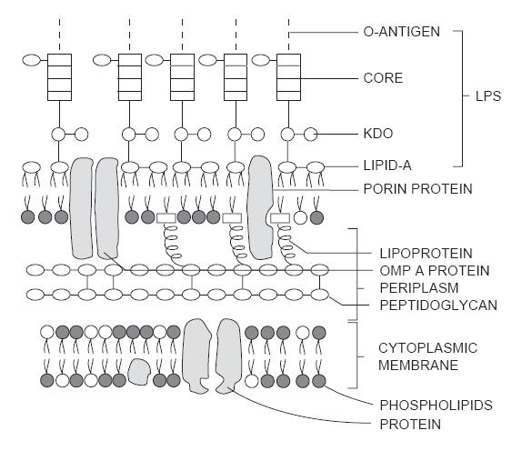
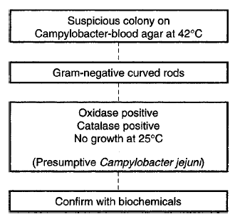

Metabolism is by two means. Fermentation is an anaerobic process by which bacteria catabolize carbohydrates to produce energy. The process is carried out by both obligate and facultative anaerobes, and the final electron acceptor is an organic compound. Respiration (oxidation) is an efficient process by which obligate aerobes and facultative anaerobes generate energy. Molecular oxygen is the final electron acceptor. Respiration is a more efficient mechanism for energy generation than fermentation.
Bacterial Cell Structure
The cell membrane serves as an osmotic barrier and may be a site of antibiotic action. An intact membrane is essential for bacterial viability.
Bacteria also have a cell wall.
The most prominent layer of the gram-positive cell wall is the thick, rigid peptidoglycan layer, the site of action of the penicillins and cephalosporins. Teichoic and lipoteichoic acids are unique to the gram-positive cell wall (see figure).
 More complex than the gram-positive cell wall, the gram-negative cell wall contains a thinner peptidoglycan layer, but also an outer lipopolysaccharide (LPS) layer. LPS is an endotoxin that is an important virulence factor. An endotoxin causes shock, sepsis, fever, disseminated intravascular coagulation (DIC), and leukopenia (see figure).
A polysaccharide capsule covers many bacteria and serves to prevent or inhibit phagocytosis. For many organisms (e.g., Streptococcus pneumoniae), the capsule is the chief determinant of virulence.
Pili, also called fimbriae, are short, hairlike structures that serve to attach bacteria to target cells. For many bacteria (e.g., Neisseria gonorrhoeae), interference with attachment prevents infection. The exchange of deoxyribonucleic acid (DNA) between bacteria during conjugation occurs through the pili.
The presence of flagella determine motility and can be used in classification.
Endospores are a means of survival that make disease control very difficult. The two spore-forming genera of importance are Bacillus and Clostridium.
Stains
The Gram's stain is a fundamental property of bacteria. Crystal violet is the primary stain. Iodine binds the crystal violet to the cell wall (mordant). Decolorizer washes out any unbound dye. Safranin O is a counterstain. Gram-positive cells retain the crystal violet and stain purple. Gram-negative cells are decolorized, retain the safranin O counterstain, and stain red or pink.
Gram's stain is especially useful for examining smears of clinical specimens. Initial treatment, and often a presumptive identification, can be made from Gram's stain results. White and red blood cells (WBCs and RBCs), as well as cellular debris, stain pink. This can serve as an internal control.
Acridine orange stain is an orange fluorescent stain used to detect bacteria in body fluids in which numbers of bacteria may be few (e.g., blood and spinal fluid). The stain can also be used to detect bacteria in direct smears with excess cellular debris. It is very sensitive and can detect small numbers of bacteria that are living or dead. The procedure consists of flooding a methanol-fixed smear with acridine orange for 2 minutes, washing, and then observing with a fluorescence microscope (see Web Color Image 7-6).
Methylene blue stain is especially helpful for demonstrating metachromatic granules and characteristic morphology of Corynebacterium diphtheriae from Loeffler coagulated serum medium. The procedure consists of flooding a fixed smear with methylene blue, followed by washing (see Web Color Image 7-7).
Acid-fast stain is used to detect organisms that do not stain well with other conventional stains (e.g., Mycobacterium spp., Nocardia, Actinomyces). These organisms have a high lipid content in their cell walls. Once stained, they are very resistant to decolorization by acid alcohol. The most commonly used method is a carbolfuchsin stain, the modified Kinyoun stain. The primary stain is carbolfuchsin, which contains a surface-active detergent to facilitate penetration of the stain without heating. After washing, methylene blue is used as a counterstain. Acid-fast organisms appear red against a blue background. The Ziehl-Neelsen is a carbolfuchsin stain that utilizes heat to drive the stain into the mycobacterial cell wall (see Web Color Image 7-8).
Auramine-rhodamine stain is a fluorescent stain that detects mycolic acids and can be used for staining acid-fast organisms. The smear is stained with auramine-rhodamine, decolorized with acid alcohol, and then flooded with potassium permanganate. It is observed with a fluorescence microscope. The cells appear yellow against a dark background (see Web Color Image 7-9).
Calcofluor white stain binds specifically to chitin, which is found in fungal cell walls. It is used to detect yeast cells and hyphae in skin scrapings and other specimens. The fungal elements appear green or blue-white (see Web Color Image 7-10).
Normal Flora
This describes the microorganisms that are frequently found on or in the bodies of healthy persons.
The general characteristic of normal flora are:
- local conditions select for those organisms that are suited for growth in a particular area.
- resident flora colonize an area for months or years.
- transient flora are present at a site temporarily.
- organisms that live at the expense of the host are parasites.
- organisms that benefit the host are symbionts.
- commensals have a neutral effect on the host.
- a carrier harbors the organism without manifesting symptoms, but is capable of transmitting infection (carrier state).
- opportunists are organisms that do not normally cause infection, but can do so if the condition of the host changes (e.g., immunosuppression).
The normal flora of the skin describes a wide variety of microorganisms that are not eliminated by washing or superficial antisepsis. Propionibacterium acnes colonizes the sebaceous glands. Micrococcus, Staphylococcus spp., and diphtheroids are common. Intact skin is an effective barrier to microbial invasion.
The mouth contains large numbers of bacteria, most commonly Streptococcus spp. (especially viridans species), coagulase-negative Staphylococcus, Peptostreptococcus, and other anaerobes.
The respiratory tract beyond the oropharynx is normally sterile. The ciliary action of epithelial cells and mucus movement remove invading organisms. The nose and nasopharynx contain Staphylococcus aureus, S. epidermidis, and Streptococcus spp. The following may be present transiently during community outbreaks of infection: Streptococcus pneumoniae, Haemophilus influenzae, and Neisseria meningitidis. The normal flora in the oropharynx mirrors that of the mouth.
Most microorganisms are destroyed in the stomach due to the acidic pH. The survivors multiply in the colon. More than 90% of the microbial population is comprised of anaerobes. Alteration of the normal flora by antibiotics may allow a superinfection by Clostridium difficile (necrotizing enterocolitis), Candida albicans, or S. aureus. The most commonly found organisms in the gastrointestinal tract are: Bacteroides spp., Clostridium spp., Eubacterium spp., anaerobic streptococci, Enterococcus spp., and Enterobacteriaceae.
In the genitourinary tract, the outermost segment of the urethra is colonized by skin organisms. The vagina is colonized with Lactobacillus, anaerobic gram-negative rod-shaped bacteria, and gram-positive cocci.
Pathogenesis Of Infection
The host has resistance to infection and colonization of microorganisms. Innate immunity, or natural immunity, is a nonspecific mechanism of resistance to disease. Physical barriers such as the skin, mucous membranes, and cilia help prevent the invasion of pathogenic bacteria. The cleansing action of fluids in the eyes, respiratory, digestive, urinary, and genital tracts are also effective host resistance mechanisms. Antimicrobial substances such as secretory IgA, lysozyme, B-lysins, and interferon are produced in the human host. Phagocytosis, inflammation, and complement activation are also important nonspecific defense mechanisms of the innate immunity.
Indigenous microbial flora compete with invading bacteria for colonization sites, as well as produce inhibitory bacteriocins.
Acquired or specific immunity develops in response to a specific foreign antigen (e.g., invading bacterium). Acquired immunity may be active (a response to immunization or disease) or passive (through placental transfer or infusions of serum or plasma). The humoral response involves antibody production by B lymphocytes. Cell-medicated immunity involves cells, such as macrophages, cytokines, and T lymphocytes. The cellular response provides immunity against intracellular pathogens, including viruses, fungi, and mycobacteria.
For a pathogen to be successful, the degree of pathogenicity of a microorganism is directly related to its virulence. A virulent strain is characterized by its ability to evade or overcome host defenses and cause disease. Microbial virulence factors include adhesions, capsular polysaccharides, and production of extracellular toxins and enzymes that may cause damage to the host.
An appropriate portal of entry is necessary for successful transmission of disease. For example, respiratory pathogens enter the respiratory tract via inhalation of aerosolized respiratory secretions. Gastrointestinal pathogens enter the GI tract via ingestion of contaminated food and water.
A sufficient infective dose is needed for a microorganism to be able to cause disease in its host. Some organisms can establish an infection with a relatively low infective dose (e.g., Shigella), whereas others require a much higher infective dose to cause infection (e.g., Salmonella).
A successful pathogen must be able to overcome the host resistance mechanisms, including the immune responses, and cause disease in a susceptible host.
For continued transmission of disease, pathogenic microorganisms must be able to leave the host via an appropriate portal of exit. For most pathogens, it is the same as the portal of entry.
Airborne transmission involves the respiratory spread of infectious disease via aerosolized respiratory secretions or contact with contaminated inanimate objects or fingers and hands.
Ingestion of contaminated food and water is the usual means for transmission of gastrointestinal infections. Infection can also occur via the fecal-oral route.
Sexual transmission is the route of infection for venereal diseases. Some diseases can be also transmitted via skin-to-skin contact or via direct transfer of saliva (e.g., kissing).
Animal and human bites can result in serious wound infections, usually caused by mouth flora. Rabies is an example of a viral infection transmitted from an animal bite. Opportunistic pathogens, including environmental bacteria, can enter the human via cuts and trauma wounds.
Arthropod vectors, such as ticks, fleas, and mites, are responsible for the transmission of diseases such as malaria, Lyme disease, plague, Rocky Mountain spotted fever, and hemorrhagic fevers. The infectious agent multiplies in the arthropod and is transmitted when the arthropod feeds off a human host.
Zoonoses are diseases of animals that are transmitted to humans. Transmission is usually via contact with infected animals, animal secretions, or animal products. Zoonoses can also be transmitted via animal bites or arthropod vectors.
Collection And Handling Of Clinical Specimens
Collection
A properly collected specimen is absolutely crucial to quality diagnostic information and patient care. With respect to safety, universal precautions are followed throughout the collection and handling process. Persons collecting or handling specimens should wear gloves and a laboratory coat. Eye protection should also be worn if splashing is a potential hazard. Accidents or injuries must be reported immediately.
General guidelines
- The specimen should be from the infection site and not contaminated by the surrounding area (e.g., culture within a wound and not the surface or the surrounding skin).
- Whenever possible, the specimen should be collected before antimicrobials are administered.
- Appropriate collection devices and containers should be used and must be sterile. Aseptic technique is required.
- The specimen container should be labeled with the patient's identification, the date and time of collection, and the source of specimen.
Collection of specimens from various body sites is specified:
- Throat. The tongue should be depressed before swabbing between the tonsillar pillars and behind the uvula. The cheek, tongue, and teeth should not be touched.
- Nasopharynx. A flexible wire nasopharyngeal swab should be gently inserted through the nose into the posterior nasopharynx, rotated, and then removed.
- Sputum. Whenever possible, the patient should gargle with water (not mouthwash) immediately before sampling. Early morning specimens are best. Expectorated specimens from a deep cough should be collected into a sterile specimen cup.
- Stool should be collected in a clean, wide-mouthed container with a tight-fitting lid. If the specimen cannot be plated within 1 hour of collection, it should be mixed with a transport medium (e.g., buffered glycerol saline, Cary-Blair transport medium). The change in pH and temperature over time is detrimental to Shigella spp. Stool specimens should never be taken from the toilet and should not be contaminated with urine. Commercial systems with preservatives are available for collection of specimens for both bacterial culture and ova and parasite examination.
- Urine. Midstream clean-catch is the most common collection method. Proper cleansing of the urethral area is important, especially in women. The first few milliliters, which flush out the urethra, are discarded. The specimen should be collected into a sterile specimen cup and transported immediately to the laboratory or refrigerated, because contaminants grow readily at room temperature. Cultures of catheterized urine specimens usually have less contaminating bacterial flora.
- Blood. Two to three cultures should be collected at random times during a 24-hour period. Collecting more than three sets of cultures in a 24-hour period does not significantly increase the probability of detecting bacteremia. Skin is disinfected with 70% alcohol, followed by iodine. The disinfectant is allowed to dry. The puncture site should not be palpated after disinfection. Ideally, 20 to 30 mL of blood per culture is collected from an adult (1-5 mL from infants and small children). Iodine should be cleaned from the puncture site with alcohol following the venipuncture.
- Cerebrospinal fluid should be collected aseptically by a physician. This specimen should be processed immediately and not exposed to heat or refrigeration.
- Abscess aspirates or exudates, as well as synovial, pericardial, and chest fluid should be collected by a physician with a needle and syringe. The use of swabs may inhibit growth of anaerobes or increase the likelihood of contamination with indigenous bacteria flora from adjacent tissues (e.g., mucous membranes or superficial skin surfaces). Care should be taken not to inject an air bubble into the syringe.
- Genital tract:
- Men. Exudates may be expressed from the urethral orifice or a small-diameter swab may be inserted 3 to 4 cm into the urethra. The specimen should be plated immediately on the appropriate media and not allowed to dry or be exposed to cold temperatures. A direct Gram's stain smear should be prepared.
- Women. Cervical specimens are obtained by a physician with the aid of a speculum. Lubricants, which may be lethal to Neisseria gonorrhoeae, should not be used on the speculum. The cervical mucus plug is removed, and a sterile swab is inserted into the cervix, rotated, and allowed to remain for a few seconds. The specimen should be plated immediately to the appropriate media, and swabs should not be refrigerated, as refrigeration may be lethal to genital pathogens. A smear for Gram's stain should be prepared from the specimen.
Handling
Transport all specimens to the laboratory promptly. Anaerobic specimens must be transported in an anaerobic transport system. If transport cannot occur immediately, most specimens can be held at 2-8°C. Exceptions to this include specimens that likely contain temperature-sensitive organisms (e.g., Neisseria), blood culture bottles, and cerebrospinal fluid (CSF).
Generally, swabs are the least desirable collection and transport method. However, organisms can be successfully cultured if the swab is handled and transported properly (i.e., not allowed to dry out). Swabs are inappropriate for culturing anaerobes, although in some clinical settings, culturettes are often used. If swabs are used for the culture of anaerobes, is essential that an anaerobic culturette be used. Use of aerobic culturettes for the culture of anaerobes is criteria for specimen rejection.
In processing the specimens, selection of proper media is essential. Some general principles apply to the use of primary plating media. In most cases, the concern is that the primary media will grow and isolate all or a majority of the possible organisms from a clinical specimen. In those cases in which certain organisms are excluded, the decision of what media is used is based on time, cost, and probability of isolation information. In many cases, the choice of primary media is an individual laboratory choice. Selective and differential media may be used in addition to all-purpose and enriched agars. These specialized media are used for selective recovery and preliminary differentiation of specific bacteria. It is especially important that the microbiologist understands the range and purpose of each primary isolation medium, as well as the various reactions of the organisms, since individual organism groups may react differently on specific media.
- Most isolation protocols call for the use of blood agar (with 5% sheep RBC).
- Chocolate agar is used for fastidious isolates.
- Specialized media [e.g., mannitol salt agar, bismuth sulfite agar, Campylobacter agar, thiosulfate-citrate-bile salts-sucrose (TCBS) agar] are used when specific organisms are suspected.
- Substitutions may be made with acceptable results (e.g., MacConkey agar in place of Eosin Methylene Blue agar).
- Prereduced anaerobically sterilized (PRAS) culture media is recommended for the culture of anaerobes (see anaerobe section).
Incubation conditions will vary.
The normal incubation temperature for bacterial cultures is 35-37°C. Culture plates may be incubated in ambient air, but incubation in an capnophilic atmosphere of 5% to 10% CO2 is recommended to enhance the growth of fastidious bacterial isolates. Anaerobic cultures should be incubated anaerobically at 35-37°C. Anaerobic bags, jars, or an anaerobic chamber are appropriate for incubation of anaerobic cultures. The recommended incubation of stool cultures for isolation of Campylobacter jejuni is in a microaerophilic, capnophilic atmosphere at 42-45°C.
The rejection criteria for specimens should be part of the written policy of every clinical laboratory. These criteria should be clearly listed and made available to anyone who might submit specimens for culture. Processing and culture of inappropriate specimens leads to increased costs and misinformation. In the event a specimen is rejected, the person submitting the request should be contacted and informed. In some cases, the difficulty of collection makes culturing necessary, although the results are not optimal.
The following situations or specimen types should be rejected (this is not intended to be a comprehensive list):
- urine or sputum collections more than 24 h old
- specimens received in nonsterile or contaminated containers (including those in which the specimen has leaked out)
- specimens contaminated with barium or other foreign substances
- culturing of Foley catheter tips
- saliva instead of sputum
- unrefrigerated urine specimens two hours or more post-collection
- anaerobic culturing of midstream urine, upper respiratory tract, superficial skin, or feces specimens (certain Clostridium species may be appropriately cultured from feces)
Micrococcaceae
General characteristics
1. Members of the family Micrococcaceae are gram-positive cocci (see Web Color Image 7-1), aerobic or facultative anaerobes, and catalase-positive (except Stomatococcus).The catalase test differentiates the Micrococcaceae from the gram-positive, catalase-negative Streptococcaceae. Catalase converts hydrogen peroxide is converted to water and oxygen. The observation of vigorous bubbling when the bacterium is mixed with a drop of 3% hydrogen peroxide is a positive test (see Web Color Image 7-11).
Most Micrococcaceae are members of the indigenous flora and are commonly isolated from a wide variety of diseases.

| Characteristic | Staphylococcus | Micrococcus | Stomatococcus |
|---|---|---|---|
| Catalase | + | + | − |
| Growth on 6.5% NaCl agar | + | + | − |
| Modified oxidase test | − | + | − |
| Resistance to bacitracin (0.04 µM) disk | + | − | − |
| Resistance to furazolidone (100 µg) disk | − | + | − |
| + = positive, − = negative. | |||
Staphylococcus
The staphylococci are catalase-positive, nonmotile, facultative anaerobes that
are normal inhabitants of the skin and mucous membranes. These organisms
commonly cause human infections. The species in the genus are initially
differentiated by the coagulase test (see Web Color Images 7- 12 and 7-13). The
most important coagulase-positive species is S. aureus. Some animal
species produce coagulase, but are rarely isolated from human samples.
Staphylococci that do not produce coagulase are called coagulase-negative
staphylococci.
The most prominent species are S. epidermidis and
S. saprophyticus.
Micrococcus
Micrococci are opportunistic pathogens found only in immunocompromised persons. Micrococcus is of low pathogenic significance, but may be isolated as a contaminant or as part of the normal flora.
Stomatococcus
This genus is part of the normal oral flora and is rarely isolated from infection. The colonies adhere strongly to the agar surface.
Staphylococcus aureus
This species of Staphylococcus is a pathogne in many diseases and conditions.Skin and wound infections caused by S. aureus are suppurative and pyogenic. Some common skin infections are boils, carbuncles, furuncles, and folliculitis.
Staphylococcal enterotoxins A and D are associated with food poisoning. The source of contamination is usually an infected food handler. Infection occurs when an individual ingests food contaminated with enterotoxin-producing strains. The heat-stable toxins are preformed in the food. Symptoms appear rapidly (2-6 hours after ingestion) and resolve within 8 to 10 hours. Symptoms may include nausea, vomiting, headache, abdominal pain, and severe cramping.
Scalded skin syndrome (Ritter's disease) is an extensive exfoliative dermatitis that occurs primarily in newborns and is caused by staphylococcal exfoliative or epidermolytic toxin. It can also occur in adults, most frequently among those who have chronic renal failure or are immunocompromised. The mortality rate is low in children but high in adults.
Toxic shock syndrome (TSS) is a multisystem disease characterized by high fever, rash, hypotension, shock, desquamation of the hands and feet, and possible death. The etiologic agent is a stain of S. aureus that produces enterotoxin F [toxic-shock syndrome toxin-1 (TSST-1)]. There is an association between the use of tampons and TSS, although the disease may occur in both sexes if a toxin-producing strain of S. aureus has caused infection.
Other staphylococcal infections include staphylococcal pneumonia secondary to influenza can occur. The mortality rate is high. In addition osteomyelitis can occur secondary to bacteremia.
Other than the toxins associated with specific infections (e.g., exfoliative toxin, enterotoxins A and D, TSST-1), other toxins and enzymes are also virulence factors of S. aureus. Coagulase is the major virulence marker of the species. Protein A is a cellular component in the cell wall that helps the bacterium avoid phagocytosis. Alpha and beta hemolysins cause the hemolysis of RBCs. In addition, hyaluronidase prevents the spread of infection and lipase facilitates colonization of the bacterium on the skin surface.
Laboratory identification of Staphylococcus aureus. Microscopic examination of stained smears from clinical specimens can be especially helpful. Numerous gram-positive cocci with polymorphonuclear cells are usually seen. S. aureus grows readily on common laboratory media. On sheep blood agar, colonies appear as round, smooth and white or pigmented (yellow-orange). They are usually β-hemolytic. (See Web Color Image 7-14.) S. aureus is most often identified by the coagulase test. Isolates may show cellbound (clumping factor) or free (extracellular) coagulase. Cell-bound coagulase is identified by mixing the suspected organism with a drop of rabbit plasma on a glass slide. (See Web Color Image 7-12.) If clumping occurs, the isolate demonstrates cell-bound coagulase and is identified as S. aureus. Isolates that do not clump are tested for free coagulase by the tube method (see Web Color Image 7-13), in which the organism is mixed with 0.5 mL of rabbit plasma, and following incubation at 37°C for 4 hours, is observed for clot formation. Selective media that can be used to isolate S. aureus from heavily contaminated specimens or when it is the only isolate of concern are mannitol salt agar (MSA), phenylethyl alcohol (PEA) blood agar, and Columbia-naladixic acid Agar (CNA).
MSA provides mannitol as a fermentable carbohydrate source as well as 6. 5% sodium chloride (NaCl). Generally, only Staphylococcus species grow on this medium because of the high salt content. S. aureus ferments the mannitol to produce acid, which turns the pink agar yellow. The colonies are identified by a yellow halo. This test is presumptive because some strains of S. epidermidis and few other species can also ferment mannitol.
PEA and CNA agars both inhibit the growth of gram-negative organisms, whereas the gram-positive bacteria, including Staphylococcus species, grow well. Five-percent sheep blood is incorporated in the medium for additional enrichment and detection of hemolytic reactions.
Rapid methods make use of plasma-coated latex particles. The plasma detects clumping factor and causes agglutination of the particles. Protein A in the cell wall of S. aureus (with IgG) may also be detected with rapid methods. Other species that produce clumping factor produce positive reactions, but are tube-coagulasenegative.
Coagulase-negative Staphylococci
The coagulase-negative staphylococci are found as normal flora in humans and animals. The incidence of infection by these organisms has increased. They are often hospital-acquired (nosocomial). Predisposing factors include catheterization, prosthetic device implants, and immunosuppressive therapy. The most common species isolated from clinical infections are S. epidermidis and S. saprophyticus. S. saprophyticus has been associated with UTIs in young, sexually active women. Other species of coagulase-negative staphylococci are not isolated frequently. Three species that can cause a wide range of infections, but do so only occasionally, are S. haemolyticus, S. lugdunensis, and S. schleiferi. The latter two produce clumping factor and may yield a positive slide coagulase test.
Laboratory identification of coagulase-negative staphylococci is done as follows:
- on sheep blood agar, colonies are usually round, smooth, and white without hemolysis. (See Web Color Image 7-15.)
- the most common isolates are S. epidermidis and S. saprophyticus.
- urine isolates that are coagulase-negative are further tested to presumptively identify S. saprophyticus. This is done by testing for novobiocin susceptibility using a 5-mg novobiocin disk. S. saprophyticus is resistant to novobiocin, whereas other coagulase-negative staphylococci are susceptible.
- species identification of the coagulase-negative staphylococci requires differentiation using many biochemical tests. Various commercial identification systems exist and may be used if appropriate.
Micrococcus species
Micrococcus species are environmental organisms, as well as normal skin flora. They may also be normal flora in the respiratory tract or other sites in the body, and are common contaminants. These coagulase-negative, gram-positive opportunists can easily be differentiated from the Staphylococcus species.
Laboratory identification of Micrococcus species is as follows:
- The modified oxidase test uses a reagent (6% tetramethylphenylene diamine hydrochloride in dimethyl sulfoxide), added to a small amount of growth smeared onto a filter paper. Micrococci are modified oxidase-positive and turn dark blue within 2 minutes.
- Is there bacitracin susceptibility? An isolate is streaked onto a sheep blood Mueller-Hinton medium. A 40 mU bacitracin disk is placed onto the streaked area, and the plate is incubated overnight and observed for a zone of inhibition. Micrococci are susceptible to bacitracin.
- Furazolidone susceptibility is tested exactly as for bacitracin susceptibility, except a disk containing 100-µg furazolidone is used. Micrococci are resistant to furazolidone. (See Web Color Image 7-16.)
Antibiotic susceptibility
1. Penicillin resistance is often so high, especially in S. aureus isolates (85% to 90%), that other antibiotics must often be used. There is variability in the susceptibility patterns. 2. A common resistance mechanism of the staphylococci is a production of β -lactamase, an enzyme that inactivates the B-lactam antibiotics. 3. Various β-lactamase resistant penicillins have been developed. Methicillin is the most frequently used. Oxacillin is used for in vitro susceptibility testing of methicillin resistance. 4. Methicillin-resistant S. aureus (MRSA) and methicillin-resistant S. epidermidis (MRSE) have increased in number. These may also be referred to as oxacillin-resistant S. aureus (ORSA) and oxacillin-resistant S. epidermidis (ORSE), respectively. Vancomycin has been used as an alternative treatment of methicillin-resistant strains. However, vancomycin resistance is increasing. MRSA are etiologic agents of serious nosocomial and community-associated infections. The increased virulence of this bacterium is a major concern of physicians, epidemiologists, and the health care community.Streptococcus, Enterococcus, And Related Genera
The organisms included in this group are catalase-negative, gram-positive cocci (old cells may stain gram-negative or gram-variable) that are arranged in pairs or chains (see Web Color Image 7-2) and are facultative anaerobes. Growth requirements may be complex, and the use of blood or enriched medium is necessary for isolation. Their role in human disease ranges from well-established and common, to rare but increasing.
| Type | Characteristic |
|---|---|
| Alpha (α) | Greenish discoloration in medium surrounding colony due to partial lysis of red blood cells |
| Alpha-prime (α′) | Small ring of no hemolysis around the colony, which is
surrounded by a wider zone of complete hemolysis (also called
wide zonehemolysis) |
| Beta (β) | Clearing of red blood cells surrounding the colony due to complete lysis |
| Nonhemolytic | No change |
| S. pyogenes | S. agalactiae | Enterococcus | Group D | S. pneumonia | Viridans streptococci | Aerococcus | Pediococcus | Leuconotoc | ||
|---|---|---|---|---|---|---|---|---|---|---|
| Hemolysis | β | β | α, β, non | α, non | α | α, non | α | α | α | |
| Susceptibility to: | Vancomycin | S | S | S | S | S | S | S | R | R |
| Bacitracin | S | R | R | R | S | R | n.d. | n.d. | n.d. | |
| SXT | R | R | R | V | S | S | n.d. | n.d. | n.d. | |
| Optochin | R | R | R | R | S | R | n.d. | n.d. | n.d. | |
| Hippurate hydrolysis | − | + | − | − | − | − | + | + | ||
| PYR hydrolysis | + | − | + | − | − | − | + | − | − | |
| CAMP test | − | + | − | − | − | − | − | − | − | |
| Bile esculin hydrolysis | − | − | + | + | = | = | V | + | V | |
| Growth in 6.5% NaCl | − | − | + | − | − | − | + | + | − | |
| LAP | + | + | + | + | + | + | − | + | − | |
| LAP = leucine aminopeptidase, PYR = l-pyrrolidonyl-β-naphthylamide; R = resistant, S = susceptible, SXT = sulfamethoxazole trimethoprim; V = variable, −=negative, +=positive, n.d.= tests not done (vancomycin-resistance is the key characteristic). | ||||||||||
Streptococcus
Streptococcus pneumoniae
S. pneumoniae is often part of the normal flora of the respiratory tract. The key virulence factor is an antiphagocytic capsule. There are approximately 80 antigenic types.
S. pneumoniae is an important human pathogen, causing pneumonia, sinusitis, otitis media, bacteremia, and meningitis. It is frequently isolated as a pathogen and as a member of the normal respiratory flora. Direct smears often reveal leukocytes and numerous gram-positive cocci in pairs. The ends of the cells are slightly pointed, giving them an oval or lancet shape. (See Web Color Image 7-20.)
Complex media, such as brain-heart infusion agar, trypticase soy agar with 5% sheep blood, or chocolate agar are necessary for good growth. Isolates may require increased CO2 for growth during primary isolation. Colonies are α-hemolytic. Young cultures produce a round, glistening, wet, mucoid, dome-shaped appearance.
Laboratory identification. S. pneumoniae is susceptible to optochin
(ethylhydrocuprein hydrochloride). (See Web Color Image 7-21.) The bile
solubility test is also used for identification. An α-hemolytic
streptococcus that is optochinsusceptible or bile-soluble can be identified as
S. pneumoniae. Other α-hemolytic streptococci are negative for
both tests. Capsular subtypes of S. pneumoniae are detected using the
Quellung test, a microscopic precipitin test
in which the capsules
surrounding the pneumococci appear to swell. (See Web Color Image 7-22.)
Streptococcus pyogenes
The cell wall contains the Lancefield group A carbohydrate. This organism is also referred to as group A streptococcus or β-hemolytic group A streptococcus.
Several virulence factors are known for S. pyogenes.
- The most well-defined virulence factor is M protein. There are more than 80 different serotypes. Resistance to infection is related to the presence of type-specific antibodies to the M protein. The M protein molecule causes the streptococcal cell to resist phagocytosis. It enables the bacterial cell to adhere to mucosal cells.
- Streptolysin O causes hemolysis of RBCs. Its role in virulence is unknown. Antibodies to streptolysin O indicate a recent infection (antistreptolysin O titer).
- Hyaluronidase (spreading factor) may favor the spread of the organism through the tissues.
- All strains form at least one deoxyribonuclease (DNAse). The most common is DNAse B. These enzymes are antigenic, and antibodies to DNAse can be detected following infection.
- Some strains of S. pyogenes cause a red spreading rash referred to as scarlet fever. This condition is caused by erythrogenic toxin.
- Protein F is a fibronectin-binding protein that facilitates adhesion to epithelial cells.
- Streptokinase causes the lysis of fibrin clots.
There are several different infections caused by S. pyogenes.
- Pharyngitis is one of the most common S. pyogenes infections.
Strep throat
is most frequently seen in children between the ages of 5 and 15 years. Diagnosis relies on a throat culture or a positive quickstrep
test, in which group A antigens are detected from a throat swab in a matter of minutes. A throat culture is recommended if the antigen-detecting test is negative. - Skin infections include impetigo, necrotizing fasciitis, and pyoderma.
- Scarlet fever is a red rash that appears on the upper chest and spreads to the trunk and extremities following infection with S. pyogenes.
- Rheumatic fever and glomerulonephritis may result from infection at other sites in the body. Damage appears to result from cross-reactivity of the streptococcal antigens with host tissue antigens.
- Streptococcal TSS (toxic shock syndrome) is similar to that caused by Staphylococcus aureus.
For identifying S. pyogenes, colonies on blood agar are small, transparent, and smooth, and they show β hemolysis. Gram's stain reveals gram-positive cocci with some short chains. The bacterium is susceptible to bacitracin or Taxo A (see Web Color Image 7-23) and resistant to SXT. In addition, S. pyogenes hydrolyzes l-pyrrolidonyl-β-naphthylamide (PYR). A positive test is development of a red color after the addition of dimethylaminocinnamaldehyde reagent to an inoculated PYR disk (see Web Color Image 7-24).
Streptococcus agalactiae
The cell wall contains the Lancefield group B carbohydrate. This organism is also referred to as group B streptococcus. It may be found as normal flora in the genitourinary tract. Its capsule is the most important virulence factor. Other factors (e.g., DNAse, hyaluronidase) have not been shown to be factors in infection.
It causes two infections. Neonatal sepsis (usually manifest as pneumonia or meningitis) occurs soon after birth. The most important factor in infection is the presence of group B streptococcus in the vagina of the mother. Postpartum fever and sepsis may occur after birth and may manifest as endometritis or a wound infection.
Identification may be done on blood agar, seen as grayish white mucoid colonies surrounded by a small zone of β hemolysis. They are gram positive cocci that form short chains in clinical specimens and long chains in culture. Group B streptococci are CAMP test-positive, demonstrating an arrowhead-shaped area of synergistic hemolysis when streaked perpendicular to a β-hemolytic S. aureus (see Web Color Image 7-25). Group B streptococci are also hippurate hydrolysis-positive, resistant to SXT, and PYR-negative.
Groups C and G
There are three hemolytic species in Lancefield group C that are occasionally isolated from clinical specimens: S. equi, S. zooepidemicus, and S. equisimilis. The major species found in group G is S. canis. It occasionally causes infection, and is part of the normal skin flora. Minute colony types of group G are part of the S. milleri group, with S. anginosus being the most prominent species.
These groups produce a variety of infections similar to those caused by groups A and B. Group C can cause pharyngitis.
In the laboratory, Groups C and G can be identified by extensive biochemical tests. However, serologic tests to identify the group carbohydrate in the cell wall of the isolate (e.g., agglutination) are best.
Group D
The group D streptococci include S. bovis and S. equinus. They may be found as normal intestinal flora.
The group D streptococci may be etiologic agents of bacterial endocarditis, UTIs, and other infections, such as abscesses and wound infections. An association has been made between bacteremia due to S. bovis and the presence of gastrointestinal tumors. Isolation of S. bovis from a blood culture may be the first indication that the patient has an occult tumor.
In the laboratory, hemolysis is usually absent, or α hemolysis is present. Key reactions of group D streptococci include a positive bile esculin test (formation of a black precipitate due to the hydrolysis of esculin) with no growth in 6.5% NaCl broth. Group D can be separated from Enterococcus by the l-pyrrolidonyl- β-naphthylamide (PYR) test because it is negative and Enterococcus is positive. (The enterococci also grow in 6.5% NaCl broth.) Serotyping should be done to identify an isolate such as S. bovis, because it cannot be distinguished from some of the viridans group by biochemical tests alone.
Enterococcus
This genus is found in the intestinal tract. The species found in this genus include E. faecalis, which is the most common isolate, E. faecium, E. avium, and E. durans. These enterococcal species share a number of characteristics with the group D streptococci, including the group D antigen. They show resistance to several of the commonly used antibiotics, so differentiation from Group D Streptococcus and susceptibility testing is important.
The infections caused are similar to those caused by the group D streptococci. The most common is a urinary tract infection.
It is not difficult to differentiate between Enterococcus and group D streptococci. In addition to being positive for bile esculin (black precipitate), Enterococcus species grow in 6.5% NaCl broth (see Web Color Image 7-26), are PYR-positive (see Web Color Image 7-24), and SXT-resistant.
Enterococci may be screened for high-level aminoglycoside resistance because aminoglycosides are usually used in combination with ampicillin or penicillin for effective treatment of enterococcal infections. Resistant strains cannot be used for synergistic treatment. Gentamicin and streptomycin resistance can be detected with broth or agar dilution and disk diffusion tests.
The emergence of vancomycin-resistant Enterococcus (VRE), encoded by the vanA gene, is a major concern of physicians, microbiologists, and hospital infection control personnel. E. faecium is the most common species, followed by E. faecalis. Most microbiology laboratories screen for VR colonization using vancomycincontaining agar. Susceptibility testing is performed only on clinically significant isolates.
Viridans streptococci
The viridans group includes those α-hemolytic streptococci that lack Lancefield group antigens and do not meet the criteria for S. pneumoniae. They are part of the normal flora of the oropharynx and intestine. The most common infection caused by these organisms is subacute bacterial endocarditis.
The viridans streptococci are fastidious and some strains require increased CO2 for growth. Identification of the viridans streptococci to the species level is a difficult task. Part of the reason for this is that there is not widespread agreement on a classification scheme. Species of viridans streptococci include S. mutans, S. salivarius, S. sanguis, S. mitis, and S. milleri (not β hemolytic).
Nutritionally variant streptococci (NVS)
The NVS subgroup of viridans streptococci are nutritionally deficient and have been isolated from patients who have endocarditis and otitis media. This subgroup is also known as pyridoxal (vitamin B6)-dependent, thiol-dependent, or symbiotic streptococci. Pyridoxal is not present in most liquid and solid bacteriologic media, so bacteriologic media must be supplemented with pyridoxal (vitamin B6) to support the growth of NVS. The NVS colonies are small, measuring 0.2 to 0.5 mm in diameter. When gram-stained, the morphology can vary from classic gram-positive streptococci to gram-negative or gram-variable pleomorphic forms. As the optimal concentrations or required nutrients decrease, the cells become pleomorphic, even showing globular and filamentous forms.
NVS satellite around or grow adjacent to staphylococcal isolates. The staphylococci provide the growth requirements needed to facilitate the growth of the NVS. A clue to the presence of NVS is a positive Gram's stain, but negative cultures.
Treatment
Treatment of streptococcal and enterococcal infections. Most species of Streptococcus are susceptible to penicillin. S. agalactiae is less susceptible than group A and may require a combination of ampicillin and an aminoglycoside. Group D is susceptible to penicillin, whereas Enterococcus is usually resistant. Enterococcus is often treated with a penicilli n-aminoglycoside combination (synergy). Some isolates are resistant to this combination therapy. Although most pneumococcal isolates are susceptible to penicillin, some strains have shown resistance. Resistant streptococcal strains are often treated with erythromycin. Linezolid is often used for treatment of infections caused by vancomycin-resistant enterococci (VRE).
Streptococcus-like organisms
Aerococcus is very similar to Enterococcus on blood agar. The gram-positive coccus is susceptible to vancomycin and can be isolated from tissue samples of endocarditis and other varied infections.
Leuconostoc is very similar to viridans streptococci on blood agar. It is found in the general environment. A Gram's stain shows gram-positive coccobacilli in pairs and short chains. Leuconostoc has been found in patients who have meningitis and endocarditis. It is intrinsically resistant to vancomycin.
Pediococcus is also found in the general environment. A Gram's stain shows gram positive cocci in pairs, tetrads, and clusters. Pediococcus is a rare isolate in patients who have septicemia. The bacterium is intrinsically resistant to vancomycin.
Laboratory identification of Streptococci
Hemolysis on blood agar is an important characteristic (see table above). (See Web Color Images 7-17, 7-18, and 7-19.)
Bile solubility measures autolysis of bacteria under the influence of a bile salt (sodium deoxycholate). S. pneumoniae is bile soluble.
Optochin (ethylhydrocuprein hydrochloride) susceptibility is determined by a zone of inhibition (>14 mm with a 5 µg optochin disk) after growing the organism on blood agar with a filter paper disk containing optochin. Results correlate with bile solubility; that is, optochin-susceptible isolates are bile soluble. S. pneumoniae is optochin-susceptible. (See Web Color Image 7-21.)
Bacitracin (Taxo A) susceptibility is a characteristic of S. pyogenes. The test is performed by placing a filter paper disk containing bacitracin on an inoculated blood agar plate, and measuring the zone of inhibition following incubation. (see Web Color Image 7-23.)
Group A and B streptococci are resistant to sulfamethoxazole-trimethoprim (SXT). This resistance can be measured with a filter paper disk or by incorporating SXT into blood agar. The latter technique allows for selective isolation. Enterococcus species are also SXT-resistant.
Group B streptococci hydrolyze hippurate. The glycine liberated can be detected by triketohydrindene hydrate (Ninhydrin), which imparts a purple color.
The Christie, Atkins, and Munch-Petersen (CAMP) test presumptively identifies group B streptococcus by measuring the enhanced hemolytic activity of staphylococcal β-lysin by S. agalactiae. Group B streptococci, plated perpendicular to S. aureus, demonstrate a characteristic arrow-shaped hemolysis pattern. (see Web Color Image 7-25.)
The ability of an organism to hydrolyze esculin is the basis of the esculin test. A positive result is a black precipitate in the agar surrounding the growth. Group D streptococci and Enterococcus are bile esculin positive. (see Web Color Image 7-26.)
Enterococcus is able to grow in nutrient broth containing 6.5% NaCl. (see Web Color Image 7-26.)
Hydrolysis of PYR can be detected by the development of a red color on the addition of cinnamaldehyde reagent. This test is specific for Enterococcus and S. pyogenes. (See Web Color Image 7-24.)
The LAP test (leucine aminopeptidase) is used to help differentiate Aerococcus and Leuconostoc from the other Streptococcus species. Both bacteria are LAP-negative, while other streptococci are LAP-positive. LAP hydrolyzes the substrate, leucine-B-naphthylamide, to B-naphthylamine. Development of a red color is detected upon addition of DMACA.
Serology testing for detection of the C carbodydrate of the cell wall is used for serogrouping of the β-hemolytic streptococci.
Aerobic Gram-Positive Bacilli
Most Commonly Isolated Aerobic Gram-Positive Bacilli
- Bacillus
- Corynebacterium
- Erysipelothrix
- Listeria
- Nocardia
The members of this group that are seen most frequently in the clinical laboratory are listed in the box at right. Except for Corynebacterium diphtheriae, these organisms are of low pathogenicity and usually require an immunocompromised host. With the exception of Bacillus, these organisms are all pleomorphic rods, and most grow well on standard media.
Characteristics of Listeria monocytogenes
- gram-positive coccobacillus
- umbrella motility pattern (motility agar tube) at room temperature
- hippurate hydrolysis positive
- CAMP test positive-block hemolysis pattern
- esculin hydrolysis positive
- growth at 4°C
- catalase-positive
- β hemolytic (very similar to group B streptococcus)
Listeria monocytogenes is widespread in the environment. It causes a wide variety of infections, especially in neonates, pregnant women, and immunosuppressed persons. Meningitis is a common outcome. It can be isolated from blood, CSF, or swabs of lesions. L. monocytogenes grows well on blood agar and closely resembles group B streptococcus. Growth occurs at 4°C. This allows the use of the cold enrichment technique, which requires inoculation of the specimen into broth medium, followed by incubation at 4°C for several weeks. This technique has limited clinical importance. Gram stain shows a gram-positive rod or coccobacillus. (See Web Color Image 7-27.) The bacterium is catalase-positive, hydrolyzes hippurate and esculin, and is CAMP test-positive with block hemolysis. (See Web Color Image 7-28) A characteristic tumbling motility is demonstrated when the organism is grown in broth at room temperature and umbrella motility is observed in semisolid agar motility medium following room temperature incubation. (see Web Color Image 7-29.) Identification of this organism is summarized on the upper left.
Erysipelothrix rhusiopathiae is an uncommon isolate. It is a
pleomorphic gram-positive bacillus that often forms long filaments (see Web
Color Image 7-30). The usual route of infection is through the skin. It is
catalase negative, and forms hydrogen sulfide. The bacterium is nonmotile, but
produces a characteristic bottle brush
extension laterally from the
streak line in soft gelatin agar (see Web Color Image 7-31).
The most important species of Corynebacterium are C. diphtheriae, C. jeikeium, and C. urealyticum. All Corynebacterium species are pleomorphic, pallisading, gram-positive bacilli and resemble C. diphtheriae on Gram's stain. The morphology was therefore termed diphtheroid. The morphology may also be described as picket fence or Chinese letters (see Web Color Image 7-32).
| Media | Reaction |
|---|---|
| cystine-tellurite agar | colonies are black or gray |
| Tinsdale's agar | colonies are dark brown-to-black with brown-to-black halos |
| Loeffler agar | supports growth and enhances pleomorphism |
C. diphtheriae is the cause of diphtheria. The disease has a presentation of local inflammation of the throat with a pseudomembrane caused by dead cells and exudate. The diphtheria toxin damages major organ systems and results in a high mortality rate when infected persons go untreated. Diphtheria occurs in nonimmunized populations. Treatment is with an antitoxin.
Laboratory diagnosis consists of culture and testing for toxin production. Media that have been developed for the growth and identification of C. diphtheriae are summarized in the table below. Suspicious colonies from cystine-tellurite or Tinsdale's agar are gram stained. Catalase and urease tests are performed on gram-positive rods with diphtheroid morphology. (Loeffler's agar can be used to enhance the pleomorphic microscopic morphology of the gram-positive rods.). Urease negative isolates are presumptively identified as C. diphtheriae.
| Organism | Voges-Proskauer Test | Catalase | Growth at 4°C | Motility at Room Temperature | Esculin Hydrolysis | Hydrogen Sulfide (H2S) |
|---|---|---|---|---|---|---|
| Corynebacterium spp. | - | + | - | - | V | - |
| Listeria monocytogenes | + | + | + | + | + | - |
| Erysipelothrix rhusiopathiae | - | - | - | - | - | + |
| + = positive,- = negative, V = variable | ||||||
Toxin production may be determined by the Elek test, which detects toxin production by an isolate using an antitoxin-impregnated filter paper strip that is laid perpendicular to lines of bacterial growth. Precipitin lines are formed if the test stain of C. diphtheriae is a toxigenic strain.
C. jeikeium (group JK) is an extremely virulent organism. It may cause infections following implantation of prosthetic devices, and it is resistant to a wide range of antibiotics. This organism is suspected in those patients who are immunocompromised or have undergone invasive procedures or in whom an isolate with typical diphtheroid morphology is found.
C. urealyticum is a urinary pathogen that is slow growing (48 hours) and strongly urease positive. Urease production occurs within minutes following inoculation on a urea slant.
The lesion that is formed develops a characteristic center of necrosis, which has been termed a black eschar or malignant pustule. Handling of B. anthracis is extremely dangerous and should only be done within a biologic safety cabinet.
The two species of Bacillus that are of medical importance are B.
anthracis and B. cereus. These aerobic bacteria are
catalase-positive, gram-positive spore formers that appear singly or in chains
with a boxcar
morphology on Gram's stain (see Web Color Image 7-33).
- B. anthracis is the cause of anthrax, a rare disease in the United States. It usually appears in the cutaneous form as a result of wounds contaminated with anthrax spores.
- B. cereus is a common cause of food poisoning.
| Species | 10 U Penicillin | Motility | β-Hemolysis | Gelatin Hydrolysis | String of Pearls |
|---|---|---|---|---|---|
| B. anthracis | S | − | − | − | + |
| B. cereus | R | + | + | + | − |
| S = susceptible, R = resistant, + = positive, - = negative. | |||||
Laboratory identification is accomplished by growth on blood agar. Colonies of both species are large and flat. B. cereus is β-hemolytic. The differentiation between B. anthracis and B. cereus is outlined in the table above.
The aerobic Actinomycetes include Nocardia, Actinomadura, and Streptomyces species. These microorganisms are similar morphologically to fungi. They are gram-positive bacilli, but do not produce spores.
Nocardia species are saprophytes and are found worldwide in soil and
on plant material. They cause pulmonary and cutaneous infections in humans.
Nocardia asteroides is the most commonly isolated member of Nocardia.
This organism is usually found in immunocompromised patients as a chronic
infection, particularly pulmonary. It is pleomorphic and partially acid-fast.
(See Web Color Image 7-34). Growth is slow (up to 6 weeks). The colonial
morphology is dry and heaped, similar to a fungus (see Web Color Images 7-35
and 7-36). It also has a soil or musty-basement odor. Exudates may demonstrate
sulfur granules,
which are masses of filamentous organisms with pus
materials.
Actinomadura are etiologic agents of mycetomas. Their microscopic and macroscopic morphology is similar to that of the Nocardia species. However, the microorganisms are not acid-fast.
Streptomyces species are primarily saprophytes, found as soil organisms. They may cause opportunistic infections similar to those caused by the other aerobic actinomycetes.
Lactobacillus species is a pleomorphic, nonspore-forming, gram-positive bacillus. It is catalase-negative, and may growbetter under anaerobic conditions. Lactobacilli are normal vaginal flora.
Arcanobacterium haemolyticum is a small, β-hemolytic, nonspore-forming, grampositive bacillus. It resembles the β-hemolytic streptococci. The organism is the etiologic agent of pharyngitis and must be differentiated from Streptocococcus pyogenes. It is catalase-negative and exhibits a reverse CAMP reaction.
Neisseria and Moraxella catarrhalis
Members of this group are gram-negative cocci that are often seen in pairs. The adjacent sides are flattened, producing a kidney-bean shape (see Web Color Image 7-37). They are all oxidase-positive and catalase-positive (see Web Color Images 7-38 and 7-11). Differentiation of species is often based on acid production from carbohydrate utilization. Some of the pathogenic species may have fastidious growth requirements.
Proper specimen collection is essential for successful isolation. N. gonorrhoeae and N. meningitidis are especially sensitive to drying, cold, and chemicals (disinfectants and antiseptics). Dacron or rayon swabs are less inhibitory than calcium alginate and cotton and are preferred for collection. Specimens should be kept at room temperature and plating should occur as soon as possible following collection.
Neisseria gonorrhoeae
Gonorrhea is a frequently seen venereal disease. The majority of infected men show symptoms such as burning and discharge from the urethra (gonococcal urethritis). Females may be asymptomatic, but infection in this gender may lead to pelvic inflammatory disease. Gonorrhea may cause sterility in males and females and disseminate to blood, skin, and joints.
Ophthalmia neonatorum is primarily a gonococcal infection of the conjunctiva of newborns as a result of passage through an infected mother's birth canal. It can be successfully treated at birth to prevent blindness.
Penicillinase-producing Neisseria gonorrhoeae are a common problem. A β-lactamase test should be done on each isolate to detect resistance to the penicillin antibiotics.
Direct microscopic examination of gram stained urethral discharge from males is a valuable diagnostic procedure. The presence of gram-negative intracellular diplococci (see Web Color Image 7-37) from a symptomatic male with discharge has a 95% correlation rate with culture and is strong presumptive evidence of gonorrhea. Correlation is much lower in females because of the normal flora.
Culture of N. gonorrhoeae can be accomplished with various enriched and selective media. Specimens for culture should be collected from infected sources (cervix, urethra, rectum, or throat.) Swabs or exudates are acceptable specimens, and should be kept at room temperature prior to processing. N. gonorrhoeae grows on chocolate agar, but not on blood agar. In those cases in which normal flora may contaminate the medium, selective agars, inhibitory to organisms other than Neisseria species, may be used. Selective media include Thayer-Martin and modified Thayer-Martin (MTM), Martin-Lewis, and New York City. Other media are often packaged in self-contained trans port/incubation systems that are inoculated at the site of collection. Examples include Transgrow, Gono- Pak, and JEMBEC plates.
Plates are incubated at 35°C in a 3-5% carbon dioxide, humidified atmosphere. Colonies of N. gonorrhoeae are flat, smooth, glistening, and gray to white. The oxidase-positive, catalase-positive, gram-negative diplococcus produces acid from glucose utilization. Identification and differentiation is outlined in the table below. Various tests are available for direct detection of N. gonorrhoeae from clinical specimens. These include detection of cellular antigens and those that detect gonococcal nucleic acid.
| Organisms | Oxidase | Catalase | Acid from Glucose | Acid from Maltose | DNAse | Growth on Nutrient Agar | Butyrate Esterase |
|---|---|---|---|---|---|---|---|
| N. gonorrhoeae | + | + | + | - | - | - | - |
| N. meningitidis | + | + | + | + | - | - | - |
| Other Neisseria species | + | + | +/- | V | - | + | - |
| M. catarrhalis | + | + | - | - | + | + | + |
| DNAse = deoxyribonuclease, V = variable, + = positive, - = negative. | |||||||
Neisseria meningitidis
Meningococcal meningitis is transmitted by respiratory droplets. Prolonged close contact is necessary for infection. The onset is abrupt, with headache, stiff neck, and fever. Petechial skin lesions may be present.
Aside from meningitis (inflammation of both the brain substance and surrounding membranes), meningococcemia, , also involves the blood vessels and various major organs. Petechial skin lesions are common. This condition may progress to DIC. Direct microscopic examination of CSF sediment may reveal intracellular and extracellular gram-negative diplococci (see Web Color Image 7-37).
Specimens for culture include CSF, blood, and joint fluid. Nasopharyngeal swabs are cultured to detect carriers. Specimens should be kept at room temperature and processed as soon as possible. Swabs should not be allowed to dry out. Growth is seen on blood and chocolate agar and is enhanced with increased carbon dioxide and humidity. Colonies of N. meningitidis are flat, smooth, glistening, and gray to white. Acid production from the utilization of glucose and maltose differentiates the bacterium from N. gonorrhoeae. Identification is outlined in the table.
Moraxella catarrhalis is part of the normal upper respiratory tract flora. It may cause otitis media, sinusitis, and respiratory infections. M. catarrhalis grows on blood, chocolate, and nutrient agars. Identification of the asaccharolytic gram-negative coccus is outlined in the table above.
Other Neisseria species only rarely cause clinical infection. These species may need to be differentiated from the pathogenic species, because they are normal flora at the same sites at which the pathogenic species are located (see table).
Miscellaneous Gram-Negative Bacilli
Haemophilus
Members of the genus Haemophilus are gram-negative, nonmotile bacilli and coccobacilli, which are often pleomorphic. Members of Haemophilus require hemin (X factor) and/or nicotinamide adenine dinucleotide (NAD; V factor) for growth (except H. aphrophilus). These fastidious bacteria grow on chocolate agar, but not on blood agar, due to its absence of the NAD.
H. influenzae is the most important species, causing meningitis, otitis media, epiglottitis, pneumonia, and contagious conjunctivitis. Children, especially those who have not been immunized, are particularly at risk. H. influenzae is part of the normal upper respiratory tract flora. Capsular serotype b is the most common cause of disseminated infections, but widespread immunization with the Hib vaccine has resulted in a decreased incidence of these infections.
H. ducreyi is the cause of chancroid, a sexually transmitted disease.
Organisms enter through breaks in the skin and multiply locally. Approximately
1 week later, a small papule appears that soon develops into a painful ulcer. A
Gram's stain of the lesion exudate may show small pleomorphic gram-negative
bacilli in clusters (school of fish
morphology).
H. aegyptius (Koch-Weeks bacillus) is associated with acute, contagious
conjunctivitis, commonly referred to as pinkeye.
H. parainfluenzae and H. aphrophilus are human normal oral flora and are seen primarily in endocarditis.
| Species | Growth-Factor Requirement | Porphyrin | Catalase | Fermentation of | |||
|---|---|---|---|---|---|---|---|
| X | V | Glucose | Sucrose | Lactose | |||
| H. influenzae | + | + | − | + | + | − | − |
| H. parainfluenzae | − | + | + | V | + | + | − |
| H. ducreyi | + | − | − | − | − | − | − |
| H. aphrophilus | − | − | + | − | + | + | + |
| H. aegyptius | + | + | − | + | + | − | − |
| V = variable;+ = positive, − = negative. | |||||||
Differentiation of the Haemophilus species is summarized in the table above. X and V factor requirements can be determined by placing X and V factor - impregnated filter paper strips onto a nutrient agar plate that has been inoculated with the unknown species. X and V requirements are determined by growth patterns (e.g., growth around X indicates a requirement for that factor). As depicted in Web Color Image 7-39, H. influenzae requires both X and V factors for growth. H. parainfluenzae requires only V factor for growth (see Web Color Image 7-40).
Growth can also be seen surrounding colonies of S. aureus, S. pneumoniae, or Neisseria species. These organisms produce V factor as a metabolic byproduct and lyse the RBCs in the medium, releasing the X factor. This is called the satellite phenomenon (see Web Color Image 7-41).
The porphyrin test is a sensitive method to determine X factor requirements. Those species that do not require X factor yield a positive porphyrin test (e.g., H. influenzae is porphyrin negative).
Fermentation of carbohydrates (glucose, sucrose, lactose) can aid in identification of the species.
H. influenzae may be divided into biotypes. The site of infection by H. influenzae can be correlated with biotype. Biotypes are determined by an isolate's activity with indole, urease, and ornithine decarboxylase. The disease association and biochemical characteristics of common biotypes are summarized in the table below. Biotype I is most commonly associated with meningitis and epiglottis. Because of similar biochemical characteristics, additional testing is necessary to differentiate H. aegyptius and H. influenzae.
| Biotype | Indole | Ornithine | Urease | Infection Site |
|---|---|---|---|---|
| I | + | + | + | Meningitis, epiglottis, respiratory tract |
| II | + | − | + | Eye, respiratory tract |
| III | − | − | + | Eye, respiratory tract |
| V | + | + | − | Ear, respiratory tract |
| + = positive, − = negative. | ||||
Resistance to the penicillins is common due to β-lactamases and other mechanisms in Haemophilus.
Pasteurella multocida
Key Characteristics of Pasteurella multocida
- Gram-negative coccobacillus with bipolar staining
- Growth on blood agar
(may have a musty or mousey smell) - No growth on MacConkey agar
- Catalase positive
- Indole positive
- Oxidase positive
- Penicillin susceptible (2-U disk)
- Glucose utilization
This is the most commonly encountered species in the Pasteurella genus. It is found as normal flora in the respiratory tract of animals, especially dogs and cats. Isolation of P. multocida is always a strong possibility in an infected dog or cat bite or scratch. This species appears as a small gram-negative coccobacillus with bipolar staining. The key characteristics for differentiating P. multocida are listed in the box at right.
Bordetella
This species are very small gram-negative bacilli. There are three species that cause human infection: B. pertussis, B. parapertussis, and B. bronchiseptica. All cause respiratory tract infection, but B. pertussis causes the most serious infection, which is whooping cough.
Bordetella pertussis, the cause of pertussis or whooping cough, is found worldwide and is spread via droplets. a. Disease progression. The disease begins with coldlike symptoms (i. e., runny nose, sneezing, malaise). This catarrhal stage is the most infectious. After 1 to 2 weeks, the paroxysmal stage begins, with violent coughs that often make it difficult for the infected person to take a breath. Convalescence can take weeks to months with secondary complications, such as pneumonia, seizures, and encephalopathy possible.
B. pertussis is very sensitive to drying and to trace toxic chemicals on swabs and in media. Specimen collection and transport must be done correctly for successful culture. Cotton swabs are toxic; calcium alginate or Dacron swabs should be used. The best specimen is a nasopharyngeal swab or aspirate. Immediate plating is preferred, because the organism does not readily survive transport. A swab should also be collected for a direct fluorescent antibody and Gram's stain of smears.
Growth can be accomplished using Regan-Lowe or Bordet-Gengou agar
(charcoal-horse blood agar). B. pertussis colonies, often described as
mercury drop
colonies, are small and pearl-like in appearance after 3 to
4 days. It does not grow on sheep blood agar and is urease-negative.
Identification is by microscopic and colonial morphology on selective media,
biochemical reactions, and reactivity with specific antiserum, usually in a
direct fluorescence test (DFA) (see Web Color Image 7-42).
B. parapertussis can be found in patients who have respiratory tract
illness that resembles a mild form of pertussis. This species grows on sheep
blood agar within 2 to 3 days and is urease positive within 24 hours. B.
bronchiseptica is rarely found in humans but causes respiratory tract
disease in animals (kennel cough
). Growth is observed on sheep blood
agar within 1 to 2 days and it is urease-positive within 4 hours (see Web Color
Image 7-43).
Francisella tularensis
This is the causative agent of tularemia, a zoonotic disease. Transmission is via contact with infected animals (e.g., rabbits, deer), arthropod bites (e.g., ticks, fleas), or inhalation. Isolation generally requires extended incubation on media enriched with cystine or cysteine. The gram-negative rod/coccobacillus is very small and stains poorly on Gram's stain. Definitive identification is made with specific antisera (direct fuorescence). This organism is very dangerous to work with in the laboratory. It should always be handled under a biologic safety hood with safety precautions strictly observed.
Brucella
Members of the genus Brucella cause disease in animals. Human disease is normally a result of contact with the animals or their waste, meat, hides, or secretions. There are four species responsible for the majority of human disease: B. melitensis, B. abortus, B. suis, and B. canis.
The disease caused is brucellosis (also known as Bang's disease or undulant fever). It is characterized by fever, chills, fatigue, weakness, and internal organ lesions. It can be chronic. Brucellosis is a CDC reportable infection.
Brucella species are most often isolated from blood or bone marrow. The organism is slow-growing, and blood cultures may need to be incubated for 4 to 6 weeks before they are considered negative. A Gram's stain shows a faintly staining, small, gram negative coccobacillus. Serologic tests (agglutination of the isolate) are valuable in identification. The CO2, requirement, along with urease, hydrogen sulfide, and growth in the presence of thionin and basic fuchsin can also be used in differentiation of the species. The table below summarizes the differential characteristics of the Brucella species. Brucella organisms should be handled under biosafety level 3 conditions with safety precautions strictly observed.
| Species | CO2 Required | Urease | H2S | Inhibition by | Natural Hosts | ||
|---|---|---|---|---|---|---|---|
| Thionine | Fuchsin | ||||||
| B. abortus | + | + <2 h | + | + | − | Cattle | |
| B. melitensis | − | + V | − | − | − | Goats, sheep | |
| B. suis | − | + <0.5 h | + | − | + | Swine | |
| B. canis | − | + <0.5 h | − | − | − | Dogs | |
| H2S = hydrogen sulfide, + = positive, − = negative, V = variable | |||||||
Antinobacillus actinomycetemcomitans
This is a slow-growing, small, facultative gramnegative bacillus associated with endocarditis, bacteremia, and dental infections. It may be associated with Actinomyces. It is catalase positive and oxidase negative (see table below).
Kingella kingae
This species colonizes the upper respiratory tract and is primarily associated with infections of bones and joints, as well as endocarditis in children and young adults. It grows on sheep blood agar and is β-hemolytic. A Gram's stain shows short, plump, gram-negative rods with square ends (see table below). Other less pathogenic species in the genus are K. denitrificans and K. oralis.
Capnocytophaga
This is normal oral flora in humans. It may cause serious infections in immunosuppressed patients. It has been associated with dog bites and is usually isolated from blood or cerebrospinal fluid. It grows on sheep blood agar, but is capnophilic and must have CO2 for growth. Colonies are beige or yellow and show a haze of growth at the periphery as a result of gliding motility (see Web Color Image 7-44). Gram's stain shows fusiform, gram-negative bacillus (see table below). (See Web Color Image 7-45.)
Cardiobacterium hominis
This is a pleomorphic, gram-negative rod that grows on blood, but not MacConkey agar. It is normal human oral flora and is found in patients who have endocarditis and bacteremia. The colonies are small, and growth is slow. Differentiation of the miscellaneous gram-negative bacilli and coccobacilli is summarized in see table below.
| Organism | Oxidase | Catalase | Cell Shape | Indole | Urease | |
|---|---|---|---|---|---|---|
| Coccoid | Fusiform | |||||
| Actinobacillus actinomycetemcomitans | -V | + | + | − | − | − |
| Capnocytophaga | − | − | − | + | − | − |
| Cardiobacterium hominis | + | − | Pleomorphic | + | − | |
| Kingella kingae | + | − | + | − | − | − |
| Pasteurella multocida | + | + | + | − | + | + |
| Brucella | + | + | + | − | − | + 2 h |
| Francisella tularensis | − | + weak | + | − | − | − |
| + = positive, − = negative. | ||||||
Enterobacteriaceae
Medically Significant Enterobacteriaceae
- Escherichia
- Shigella
- Salmonella
- Klebsiella
- Enterobacter
- Serratia
- Proteus
The Enterobacteriaceae is the largest and most medically important family of gramnegative bacilli (see Web Color Image 7-4). Although there are numerous genera and species, more than 90% of the medically important isolates belong to just a few genera (see box at left).
The Enterobacteriaceae are found worldwide and are part of the normal flora of all animals. They are a common cause of nosocomial infections.
Commonly seen sites of infection with members of the Enterobacteriaceae are listed in the table below.
| Site | Type of Enterobacteriaceae |
|---|---|
| Blood |
|
| Central nervous system |
|
| Gastrointestinal |
|
| Lower respiratory tract |
|
| Urinary tract |
|
All members ferment glucose, reduce nitrates to nitrites, and are oxidase-negative. The oxidase reaction is especially important in making a rapid distinction between the Enterobacteriaceae and the majority of the gram-negative nonfermenters. However, the oxidase-positive Plesiomonas shigelloides, formerly in the family Vibrionaceae, has been moved to the family Enterobacteriaceae. Phylogenetic studies have shown that Plesiomonas is closely related to members in this family, particularly the genus Proteus. (Identification of P. shigelloides will be discussed in Section XIII.)
Antigens of this group include the O or somatic antigen, found in the bacterial cell wall, the H or flagellar antigen, and the K or capsular antigen.
Various culture media and tests are used for the isolation, selection, differentiation, and identification of the Enterobacteriaceae.
Media used for isolation and selection of Salmonella and Shigella, along with expected reactions, are summarized in the table below. (see Web Color Images 7-46, 7-47, and 7-48).
| Media | Characteristic Result |
|---|---|
| Bismuth sulfite agar | Salmonella typhi are black colonies surrounded by a black zone of precipitate |
| Brilliant green agar |
|
| Gram-negative broth | The growth of most gram-negative rods is inhibited, whereas Salmonella and Shigella growth is enriched |
| Hektoen enteric agar |
|
| Salmonella-Shigella agar |
|
| Selenite broth |
|
| Xylose-lysine-deoxycholate agar |
|
Media used for the isolation and detection of lactose fermenters are summarized in the table below. (see Web Color Images 7-49, 7-50, and 7-51).
| Media | Characteristic Result |
|---|---|
| Eosin-methylene blue agar |
|
| MacConkey agar |
|
Media and tests used for the identification of the Enterobacteriaceae include the following:
The triple sugar iron agar (TSI) medium differentiates gram-negative bacilli by their ability to ferment glucose, lactose, and sucrose and to produce hydrogen sulfide (Web Color Image 7-52). Nonfermenters produce an alkaline slant and alkaline deep (no change in the red color of the medium). Nonlactose fermenters (but glucose fermenters) produce an alkaline slant (red) and acid (yellow) deep. Lactose fermenters and sucrose fermenters produce an acid (yellow) slant and acid (yellow) deep. A lactose-negative, s ucrose-positive organism will produce an acid slant and acid deep. Hydrogen sulfide (H2S) production is indicated by a black precipitate in the medium. Kliger's iron agar (KIA) is a similar medium, but only incorporates the carbohydrates glucose and lactose. H2S production can also be detected with this formulation (see Web Color Image 7-52).
To test nitrate reduction, a nitrate test medium is inoculated and incubated overnight to determine the ability of microorganisms to reduce nitrates to nitrite. The presence of nitrites in the medium is detected by the addition of N,N -dimethyl-α- naphthylamine and sulfanilic acid. The formation of a red color after the addition of the two reagents indicates that nitrite is present (positive test). If a red color is not detected, all available nitrate may have been reduced to nitrite and then completely converted to nitrogen gas (N 2), nitric oxide (NO), or nitrous oxide (N2O). No nitrite remains to react with the sulfanilic acid. This can be detected by adding a small pinch of zinc dust to the tube (metallic zinc reduces nitrate to nitrite). With the formation of nitrite upon addition of zinc, the reactions can take place, resulting in the red color. A red color at this point indicates that nitrate was still in the broth (negative test). Absence of red color after the addition of zinc indicates that no nitrate was left (positive test). All Enterobacteriaceae reduce nitrates to nitrites (see Web Color Image 7-53).
The oxidase test determines the presence of the cytochrome oxidase system that oxidizes reduced cytochrome with molecular oxygen. A positive test is the development of a purple when the bacterium is mixed with the reagent tetramethyl-p-phenylenediamine dihydrochloride. The Enterobacteriaceae are oxidase-negative, with the exception of Plesiomonas species (see Web Color Image 7-38).
The indole test detects an organism's ability to produce the enzyme tryptophanase and deaminate tryptophan to indole, pyruvic acid, and ammonia. A positive reaction is a detected with the addition of Ehrlich's reagent, p-dimethylaminobenzaldehyde, or Kovac's reagent. A positive reaction is a pink color (see Web Color Images 7-54 and 7-55).
The methyl red (MR) and Voges-Proskauer (VP) tests are used to determine the method by which bacteria metabolize glucose: the mixed acid fermentation pathway or the butylene glycol pathway. The tests detect the end products of glucose fermentation, in accordance with the pathway an organism uses to metabolize glucose. Isolates are inoculated into MR-VP broth and allowed to grow for 48 hours. At that time, the broth is split into two fractions: one to measure methyl red and one for the Voges-Proskauer test (see Web Color Images 7-54 and 7-55). Those organisms that carry out mixed acid fermentation produce vast amounts of acid that will convert the methyl red indicator to a red color (pH <4.4). The Voges-Proskauer test measures the production of acetoin. The addition of 40% potassium hydroxide followed by α-naphthol results in a red complex (neutral pH), which indicates a positive test.
The citrate test determines whether an organism can utilize sodium citrate as a sole source of carbon. Ammonium salts are the nitrogen source in the medium and utilization of these salts results in the release of ammonia, causing a pH change. The bromthymol blue indicator turns the medium from green to blue (a positive test). (See Web Color Images 7-54 and 7-55.)
Organisms that produce urease will hydrolyze urea to form ammonia. The ammonia reacts in solution to form ammonium carbonate, which increases the pH. This is detected by the phenol red in the medium and turns the medium a bright pink color (positive test). Christensen's urea agar is generally a preferred test medium. (See Web Color Image 7-43.)
Bacteria that produce gelatinases that break down gelatin into amino acids. A slant of nutrient gelatin is inoculated and incubated at room temperature for up to several days. If incubation is at 35°C, the medium should be chilled in a refrigerator before reading the test results. Liquefaction of the gelatin is a positive test.
A bacterium utilizes the sodium thiosulfate sulfur source to form H2 S, a colorless gas. H2 S combines with the indicator, ferrous sulfate. Numerous media demonstrate the production of H2S (e.g., sulfide-indole-motiligy agar, motility-indole-ornithine agar, Hektoen enteric agar, Salmonella- Shigella agar, Triple sugar iron agar, Kligler Iron agar, and lysine iron agar.) (See Web Color Images 7-46, 7-47 and 7-56.)
The deamination of phenylalanine (removal of an amine group) by phenylalanine deaminase results in the production of phenylpyruvic acid. Following overnight incubation and the addition of a 10% ferric chloride to an inoculated slant, a green color indicates the presence of phenylpyruvic acid, a positive test. Proteus, Morganella, and Providencia species are phenylalanine deaminase-positive. (See Web Color Image 7-57.)
The decarboxylation (removal of a carboxyl group, COOH) of lysine, ornithine, and arginine (dihydrolyase reaction) may be detected by inoculating media with a specific amino acid and glucose, a carbohydrate source. Semisolid agar tubes are inoculated by stabbing. An acid pH and anaerobic environment are required for decarboxylation reactions to occur. A yellow color initially indicates glucose fermentation and results in an acid pH that is lowered enough to activate the decarboxylase enzymes. A positive test, caused by an alkaline pH shift, is a return to the original color of the uninoculated medium (purple). Text media include Moeller decarboxylase base medium (see Web Color Image 7-58), motility-indole-ornithine (MIO), or lysine iron agar (LIA).
β-galactosidase and the orthonitrophenyl-B-D-galactopyranoside (ONPG) test. Organisms that are late or slow lactose fermenters may appear as nonfermenters on primary media. The ONPG test determines if the organism is a slow or late lactose fermenter (e.g., lacks the permease that allows lactose to enter the cell, but has β-galactosidase, which splits lactose). Lactose nonfermenters lack the β-galactosidase. β-galactosidase acts on ONPG to form a yellow compound (positive test), which indicates that the organism is a lactose fermenter. (See Web Color Image 7-59.)
Bacterial DNases are endonucleases that cleave phosphodiester bonds in DNA, resulting in smaller subunits of the polynucleotide. A bacterial isolate is streaked onto a medium with 0.2% DNA and incubated for 24 hours at 35°C. Following incubation, 1 N HCl is added to the surface of the medium. Unhydrolyzed DNAis insoluble in HCl and forms a precipitate. A positive reaction is the formation of a clear zone (halo) around the inoculum.
Motility can be demonstrated by microscopic examination of wet mounts of bacteria. In addition, semisolid medium, with agar concentrations of 0.4% or less, can be used to demonstrate motility. Following overnight incubation, movement away from the stab line or a hazy appearance throughout the medium is indicative of a positive reaction by a motile bacterium. (See Web Color Image 7-60.)
All Enterobacteriaceae ferment glucose, and lactose fermentation is used to differentiate groups of genera within the family. Other carbohydrates can be utilized by bacteria. Phenol red carbohydrates or CTA sugars with phenol red indicators are most commonly used to detect fermentation of specific carbohydrates. A yellow color indicate a fermentation and a positive reaction. (See Web Color Image 7-61.)
The identification of frequently encountered species in the family Enterobacteriaceae can be accomplished using the information presented in the table below.
| Species | Indole | Methyl Red | V-P | Citrate | H2S | Urea | PDA | LDC | ODC | Motility | Gelatin (22°C) | Lactose | DNase (25°C) |
|---|---|---|---|---|---|---|---|---|---|---|---|---|---|
| Escherichia coli | + | + | − | − | − | − | − | + | V | + | − | + | − |
| Shigella serogroups A,B,C | V | + | − | − | − | − | − | − | − | − | − | − | − |
| S. sonnei | − | + | − | − | − | − | − | − | + | − | − | − | − |
| Salmonella, most serotypes | − | + | − | + | + | − | − | + | + | + | − | − | − |
| S. typhi | − | + | − | − | + | − | − | + | − | + | − | − | − |
| S. paratyphi A | − | + | − | − | − | − | − | − | + | + | − | − | − |
| Citrobacter freundii | − | + | − | + | V | V | − | − | V | + | − | V | − |
| C. diversus | + | + | − | + | − | V | − | − | + | + | − | V | − |
| Edwardsiella tarda | + | + | − | − | + | − | − | + | + | + | − | − | − |
| Klebsiella pneumoniae | − | − | + | + | − | + | − | + | − | − | − | + | − |
| K. oxytoca | + | V | + | + | − | + | − | + | − | − | − | + | − |
| Enterobacter aerogenes | − | − | + | + | − | − | − | + | + | + | − | + | − |
| E. cloacae | − | − | + | + | − | V | − | − | + | + | − | + | − |
| Hafnia alvei | − | V | V | − | − | − | − | + | + | − | − | − | − |
| Serratia marcescens | − | V | + | + | − | V | − | + | + | + | + | − | + |
| Proteus mirabilis | − | + | − | V | + | + | + | − | + | + | + | − | V |
| P. vulgaris | + | + | − | V | + | + | + | − | − | + | + | − | V |
| Providencia rettgeri | + | + | − | + | − | + | + | − | − | + | − | − | − |
| Morganella morganii | + | + | − | − | − | + | + | − | + | + | − | − | − |
| Yersinia enterocolitica | V | + | − | − | − | V | − | − | + | − | − | − | − |
| Y. pestis | − | V | − | − | − | − | − | − | − | − | − | − | − |
| Y. pseudotuberculosis | − | + | − | − | − | + | − | − | − | − | − | − | − |
| DNAse = deoxyribonuclease; H2S = hydrogen sulfide; LDC = lysine decarboxylase; ODC = ornithine decarboxylase; PDA = phenylalanine deaminase; V = 10% to 89% are positive; V-P = Voges-Proskauer test; + ==90% are positive; - ==10% are positive. | |||||||||||||
Campylobacter, Helicobacter, and Vibrionaceae
Campylobacter
The most clinically relevant species are C. jejuni subsp. jejuni, C. coli, and C. fetus subsp. fetus.
Diarrhea is the primary disease caused by Campylobacter jejuni. It is often transmitted by means of contaminated water and animals, especially poultry and carcasses. Campylobacter fetus is the causative agent of bacteremia.
Characteristics of Campylobacter
- Gram negative
- curved rods:
seagull-wing-shaped
- darting motility
- microaerophilic
- oxidase-positive
- catalase-positive
The characteristic gram-stain reaction and microscopic morphology of
Campylobacter is often described as faintly staining, seagull-shaped
gram-negative rods (see Web Color Image 7-62). The organisms exhibit darting
motility. Characteristics of Campylobacter species are summarized in the
box at right.
The isolation of Campylobacter is accomplished by inoculating the specimen (usually stool) to Campylobacter blood agar. This contains several antibiotics that suppress growth of normal fecal flora. The plate is incubated in a microaerophilic atmosphere. Incubation at 42°C also inhibits growth of normal fecal flora. The specimen of choice for isolation of C. fetus is blood with incubation at 35°C to 37°C.
| Species | Growth at: | Hippurate Hydrolysis | Nalidixic Acid | Cephalothin | ||
|---|---|---|---|---|---|---|
| 25°C | 37°C | 42°C | ||||
| C. jejuni | - | + | + | + | S | R |
| C. coli | - | + | + | - | S | R |
| C. fetus | + | + | - | - | R | S |
| S = susceptible; R = resistant;+ = positive,-=negative. | ||||||
The laboratory identification of Campylobacter is summarized in Figure 7-5 and Table 7-16. The oxidase-positive, catalase-positive Campylobacter species can be differentiated based on growth at 42°C, hippurate hydrolysis, and susceptibility to naladixic acid and cephalothin. C. jejuni grows at 42°C, is hippurate hydrolysispositive, susceptible to nalidixic acid, and resistant to cephalothin. Reactions for C. fetus are the opposite.

Helicobacter
This is an organism very similar to Campylobacter. Diseases caused by Helicobacter include gastritis and duodenal ulcers. Specimens are usually gastric biopsy material. Isolates are strongly urease-positive (see Web Color Image 7-43).
Vibrionaceae
These include Vibrio and Aeromonas. Plesiomonas, previously a genus in the family Vibrionaceae, has been moved to the family Enterobacteriaceae. (Plesiomonas will be discussed in this section.) The most commonly isolated species of Vibrio include V. cholerae (O-1 and non-O-1), V. parahaemolyticus, V. alginolyticus, and V. vulnificus. All of these species are found in water sources and are transmitted by contaminated food and water.
Vibrio cholerae is the cause of cholera, a disease in which vast
quantities of fluid and electrolytes are lost from the intestinal tract. The
liquid stools are often referred to as rice-water
stools, because they
are colorless and contain mucus flecks. Cholera-causing isolates have a somatic
antigen referred to as O-1. Non-O-1 isolates do not cause cholera, but may
cause other infections. V. cholerae can be differentiated from other
species by a positive string test
when mixed with sodium deoxycholate
(see Web Color Image 7-63).
Vibrio parahaemolyticus and Vibrio alginolyticus usually cause gastroenteritis following ingestion of raw or improperly handled seafood and wound infections following exposure to sea water. Both organisms require salt for growth (halophilic).
Vibrio vulnificus is an extremely virulent organism that causes rapidly progressive wound infections after exposure to contaminated water and septicemia after eating raw oysters.
| Species | Colony |
|---|---|
| V. cholerae O1 | yellow |
| V. cholerae non-O1 | yellow |
| V. alginolyticus | yellow |
| V. parahaemolyticus | dark blue-green |
| V. vulnificus | dark blue-green |
The laboratory isolation and identification of Vibrio is summarized in
the two tables, one to the right, one below. Vibrio species are usually
described as curved
gram-negative rods (see Web Color Image 7-64), but
this morphology is often only seen in the initial Gram stain of the clinical
specimen. Isolated colonies are straight to pleomorphic gram-negative rods. The
organisms are usually isolated from stool specimens. V. cholerae can be
enriched by using alkaline peptone water (pH 8.4). This suppresses the growth
of other organisms. All Vibrio species grow well on routine media. The
Vibrio species are halophilic
or salt-loving,
and with
the exception of V. cholerae and V. mimicus, all species require
salt for growth. The differential medium of choice is Thiosulfate citrate bile
salts surcose (TCBS) agar (see Web Color Images 7-65 and 7-66). All isolates
are indole and oxidase-positive (see Web Color Image 7-38), and have a
fermentative metabolism. The reactions of the various Vibrio species on
TCBS are summarized in the table below.
| Species | Growth in NaCl | VP | Acid from | Susceptible to O/129 | ||||
|---|---|---|---|---|---|---|---|---|
| 0% | 8% | Lactose | Sucrose | Arabinose | 10 mg | 150 mg | ||
| V. alginolyticus | − | + | + | − | + | − | − | V |
| V. cholerae | + | − | V | − | + | − | V | + |
| V. parahaemolyticus | − | + | − | − | − | + | − | V |
| V. vulnificus | − | − | − | + | V | − | + | + |
| V = variable; VP = Voges-Proskauer; O/129 = 2,4,diamino-6,7-diisopropylpteridine phosphate;+ = positive, - = negative. | ||||||||
Aeromonas and Plesiomonas are found in fresh and salt waters. They may cause diarrheal disease as well as other miscellaneous infections. Normally, only patients who have underlying disease are treated. This type of diarrhea diarrheal infection is usually self-limiting. The role of Aeromonas and Plesiomonas in diarrheal disease is not well established. These organisms grow well on blood and MacConkey agar, are oxidase-positive, and ferment glucose. These bacteria are gram-negative rods. Plesiomonas may show long filamentous forms. Differentiation of Aeromonas and Plesiomonas is summarized in the table below.
| Organism | Esculin Hydrolysis | LDC | ODC | Acid from: | Inositol | ||
|---|---|---|---|---|---|---|---|
| Mannitol | Arabinose | Sucrose | |||||
| A. hydrophila | + | + | - | + | V | + | - |
| A. caviae | + | - | - | + | + | + | - |
| A. sobria | - | + | - | + | - | + | - |
| P. shigelloides | - | + | + | - | - | - | + |
| LDC = lysine decarboxylase; ODC = ornithine decarboxylase;+ = positive,-=negative | |||||||
Differentiation of Aeromonas, Plesiomonas, and Vibrio is summarized in the table below.
| Characteristic | Aeromonas | Plesiomonas | Vibrio |
|---|---|---|---|
| Susceptible to O/129: 10 mg | − | +/− | +/− |
| 150 mg | − | + | +/− |
| Ferment glucose | + | + | + |
| Gelatin | + | − | + |
| Growth on TCBS agar | − | − | + |
| NaCl requirement | − | − | + |
| Ferment inositol | − | + | − |
| TCBS = thiosulfate-citrate-bile salts-sucrose; O/129 = 2,4, diamino-6,7-diisopropylpteridine phosphate; + = positive, − = negative. | |||
Gram-Negative Nonfermentative Bacilli
This large group of organisms uses biochemical pathways other than fermentation. Theymay be oxidizers (see Web Color Image 7-67) or they may be asaccharolytic (nonoxidizers). Gram-negative nonfermentative bacilli account for approximately 15% of gram-negative rod-shaped bacteria isolated in the clinical laboratory. They are found in the environment and cause disease in immunocompromised individuals. Virtually all of these organisms are opportunists. An isolate that grows on blood agar but not MacConkey agar should be suspected of being a nonfermenter. This is especially true if the isolate is also oxidase positive. Nonfermenters that do grow on MacConkey agar appear as lactose negative.
Most Commonly Isolated Gram-Negative, Nonfermentative Rods
- Pseudomonas aeruginosa
- Burkholderia (Pseudomonas) cepacia
- Stenotrophomonas (Xanthomonas) maltophilia
- Acinetobacter
- Chryseobacterium (Flavobacterium) meningosepticum
- Eikenella corrodens
- Moraxella
- Alcaligenes and Achromobacter
The most commonly isolated gram-negative, nonfermentative, rod-shaped bacteria are listed the box at right.
The most frequently isolated gram-negative nonfermenter is Pseudomonas aeruginosa. This organism is commonly seen in patients who have serious burns and cystic fibrosis.
P. aeruginosa is also found to cause UTIs, endocarditis, and external otitis (swimmer's ear). Infections may be difficult to control because of antibiotic resistance; this situation is usually only a problem in immunocompromised persons.
Identification of Pseudomonas aeruginosa
- Gram-negative rod
- grows on most media
- colonies have a feathered, ground (frosted) glass appearance
- β hemolytic
- corn tortilla odor (some prefer to describe it as a grapelike odor)
- blue-green pigment (pyocyanin)
- fluorescence upon exposure to ultraviolet light (pyoverdin)
- grows between 4 to 42°C
- oxidase-positive
- oxidizers
The growth requirements of P. aeruginosa are very simple. It has been found growing in distilled water. It also grows over a wide temperature range (4°C-42°C). Identification of P. aeruginosa is not difficult and is summarized in theh box at left. This organism grows well on most media and is easily recognized by its blue-green pigment (due to pyocyanin production) (see Web Color Image 7-68) and corn tortilla odor (some describe it as a grape-like odor). P. aeruginosa also produces the pyoverdin (see Web Color Image 7-69) that fluoresces under UV light and is oxidase-positive (see Web Color Image 7-38).
Other Pseudomonas species are of low virulence and rarely cause clinical disease. Many are environmental organisms. They can be opportunists, but are often considered as contaminants when isolated form clinical specimens.
P. fluorescens and P. putida are in the fluorescent Pseudomonas group, but are differentiated from P. aeruginosa as neither produces pyocyanin or grows at 42°C.
P. stutzeri is a rare pathogen, but may cause infection in an immunocompromised host. The organism demonstrates characteristic yellowto brown wrinkled, leathery, adherent colonies.
Infections by Burkholderia (Pseudomonas) cepacia are primarily nosocomial infections related to contaminated disinfectants used for antisepsis. Community-acquired infections are rare except in intravenous drug abusers. The bacterium has been associated with pneumonia in patients with cystic fibrosis.
Pathogenic Burkholderia species are known to cause severe infections, but are seldom seen in the United States. These species are considered by government agencies to be potential agents of bioterrorism. Burkholderia mallei causes glanders, which is a zoonosis primarily affecting livestock, and can produce local suppurative or acute pulmonary infections in humans. Burkholderia (Pseudomonas) pseudomallei causes melioidosis, an aggressive granulomatous pulmonary disease. Endemic areas include southeast Asia, northern Australia, and Mexico.
Stenotrophomonas (Xanthomonas) maltophilia is found in the environment and causes a wide range of nosocomial infections.
Acinetobacter species are opportunists found in soil andwater. They cause pneumonia and UTIs. On Gram's stain, this genus is characteristically a fat coccobacillus. The two species most commonly seen in clinical specimens are A. baumannii (previously A. calcoaceticus var. anitratus) and A. lwoffii (previously A. calcoaceticus var. lwoffii).
Chryseobacterium (Flavobacterium) meningosepticum is a cause of neonatal meningitis or septicemia, especially in premature infants. The bacterium can cause pneumonia, endocarditis, bacteremia, and meningitis in adults.
Eikenella corrodens is found as normal mouth and nasopharyngeal flora. Trauma to the face or mouth, including dental work, may predispose an individual to infection. Human bite wounds are another source of infection. This isolate is often found as part of a mixed infection. The name is derived from the corroding or pitting of the agar by the colonies.
Moraxella species are normal flora of mucous membranes. They infrequently cause infection. Conjunctivitis is caused by M. lacunata. M. catarrhalis is normal oral flora of the respiratory tract and may cause otitis media, sinusitis, and respiratory infections (see Section X).
Alcaligenes and Achromobacter are divided into asaccharolytic and sacchrolytic species.
These opportunists are found in water and are resistant to disinfectants. The asaccharolytic Alcaligenes faecalis is most often seen in clinical specimens and has been isolated from urine, sputum, wound, and blood. Achromobacter xylosoxidans subsp. xylosoxidans, an oxidizer, has been associated with otitis media, meningitis, pneumonia, surgical wound infections, UTIs, peritonitis, and bacteremia. L. The antibiotic susceptibility patterns of gram-negative nonfermentative bacilli are similar to those of the Enterobacteriaceae. Some nonfermenters are resistant to most of the antibiotics used.
| Species | Oxidase | Catalase | Indole | Growth on MacConkey Agar | Motility | O/F Glucose |
|---|---|---|---|---|---|---|
| Acinetobacter baumanii | - | + | - | + | - | + |
| Acinetobacter lwoffi | - | + | - | + | - | - |
| Pseudomonas aeruginosa | + | + | - | + | + | + |
| Burkholderia cepacia | + | + | - | + | + | + |
| Stenotrophomonas maltophilia | - | + | - | + | + | + |
| Flavobacterium meningosepticum | + | + | + | + | - | + |
| Eikenella corrodens | + | - | - | - | - | - |
| Moraxella species | + | + | - | +/= | - | - |
| Alcaligenes faecalis | + | + | - | + | + | - |
| Achromobacter xylosoxidans subsp. xylosoidans | + | + | - | + | + | - |
| O/F = oxidation/fermentation. + = positive, − = negative | ||||||
The laboratory identification of the most common bacteria in this group is summarized in the table above.
Miscellaneous Genera
Legionella species are found worldwide in the environment. Most infections result from contaminated water sources. Legionella pneumophila is the most common isolate. Pneumonia (Legionnaires' disease) is the most common infection caused by Legionella. Pontiac fever is a nonpneumonic form of Legionella infection with flu-like symptoms. Its incidence in the general population is unknown.
Specimens for culture are generally from pulmonary sources. Various staining methods can be used to visualize Legionella. The organisms are small gram-negative rods and stain weakly on Gram's stain. Giemsa stain may be used. A direct fluorescent antibody test is available and is very useful for detection from direct specimens. Culture can be accomplished using special media, because Legionella does not grow on blood agar. Cysteine is required for growth. The recommended medium for isolation is buffered charcoal yeast extract agar (BCYE). After several days of incubation, the colonies are gray-white to blue-green. Definitive identification can be made with fluorescent antibody or DNA probes.
Chromobacterium is characterized by a violet pigment. It is an opportunist that causes wound infections and bacteremia with a skin lesion as the typical portal of entry. Chromobacterium is found in soil andwater, most commonly in tropical and subtropical climates. However, it has been found in the southeastern United States.
Gardnerella vaginalis is often associated with bacterial vaginosis. The organism is not thought to be the etiologic agent, but coinfections with the anaerobe Mobiluncus and other anaerobic bacteria are common. Human blood Tween agar is used for isolation with incubation at 48 hours in 5% to 10% carbon dioxide. Colonies are β hemolytic. Gram's stain shows small gram-variable or gram-negative coccobacilli. A presumptive identification can be made when clue cells, squamous epithelial cells covered with tiny bacilli, are observed in wet mounts or direct smears of vaginal discharge.
Streptobacillus moniliformis is the agent of rat-bite fever
(streptobacillosis), an infection characterized by fever, flu-like symptoms, a
macropapular rash, and lymph node involvement. Gram's stain shows pleomorphic,
long filamentous forms. In blood culture media, the organism grows as fluff
balls
or bread crumbs.
Serum antibodies can by detected by
agglutination tests.
Spirillium minus (minor) is also the agent of rat-bite fever (spirillosis). Symptoms of infection are the same as those for st reptobacillosis. Serum antibodies can also be detected by agglutination tests. Penicillin G is the treatment of choice for both infections.
Bartonella bacilliformis is the etiologic agent of bartonellosis, also known as verruca peruana. Geographically, the disease is restricted to the high-altitude valleys of Peru, Ecuador, and southwest Columbia. The febrile systemic infection is transmitted to humans by the bite of infected sandflies. The organism is an aerobic, pleomorphic, poorly staining, gram-negative bacterium.
Mycoplasma, Ureaplasma, and the Chlamydiaceae
The organisms in the family Mycoplasmataceae are small, free-living organisms that lack a cell wall. The three most common isolates are Mycoplasma pneumoniae, Mycoplasma hominis, and Ureaplasma urealyticum.
M. pneumoniae is the causative agent of atypical or walking pneumonia. This organism is not normal flora, and isolation is always significant.
U. urealyticum and M. hominis colonize the lower genitourinary tracts of up to 60% to 70% of the normal population. They cause opportunistic infections such as nongonococcal urethritis in males and postpartum infections in females.
The organisms can be cultured on special enriched media. Mycoplasma colonies
are very small, requiring a dissecting microscope for observation. They
demonstrate a characteristic fried egg
appearance (raised center with
flat edges). Colonies of Ureaplasma are much smaller.
Dienes (see Web Color Image 7-70) or methylene blue stains can be used to visualize the colonies on agar media. Immunofluorescent stains and serology testing are used for laboratory diagnosis. Differentiation of colonization and infection may be difficult in test results positive for U. urealyticum or M. hominis, because both can be normal flora.
Members of the family Chlamydiaceae are obligate intracellular parasites. The three most common species are Chlamydia trachomatis, Chlamydophila pneumoniae (previously Chlamydia pneumoniae), and Chlamydophila psittaci (previously Chlamydia psittaci). There are two forms in the growth cycle of the organism: the elementary body is the infectious form, and the noninfectious reticulate body is the intracellular reproductive form.
C. trachomatis is the causative agent of trachoma, lymphogranuloma venereum, and various other sexually transmitted diseases. Trachoma is a leading cause of blindness worldwide. C. trachomatis is the most common sexually transmitted bacterial pathogen in the United States.
C. pneumoniae is an important cause of pneumonia and pharyngitis.
C. psittaci is the cause of psittacosis (ornithosis or parrot fever), a respiratory tract disease seen in patients exposed to birds.
Laboratory diagnosis can be accomplished several ways. Shell vial tissue cultures are used for detection of Chlamydia. Cell lines, usually McCoy cells, can be inoculated with specimens suspected of harboring Chlamydia. After 72 hours, staining with iodine shows darkly stained inclusion bodies within the cells. Fluorescein-labeled monoclonal antibodies can also be used to detect the chlamydial inclusions in Shell vial vultures. Other methods of laboratory diagnosis available include immunofluorescence, enzyme immunoassay, nucleic acid probes, and polymerase chain reaction.
Spirochetes
Three genera in the order Spirochaetales cause human disease: Treponema, Leptospira, and Borrelia. These bacteria are characterized by their helical shape with spiral coils (see Web Color Image 7-71). The pathogenic spirochetes and associated infections are listed in the table below.
| Spirochete | Clinical Infection | Transmission |
|---|---|---|
| Treponema pallidum ssp. pallidum | Syphilis | sexual contact; nongenital contact with lesion; transplacental transmission |
| T. pallidum ssp. pertenue | Yaws | direct contact |
| T. pallidum ssp. endemicum | Bejel (endemic syphilis) | direct contact; sharing contaminated eating utensils |
| T. carateum | Pinta | person-to-person contact; rare sexual transmission |
| Borrelia recurrentis | Relapsing fever, endemic and epidemic |
|
| B. borgdorferi | Lyme disease | Ixodes tick |
| Leptospira interrogans | Leptospirosis (Weil's disease) |
|
Treponema pallidum ssp. pallidum is the etiologic agent of syphilis. The infection progresses through three phases: primary, secondary, and tertiary. Skin lesions called chancres are characteristic of primary and secondary syphilis. Chancres are extremely infectious and fluid from these lesions can be used to perform darkfield microscopy. The observation of motile, spiral-shaped treponemes from the chancre in the primary and secondary stages of syphilis is diagnostic. Diagnosis is usually done by serologic testing, which requires either a nonspecific or specific Treponema test.
The nonspecific tests include the rapid plasma reagin (RPR) and venereal disease research laboratory tests (VDRL).
Treponemal tests detect antibodies specific for Treponemal antigens. These tests include the fluorescent Treponemal antibody absorption test (FTA-ABS) and the TP-PA test, a modification of the MHA-TPtest (microhemagglutination test for T. pallidum).
Treponema species are the etiologic agents of nonveneral Treponema diseases. These diseases are endemic to developing countries, humid tropical areas, or arid dry areas. They are not found in the United States. Transmission is via direct contact, person-to- person, or sharing contaminated eating utensils. Skin lesions, gummas, and dissemination are characteristic clinical manifestations.
- Treponema pallidum ssp. pertenue is the etiologic agent of Yaws
- Treponema pallidum ssp. endemicum is the etiologic agent of Bejel or endemic syphilis
- Treponema carateum is the etiologic agent of Pinta
Borrelia is the cause of relapsing fever (B. recurrentis) andLyme disease (B. burgdorferi), both of which are spread by ticks. Relapsing fever is also associated with louse-borne transmission. Erythema chronicum migrans (EMC) is associated with lyme disease, and is characterized by classic skin lesions at the site of the tick bite. Relapsing febrile episodes are caused by antigenic variation in the spirochete and are characteristic of infections caused by B. recurrentis. Laboratory diagnosis of relapsing fever is achieved by observation of spirochetes in blood smears stained with the Giemsa or Wright stain. Diagnosis of Lyme disease is determined by serologic means. Antibody in the patient's serum may be detected after the third week of the illness. Sensitivity of the various methods varies widely from poor to good.
Leptospira interrogans is the cause of leptospirosis or Weil's disease. Animals reservoirs are dogs, rats, and rodents. The organism is transmitted via exposure to the urine of carriers or urine-contaminated soil or water. The organism can be cultured using Fletcher medium, a semi-solid, tubed medium. Growth occurs in a ring just beneath the medium surface. Stuart liquid media can also be used for culture. Diagnosis may be made from microscopy (dark-field, phase-contrast, or immunofluorescent microscroscopy) or culture. Serological diagnosis, most commonly used, is via slide agglutination or IgM dot-ELISA.
Mycobacteria
Characteristics Used to Identify Mycobacterium Isolates
- acid fast
- colony morphology
- colony pigmentation and photoreactivity
- growth rate
- growth temperature
- biochemical tests
The mycobacteria are aerobic bacilli. The cell wall is rich in lipids, which makes them resistant to Gram's stain. After staining, the bacilli are difficult to decolorize with acid solutions (e.g., they are acid-fast). Most members of this group grow slowly with cellular division every 12 to 24 hours. Identification of a Mycobacterium species isolate is determined by the characteristics outlined in the box at left.
Decontamination and Digestion Agents
- sodium hydroxide
- N-acetyl-l-cysteine
- benzalkonium chloride
- oxalic acid
The most common specimen collected and processed is respiratory secretions, although mycobacteria can be recovered from virtually any body site. With sputum and other specimens collected from nonsterile sites, digestion and decontamination must be done before inoculation of growth media. See the box at right for digestion and decontamination agents.
Following digestion and decontamination, the suspension is diluted with buffer
and centrifuged to concentrate any organisms present. The sediment is
inoculated onto mycobacterial growth media and used to make a smear for
acid-fast staining. The most commonly used mycobacterial medium is an egg-based
medium, Löwenstein-Jensen. An agar-based media are variations of
Middlebrook 7H10 medium. All contain some inhibitory agents to suppress
the growth of contaminating bacteria. The acid fast stains are based on
carbolfuchsin and include the Ziehl-Neelsen and Kinyoun, with acid alcohol for
the decolorizing agent, and a methylene blue counterstain. The Ziehl-Neelsen
stain utilizes heat to drive the stain into the mycobacterial cell wall. The
Kinyoun stain is a cold
variation of the stain. Stained smears are
viewed with a light microscope. Acid-fast organisms stain pink or red against a
blue background. Nonacid-fast organisms stain blue (see Web Color Image 7-8).
The fluorochrome stains, auramine and auramine-rhodamine, are very sensitive and require a fluorescence microscope. Acid-fast organisms fluoresce a yellow-orange against a dark background (see Web Color Image 7-9).
Pigment groups are helpful in a presumptive identification of the mycobacteria.
The Runyon classification system was designed to classify the species within
the genus. Three groups are based on photosensitivity: photochromogens (Group I),
scotochromogens (Group II), and nonphotochromogens (Group III). The rapid
growers
are Group IV. The species within the MTB group, although
nonchromogens, are categorized separately. The Mycobacterium species are
still categorized according to photosensitivity, but the designation as
Runyon groups
is not often noted.
To determine pigment groups, or photoreactivity, a specimen is inoculated to two tubes or plates of mycobacterial media. One tube is incubated in the light, and the other is incubated in the dark. Following growth, pigment production of each is noted. The medium initially incubated in the dark is incubated in bright light for several hours, and pigment production, if any, is noted.
The nonphotochromogenic (nonchromogenic) mycobacteria do not produce pigment in either light or dark. Photochromogens produce pigment in light, whereas scotochromogens produce pigment in the light or dark. Pigment color may range from light yellow to a dark orange (see Web Color Images 7-72 and 7-73). The mycobacterial photoreactivity groups are summarized in the table below.
| Group Pigment | Characteristics |
|---|---|
| Photochromogens | produce pigment on exposure to light |
| Scotochromogens | produce pigment in the light or dark |
| Nonchromogens | no pigment produced in the light or dark |
| Group | Organism | ||
|---|---|---|---|
| Photochromogen |
| ||
| Scotochromogen |
| ||
| Nonchromogen |
| ||
| Rapid growers |
| ||
The growth rate is determined as rapid or slow. Rapid growers produce colonies in fewer than 7 days. Slow growers require longer than 7 days for production of colonies. The table at right lists some of the medically significant mycobacterial species arranged according to pigment groups and growth rate.
The optimal growth temperature for most Mycobacterium species is 35-37°C. M. marinum grows best at 30°C, whereas M. xenopid grows best at 42°C.
| Organism | Photoreactivity | Niacin | Susceptible to TCH | Nitrate Reduction | SQ Catalase | Tween Hydrolysis | Growth in 5% NaCl | Iron Uptake | Arylsulfatase | Urease |
|---|---|---|---|---|---|---|---|---|---|---|
| M. marinum | Photochromogen | V | − | − | − | + | − | − | − | + |
| M. kansasii | Photochromogen | − | − | + | + | + | − | − | − | + |
| M. simiae | Photochromogen | V | − | − | + | − | − | − | − | + |
| M. tuberculosis | Nonchromogen | + | − | + | − | − | − | − | − | + |
| M. bovis | Nonchromogen | − | + | − | − | − | − | − | − | + |
| M. avium-M. intracellulare | Nonchromogen | − | − | − | − | − | − | − | − | − |
| M. gordonae | Scotochromogen | − | − | − | + | + | − | − | V | − |
| M. scrofulaceum | Scotochromogen | − | − | − | + | − | − | − | V | + |
| M. szulgai | Scotochromogen | − | − | + | + | − | − | − | V | + |
| M. xenopi | Scotochromogen | − | − | − | V | − | − | − | + | V |
| M. flavescens | Scotochromogen | − | − | + | + | + | + | − | − | + |
| M. fortuitum | Rapid grower | − | − | + | + | V | + | + | + | + |
| M. chelonei | Rapid grower | V | − | − | + | V | V | − | + | + |
| SQ = semi-quantitative; TCH = thiophen-2-carboxylic acid hydrazide; V = variable;+ = positive,-=negative. | ||||||||||
There are several biochemical tests that are valuable in identification of the mycobacteria (the table above). Most of these tests are performed only in those laboratories that do complete identification. Some tests, such as niacin and nitrate tests, are easy to perform and can give presumptive identification of M. tuberculosis.
- Niacin accumulation is detected by measuring nicotinic acid, which reacts with cyanogen bromide in the presence of aniline to form a yellow compound.
- Nitrate reduction is performed as with the method used for En terobacteriaceae. A positive test is a red pigment.
- All mycobacteria are catalase-positive (see Web Color Image 7-11). The quantity of catalase and production of heat-stable catalase are s pecies-specific. Semiquantitative catalase production (see Web Color Image 7-74) is determined by measuring the height of the column of bubbles when hydrogen peroxide and Tween 80 are added to a deep with mycobacterial growth. Catalase heat stability is determined by heating the specimen to 68°C for 20 minutes prior to the addition of hydrogen peroxide. Production of bubbles is a positive reaction.
- Tween hydrolysis measures the presence of a lipase. Hydrolysis causes a pink color change.
- NaCl tolerance is determined by inoculating an egg-based media with 5% NaCl and observing growth or no growth following incubation.
- Iron uptake is determined by adding ferric ammonium citrate to the mycobacterial colonies. Dusty-brown colonies are a positive reaction for iron uptake and the formation of iron oxide.
- Arylsulfatase activity is detected by adding phenolphthalein to the colony/substrate mixture and observing the formation of a pink color.
- The urease test detects an organism's ability to produce urease and hydrolyze urea to form ammonia, which produces an alkaline reaction. The increase in pH is detected by a change of color to pink or red.
- Susceptibility to thiophen-2-carboxylic acid hydrazide (TCH) is determined by observing growth or no growth of mycobacteria following incubation with this compound.
- Nucleic acid amplification is available for identification of some species of mycobacteria, including MTB complex and MAC complex, Specificity is very good, but use with clinical specimens may give false-negative results. Identification with this technique is usually performed in reference laboratories.
- Gas-liquid chromatography and high-performance liquid chromatography are methods to analyze mycobacterial lipids.
Mycobacterium tuberculosis
This organism is a member of the MTB complex. MTB causes tuberculosis (TB), a pulmonary infection transmitted by the inhalation of droplet nuclei. M. bovis causes tuberculosis in humans, cattle, and other animals.
| Pigment Group | Organism | Clinical Infections |
|---|---|---|
| Photochromogen | M. marinum | Cutaneous infections from water exposure |
| M. kansasii | Pulmonary disease | |
| M. simiae | Pulmonary disease (rare) | |
| Nonchromogen | M. tuberculosis | Pulmonary disease; other sites |
| M. bovis | Pulmonary disease (rare in the United States) | |
| M. avium-M. intracellulare | Pulmonary disease (especially AIDS patients) | |
| Scotochromogen | M. gordonae | Common contaminant (tap-water bacillus) |
| M.scrofulaceum | Cervical lymphadenitis in children | |
| M. szulgai | Pulmonary disease | |
| M. xenopi | Pulmonary disease in immunosuppressed patients | |
| M. flavescens | Contaminant | |
| Rapid grower | M. fortuitum | Pulmonary disease; other sites in immunosuppressed patients |
| M. chelonei | Pulmonary disease; other sites in immunosuppressed patients | |
| AIDS = acquired immunodeficiency syndrome. | ||
Primary tuberculosis is the initial infection. The Mycobacterium is eradicated by the host cellular immune response or walled off in a granuloma in the lung. Reactivation of latent infections can occur in immunocompromised individuals and cause secondary tuberculosis. Miliary TB is a disseminated infection with multiple organ involvement. Pott's disease is military tuberculosis in the bones or spine.
The tuberculin skin test is used to detect MTB-infected individuals. A purified protein derivative (PPD) is the MTB antigen. A hypersensitivity reaction at the injection site within 72 hours is a positive test. A positive skin test does not distinguish patients with active disease from those with latent infections.
Identifying characteristics of M. tuberculosis: slow growth,
nonchromogenic, serpentine cording,
niacin accumulation-positive,
nitrate-positive, and susceptible to NAP. Web Color Image 7-75 depicts a
Kinyoun acid-fast stain with the characteristic cell aggregates of M.
tuberculosis, due to the cording factor.
Mycobacterium avium comlex (MAC)
The complex consists of the environmental organisms M. avium and M. intracellulare. It may colonize healthy individuals or cause opportunistic infections in immunocompromised individuals.
It is most commonly associated with disseminated disease in AIDS patients.
Identifying characteristics of MAC: slow growth, semiquantitave catalase > 45 mm, and most are tellurite-positive. Otherwise, it is relatively inactive biochemically.
The Mycobacterium other than tuberculosis (MOTT) include several
species that are environmental organisms that may colonize individuals or cause
a variety of opportunistic infections. They are classified according to growth
rate and photosensitivity. The mycobacteria are also know as atypical
mycobacteria
or NTM, mycobacteria other than the tuberculoid mycobacteria.
Mycobacterium leprae
This is the etiologic agent of leprosy or Hansen's disease. The Mycobacterium cannot be cultured in vitro, but can be grown in mouse footpads or the armadillos.
Identifying characteristics of select Mycobacterium species are summarized in Table 7- 25. Infections caused by mycobacteria are summarized in Table 7-26.
Anaerobes
Anaerobes constitute the majority of bacteria found in and on the human host. Obligate anaerobes grow in the absence of oxygen and vary in their tolerance to oxygen. Oxygen and its derivatives (e.g., hydrogen peroxide) are toxic. Most require a low redox potential, because an environment with a high redox potential is oxidized and harmful to anaerobic bacteria. These bacteria can be divided into moderate and strict anaerobes. The majority of medically significant anaerobes are moderate anaerobes.
Anaerobes are classed as follows:
- Moderate obligate anaerobes can tolerate an atmosphere containing low levels of oxygen (2%-8%).
- Strict obligate anaerobes are killed by exposure to oxygen. They cannot tolerate more than 0.5% oxygen.
- Aerotolerant anaerobes grow very poorly in ambient air (21% oxygen), but grow well under anaerobic conditions.
- Facultative anaerobes can grow aerobically and anaerobically.
| Gram Negative | Gram Positive | ||
|---|---|---|---|
| Bacilli | Cocci | Bacilli | Cocci |
|
|
|
|
Direct examination of a specimen using Gram's stain is very helpful. Typical anaerobe morphology (pleomorphic rods; gram-positive, boxcar-shaped cells; thin rods with pointed ends) may be evident. Also, a positive Gram's stain with negative aerobic culture results may indicate the need for anaerobic culture. If aerobic and anaerobic cultures have been performed, negative results may indicate a problem with collection, transport, or culture conditions. The Gram's stain can also determine the culture conditions and media to be used. A list of the commonly isolated anaerobes with their gram reactions are listed in the table above. The table below summarizes the microscopic morphology of the more common anaerobes.
| Organisms | Characteristics |
|---|---|
| Prevotella melaninogenica | Coccobacilli |
| Bacteroides fragilis | Pale-staining rods |
| Fusobacterium necrophorum | Pleomorphic rods with round to tapered ends; may be filamentous |
| F. nucleatum | Long, slender with sharply pointed or tapered ends |
| Clostridium | Boxcarrods with blunt ends |
| Actinomyces | Branching, thin filamentous rods |
| Bifidobacterium | Diphtheroid; coccoid or thin pointed; may be branching |
| Propionibacterium | Pleomorphic; diphtheroid |
| Eubacterium | Pleomorphic; diphtheroid |
| Peptostreptococcus | Pairs and chains |
| Veillonella | Clumps and short chains |
The media that are used to grow and identify anaerobes are as follows. Anaerobic bacteria grow best on pre-reduced, anaerobically sterilized media (PRAS) that are sterilized and stored under anaerobic conditions. Culture media may be enriched with hemin and vitamin K.
- Anaerobic sheep blood agar is a general growth medium for all anaerobes. It is supplemented with vitamin K and hemin, and the type of agar base may vary (e.g., Columbia, Schaedler, brain-heart infusion). CDC blood agar and Brucella blood agar (BRU-BA) are most commonly used as all-purpose, direct plating media.
- Bacteroides bile esculin (BBE) agar is used for the selection and presumptive identification of Bacteroides fragilis group. The high concentration of bile is inhibitory to other organisms. Colonies of the B. fragilis group hydrolyze esculin and appear black, surrounded by a black halo (see Web Color Image 7-76).
- Phenylethyl alcohol blood agar (anaPEA) inhibits the gram-negative facultative bacilli, whereas most anaerobes grow well on the medium.
- Kanamycin-vancomycin laked blood agar (KVLB) selects for Prevotella and Bacteroides. Other gram-positive and gram-negative rods are inhibited by the kanamycin and vancomycin. Laked blood enhances production of a brown-black pigment by certain Prevotella species.
- Egg-yolk agar is used to determine if an isolate produces
lecithinase or lipase. The lecithin in egg yolk is split by
lecithinase, which results in an opaque halo around the colony (see Web Color
Image 7-77). Lipase degrades triglycerides into glycerol and free fatty acids,
and is detected by observing an oily or
mother-of-pearl
sheen on the colony surface (see Web Color Image 7-78). Proteolysis results in a small clear halo around the colonial growth. - Cycloserine-cefoxitin-fructose agar (CCFA) is a selective and differential medium for the isolation of Clostridium difficile. The organism produces characteristic yellow, ground-glass colonies on CCFA (see Web Color Image 7-79).
Tests used for the identification of anaerobes are as follows.
- The catalase test for anaerobes uses 15% hydrogen peroxide instead of 3%.
- A spot indole test is easily and quickly performed. This test uses p-dimethylaminocinnamaldehyde as the developing reagent. A blue color is produced when the test is positive (see Web Color Image 7-80).
- Special potency antibiotic disks can be very helpful in the identification of anaerobic bacteria. The susceptibility of anaerobes to colistin (10 µg), vancomycin (5 µg), and kanamycin (1 mg) varies. Most gram-negative anaerobes are resistant to vancomycin, while most gram-positive anaerobes are susceptible to vancomycin and resistant to colistin. Gram-negative anaerobes vary in their susceptibility to colistin.
- Growth in 20% bile separates the bile-resistant B. fragilis group from Prevotella. Bile disks, broth, or bile-containing agar can be used to perform the test. Esculin hydrolysis (see Web Color Image 7-76) is often detected with the same agar, and the reaction may also be helpful in the identification of anaerobic gram-negative rods.
- Susceptibility to a 1-mg sodium polyanethol sulfonate (SPS) disk is characteristic of Peptostreptococcus anaerobius.
- The nitrate test is performed with a disk placed on an inoculated anaBAP with the test organism. Following incubation, sulfanilic acid, dimethyl-α-naphthylamine, and zinc (if necessary) are added to the disk. The test is interpreted in the same manner as the tube test.
- A reverse CAMP test identifies Clostridium perfringens. In this test, the Clostridium isolate is streaked perpendicular to a known group B Streptococcus agalactiae. A positive test demonstrates characteristic arrowhead hemolysis.
- The Nagler Test is a laboratory test for the detection of lecithinase. This test uses C. perfringens type A antitoxin to neutralize lecithinase. The antitoxin inhibits the lecithinase reaction on egg-yolk agar. The test has been used for the presumptive identification of C. perfringens. However, it is not used as frequently, because other Clostridium species are now known to be Nagler test-positive. 9. Lecithinase, lipase, and proteolysis are all detected on egg-yolk agar (Color Images 7-77 and 7-78). Characteristic reactions are described above in the anaerobic media section.
Alternate methods may be used for the identification of anaerobic bacteria.
- Gas-liquid chromatography (GLC) is used to detect metabolic end products (e.g., propionic acid, lactic acid) or cellular fatty acids (membrane components). Certain anaerobic bacteria have a characteristic GLC pattern.
- Conventional biochemical tubes (
roll-tubes
) are thegold standard
and are performed in reference laboratories. PRAS media supplemented with substrates is used for biochemical testing. - Commercial identification systems are miniaturized biochemical test panels or rapid enzymatic systems that detect preformed enzymes.
| Species | Vancomycin | Kanamycin | Colistin | Indole | Lipase | Esculin Hydrolysis | Growth in 20% Bile | Catalase |
|---|---|---|---|---|---|---|---|---|
| Bacteroides fragilis | R | R | R | − | − | + | + | + |
| B. thetaiotaomicron | R | R | R | + | − | + | + | + |
| B. vulgatus | R | R | R | − | − | − | + | − |
| B. urealyticus | R | S | S | − | − | − | − | − |
| Prevotella intermedia | R | S | S | + | + | − | − | − |
| P. melaninogenica | R | R | R | − | − | − | − | − |
| Porphyromonas asaccharolytica | S | R | R | + | − | − | − | V |
| Fusobacterium nucleatum | R | S | S | + | − | − | − | − |
| F. necrophorum | R | S | S | + | + | − | − | − |
| F. mortiferum | R | S | S | − | − | + | + | − |
| R = resistant, S = susceptible, + = positive, − = negative | ||||||||
The characteristics of the more commonly isolated anaerobes, including the types of infections caused by each, are well established.
Gram-negative bacilli cause a wide variety of infections. These organisms are part of the normal flora in the gastrointestinal tract, the female genital tract, and the oropharynx. Key characteristics of the most common species are summarized in the table above.
Members of the Bacteroides fragilis group are bile-resistant, and therefore grow in broth with 20% bile. Growth occurs on BBE agar with characteristic black colonies, because the organisms also hydrolyzes esculin (see Web Color Image 7-76) with few exceptions. This group of anaerobic gram-negative rods is resistant to vancomycin, kanamycin, and colistin. B. fragilis is the most common anaerobic isolate. In addition to the above characteristics, it is indole-negative and catalase-positive. B. vulgatus, a member of the B. fragilis group, is indole-negative, catalase-positive, and esculin-negative. Presumptive identification of B. thetaiotaomicron is based on positive indole and catalase reactions.
The Bacteroides ureolyticus group and Bilophila wadsworthia are differented from the B. fragilis group in that they are nitrate-positive, vancomycin-resistant, kanamycin-susceptible, and colistin-susceptible.
Prevotella and Porphyromonas are bile sensitive. Most of the clinically important species are pigmented dark brown or black (see Web Color Image 7-81). Laked blood agar enhances pigment production by these anaerobes. Both demonstrate a brick-red fluorescence when exposed to ultraviolet light.
Porphyromonas species are susceptible to vancomycin, whereas other gramnegative anaerobic bacilli are vancomycin-resistant. Porphyromonas species will not grow on kanamycin-vancomycin laked blood agar (KVLB). They require hemin and vitamin K for growth.
Fusobacterium nucleatum and F. necrophorum are normal flora in the respiratory and gastrointestinal tracts. F. nucleatum is a long, slender, gram-negative rod with tapered ends (see Web Color Image 7-82) and is indole-positive and lipase-negative. F. necrophorum is a pleomorphic gram-negative rod that is indole-positive and lipase-positive. Both demonstrate chartreuse fluorescence when exposed to ultraviolet light.
| Organism | Lecithinase | Lipase | Esculin Hydrolysis | Double Zone Hemolysis | Reverse CAMP | Motility |
|---|---|---|---|---|---|---|
| C. perfringens | + | − | − | + | + | − |
| C. novyi | + | + | − | − | − | + |
| C. septicum | − | − | + | − | − | + |
| C. sporogenes | − | + | + | − | − | + |
| CAMP = Christie, Atkins, and Munch-Petersen;+ = positive,-=negative. | ||||||
The gram-positive bacilli are found as normal flora and are also widely distributed in the environment (e.g., Clostridium species).
Clostridium species (table above) cause a wide variety of infections.
These gram-positive bacilli produce endospores that survive in adverse
environmental conditions and germinate when conditions are favorable for
bacterial growth. C. botulinum is the etiologic agent of botulism. The
botulin neurotoxin is the most potent toxin known. C. tetani causes
tetanus (lockjaw). It is characterized by swarming colonies and rods with round,
terminal spores and a drumstick
or tennis racket
appearance
(see Web Color Image 7-83). The clinical laboratory has little role in the
diagnosis of either C. botulinum or C. tetani. The diagnosis is
based on the clinical symptoms.
C. difficile is associated with antibiotic-associated diarrhea and
pseudomembranous enterocolitis. Treatment with broad-spectrum antibiotics may
suppress the normal intestinal flora. C. difficile, which produces a
toxin, is able to proliferate, resulting in diarrhea or colitis. Tests to
detect C. difficile toxin are available (e.g., tissue culture, latex
agglutination, enzyme-immunoassay), and may be performed on bacterial isolates
or stool specimens. Toxin tests should be performed, because not all strains
are toxigenic. C. difficile has a characteristic horse-stable
odor, produces yellow, ground-glass colonies on CCFA agar (see Web Color Image
7-79), and demonstrates a chartreuse fluorescence upon exposure to ultraviolet
light.
Gas gangrene (myonecrosis) can be caused by C. perfringens, C. septicum, C. sporogenes, and C. novyi. Clostridial endospores are introduced into tissue by trauma or surgery. The spores germinate in vivo, and the organisms produce gas and cause extensive muscle and tissue necrosis.
C. perfringens demonstrates a characteristic double-zone hemolysis (see Web Color Image 7-84) on anaerobic blood agar, is Nagler test-positive, lecithinase-positive, and reverse Camp test-positive. Presumptive identification of C. perfringens is summarized in the table below.
C. septicum is nonhemolytic and its colonies swarm and have a
characteristic meduse-head
appearance. It is lecithinase-negative and
hydrolyzes esculin.
The gram-positive, nonspore-forming bacilli are normal flora in various body sites. Their significance of infections is secondary when compared with infections caused by the Clostridium.
| Organisms | Spores | Kanamycin | Vancomycin | Colistin | Indole | Catalase |
|---|---|---|---|---|---|---|
| Clostridium perfringens | + | S | S | R | - | - |
| Propionibacterium acnes | - | S | S | R | + | + |
| Eubacterium lentum | - | S | S | R | - | - |
| R = resistant; S = susceptible;+ = positive,-=negative | ||||||
Actinomyces israelii is the most frequently isolated member of the
anaerobic genus Actinomyces. Infections often involve periodontal
disease. Sulfur granules may be present in exudate. The gram-positive rods have
a pleomorphic, beaded and branching appearance (see Web Color Image 7-85), and
older colonies have a characteristic molar-tooth
morphology (see Web
Color Image 7-86).
Bifidobacterium species are part of the normal intestinal flora. The rods are pleomorphic and may have two forks. Identification is difficult unless laboratory personnel are experienced with anaerobes.
Eubacterium species are normal intestinal and oral flora and also are difficult to identify. E. lentum is a pleomorphic gram-positive rod and is nitrate-positive and catalase-negative. Characteristics used for presumptive identification are summarized in Table 7-31.
Propionibacterium are common on skin. P. acnes is the most
common isolate. This organism is seen as a contaminant in much the same fashion
as coagulase-negative staphylococci. The proprionibacteria are often referred
to as anaerobic diphtheroids.
A pleomorphic, gram-positive rod that is
catalase and indole-positive is presumptively identified as P. acnes
(Table 7-31).
Lactobacillus species may be facultative or obligate anaerobes. They are normal flora of the mouth, intestinal tract, and vagina. The lactobacilli are long chains of gram-positive rods and are catalase-negative.
Mobiluncus species are curved gram-positive rods that stain
gram-variable. They are associated with bacterial vaginosis, a poly-microbial
infection. Microscopic observation of clue cells
in vaginal exudates may
be indicative of an infection. Gardnerella vaginalis is often associated
with Mobiluncus and bacterial vaginosis.
Anaerobic cocci are normal flora in the mouth, gastrointestinal tract, female genital tract, and on the skin. Presumptive identification of the anaerobic cocci is simple.
Veillonella species are anaerobic gram-negative cocci (see Web Color Image 7-5). They are nitrate-positive, vanco mycin-resistant, and may fluoresce red upon exposure to ultraviolet light.
Peptostreptococcus species are anaerobic gram-positive cocci. P. anaerobius is susceptible to sodium polyanethol sulfonate (SPS). P. asaccharolyticus is SPS-resistant, indole-positive, and nitrate-negative. P. indolicus is SPS-resistant, indole-positive, and nitrate-positive.
Peptococcus niger is the only species in the genus Peptococcus and is rarely isolated. It is also a gram-positive coccus, demonstrates black pigmented colonies, and is catalase-positive.
Zoonotic And Rickettsial Infections
| Zoonotic Infection | Causative Agent | Transmission |
|---|---|---|
| Plague | Yersinia pestis | Fleas |
| Lyme borreliosis | Borrelia burgdorferi | Ticks |
| Pasteurellosis | Pasteurella multocida | Cats and dogs, bites or scratches |
| Erysipeloid | Erysipelothrix rhusiopathiae | Contact with infected animals or animal products |
| Capnocytophaga canimorsus infection | Capnocytophaga canimorsus | Cat or dog bites |
| Cat scratch disease | Bartonella | Cat scratch |
| Bacillary rat-bite fever | Streptobacillus moniliformis | Rat bite; contaminated milk |
| Spirillary rat-bite fever | Spirillum minus | Rat bite; contaminated milk |
| Anthrax | Bacillus anthracis | Inhalation; direct or
indirect contact |
| Tularemia | Francisella tularensis | ticks, mosquitoes, rodents, and rabbits |
| Brucellosis | Brucella species | Contact with infected animals
and |
| Leptospirosis | Leptospira interrogans |
Contact with urine of animal reservoirs
|
Zoonotic infections are diseases of animals that infect humans who have contact with infected animals. Animals are the natural hosts, and transmission to humans may be via inhalation, contact with animal secretions, carcasses or products, animal bites and scratches, or by arthropod vectors. Refer to the table above for a list of bacterial agents and associated with zoonotic infections. The natural host, vector, mode of transmission and associated infections are indicated for each bacterium.
Members of the Family Rickettsiaceae are obligate intracellular pathogens and causative agents of arthropod-borne human infections (see table below). Animals or rodents are the Rickettsia rickettsii, R. typhi, R. prowazekii, and R. akari. Rocky mountain spotted fever is transmitted by the tick and is caused by R. rickettsii. Humans are accidental hosts. Endemic typhus, also called murine typhus, is transmitted by rat fleas and caused by R. typhi. Rats are reservoirs, whereas humans and other animals are accidental hosts. Epidemic typhus is caused by R. prowazekii. The infection is transmitted by lice and fleas. Flyinq squirrels and humans are the reservoirs. Rickettsial pox, a spotted fever, is transmitted by by mites and caused by R. akari. The reservoir is the common house mouse.
| Arthropod-borne Infection | Infectious Agent | Arthropod Vector |
|---|---|---|
| Rocky Mountain Spotted Fever | Rickettsia rickettsii | Ticks |
| Endemic louse-borne typhus Rickettsia typhi Rat fleas | ||
| Epidemic louse-borne typhus Rickettsia prowazekii Lice and fleas | ||
| Rickettsial pox Rickettsia akari Mites | ||
| Ehrlichiosis Ehrlichia species Ticks | ||
| Scrub typhus Orientia tsutsugamushi Chiggers | ||
| Q fever Coxiella burnetti Ticks |
Other arthropod-borne infections include ehrilichiosis, scrub typhus, and Q fever. Ehrilichiosis is transmitted ticks and natural hosts are dogs, deer, and other mammals. Ehrlichia species are major veterinary pathogens. Scrub typhus is transmitted by chiggers and rats are the reservoirs. The etiologic agent is Orientia tsutsugamushi, a major veterinary pathogen. Q fever is transmitted by ticks or inhalation of infected dust. It is caused by Coxiella burnettii. Arthropod-borne infections caused by Rickettsii, Ehrlichia, Orientia, and Coxiella species are summarized in the table above.
Agents Of Bioterrorism
Many highly infectious bacteria and viruses have been classified as potential agents of bioterrorism.Amassive outbreak of infection in a population within a geographic area could result in high rates of morbidity and mortality, as well as contamination of food supplies, destruction of vegetation, and infections in livestock. Inhalation of aerosols or ingestion would be the most likely means of transmission.
Bioterroristic agents are classified in Categories A, B, or C according to their pathogenicity. Category A agents are the most infectious because of the potential threat to humans and the ease with which these agents can be transmitted. These agents are listed in the table below with their respective clinical infections.
| Bioterroristic Agent | Infection | Characteristic Clinical Manifestation |
|---|---|---|
| Bacillus anthracis | Anthrax: inhalational, gastrointestinal, and cutaneous | Black eschar |
| Francisella tularensis | Tularemia | Acute granulomatous disease; primary pleuropulmonary disease |
| Yersinia pestis | Plague: bubonic, pneumonic, and septicemic | Multi-system disease |
| botulinum toxin | Botulism: wound, gastrointestinal, and infant botulism | Paralytic illness |
| Variola major virus | smallpox | focal skin lesions progress to hemorrhagic smallpox |
| hemorrhagic fever viruses | hemorrhagic fevers | severe multi-system syndrome with vascular hemorrhage |
The Center for Disease Control (CDC) has a Laboratory Network Response (LNR) to decentralize testing capabilities and link state and local laboratories with advancedcapacity labs. LRN reference labs perform all confirmatory testing on biothreat agents.
Biosafety level laboratories are categorized in accordance with their capabilities to safely work with bioterrorist agents and minimize exposure to workers and the environment. Facilities are classified according to the safety equipment in the laboratory, as well as the training, procedures, and capability to perform adequate testing on the infectious agents. Laboratories are classified as BSL-1, BSL-2, BSL-3, and BSL-4. The most infectious agents are handled only in BSL-4 Laboratories, such as the CDC.
Antimicrobial Susceptibility Testing
The changing pattern of antimicrobial resistance of clinical isolates makes susceptibility testing of each isolate increasingly important. The in vitro results do not always give the complete picture. The antibiotic that should be used depends on other variables, such as host conditions, site of infection (e.g., CSF versus urine), route of administration, cost, and side effects.
Standardization of Susceptibility Testing
- growth medium
- pH 7.2 to7.4
- atmosphere: ambient air, no carbon dioxide
- temperature: 35°C
- inoculum: McFarland 0.5 standard
- proper storage of antibiotic disks and MIC panels
- quality control: use of stock cultures and regular control runs
An important part of any susceptibility technique is use of a standard inoculum of bacteria. The most common procedure is to compare the turbidity of the inoculum with a McFarland turbidity standard. The 0.5 McFarland standard is usually used, and this is equivalent to 1.5 × 108 cfu/mL. The turbidity of a chemical precipitate in the standard correlates with the number of colony forming units of the bacterium per milliliter of inoculum. Regardless of the test used, each susceptibility method is highly standardized. The most commonly used tests are the Kirby-Bauer disk diffusion test and the minimum inhibitory concentration (MIC). The table below summarizes the antimicrobial susceptibility test procedures. Box 7-10 defines the areas of standardization that apply to both the Kirby-Bauer and MIC tests.
| Procedure | Definition | Specimen Tested |
|---|---|---|
| minimum inhibitory concentration | lowest concentration of antibiotic that inhibits visible growth | Bacterial isolate |
| disk diffusion (Kirby-Bauer) | measure diameter of growth inhibition around filter paper disk containing antibiotics | bacterial isolate |
| minimum bactericidal concentration | lowest concentration of antibiotic that kills 99.9% of the inoculum | bacterial isolate |
| synergy | activity of multiple antibiotics | bacterial isolate |
| serum bactericidal titer | dilution of serum that kills 99.9% of the inoculum | peak serum: trough serum; bacterial isolate |
| E-test | elliptical zone of inhibition intersects with strip containing antibiotics in a concentration gradient to determine MIC | bacterial isolate |
| β-lactamase test | detection of bacterial β-lactamase enzyme; positive test indicates resistance to β-lactam antibiotics | bacterial isolate |
| antibiotic level | concentration of antibiotic in serum | peak serum; trough serum |
Results may be interpreted according to the following four categories:
- susceptible: the organism should respond to the usual doses of the drug
- moderately susceptible: the isolate may be inhibited by concentrations of a drug that are achieved when the maximum parenteral doses are given.
- intermediate: the results are equivocal or indeterminate
- resistant: the bacterium is not inhibited by achievable concentrations of drug.
The MIC is the lowest concentration of an antimicrobial agent that inhibits growth of the organism, as detected by lack of turbidity.
The antibiotic is added to broth in serial twofold dilutions (e.g., 0.5 µ g, 1.0 µg, 2.0 µg). A standardized inoculum of the test bacterium is added to each concentration of the antimicrobial agent. The MIC is the concentration of the first well that shows no growth or turbidity. Most routine MIC tests use commercially prepared broth microdilution trays with preselected antibiotics. MIC tube macrodilutions and microdilution trays are depicted in Web Color Images 7-87 and 7-88, respectively.
A sterility well monitors contamination. This well should have no growth. A growth well monitors organism growth and should have growth. If there is bacterial growth in the sterility well or the absence of growth in the growth well, the test is invalid and should not be read, but repeated.
Quality control testing with known bacterial strains (e.g., American Type Culture Collection (ATCC) strains) is performed weekly to ensure the validity of test results.
The Kirby-Bauer or disk diffusion (see Web Color Image 7-89)
method measures the diameter of inhibition around an antibiotic-impregnated
filter paper disk. A standardized bacterial suspension is plated to Mueller
Hinton agar so as to achieve a confluent lawn of growth.
Antibiotic
disks are dropped on the agar surface. As soon as the disk comes in contact
with the agar surface, water is absorbed into the filter paper, and the
antibiotic diffuses into the surrounding medium. The concentration of the
antibiotic decreases with increased distance from the disk. With overnight
incubation at 37°C, a zone of inhibition surrounds the antibiotic disk in
accordance with the bacterium's susceptibility or resistance to the
antimicrobial agent. If the test is properly performed, the edges of the zone
of inhibition are clear and easy to measure. There are times when the zone is
not obvious.
- Swarming by Proteus may result in a thin film of growth beyond the outer margin. The zone of swarming should be ignored, and the outer margin should be measured.
- Occasionally, colonies grow within the zone of inhibition. This represents either resistant mutants or a mixed culture. If the inoculum is a pure culture, the colonies represent a mutant, and the isolate is considered resistant.
- The disks must be placed so that the zones of inhibition do not overlap. Overlapping zones may interfere with accurate interpretation of the results.
- Quality control testing is performed weekly using stock cultures with known susceptibility results (e.g., ATCC strains).
The minimum bactericidal concentration (MBC) measures the lowest concentration of antibiotic that kills 99.9% of a bacterial isolate. It is used to demonstrate tolerance to an antibiotic. Tolerance is determined when the MBC endpoints are five or more twofold dilutions greater than the MIC.
Synergy describes the enhanced antibacterial activity achieved by using a combination of two drugs rather than either drug separately. This is helpful information in treating cases with combination drug therapy (e.g., Enterococcus). A checkerboard MIC plate is used. Antibiotics are tested separately and together at various concentrations with the test bacterium to determine what concentration of each drug results in synergy.
The serum bactericidal titer tests the bacterial isolate from the patient with the patient's own serum (containing the antibiotic). The lowest dilution of patient serum that kills a standard inoculum of the bacterium is called the serum bactericidal level. The Schlichter test is the most commonly used test protocol; however, it is not routinely performed.
E-test is similar to the disk diffusion test, but produces MIC results. Agar plates are inoculated in the same manner as those for disk diffusion tests. A plastic strip containing a gradient of the antimicrobial agent is placed on the plate. Following incubation, plates are examined for an elliptical zone of inhibition to determine the MIC value (see Web Color Image 7-90).
β-lactamase tests indicate that bacterial isolates produce β-lactamase, but cannot be used to predict the organism's susceptibility or resistance to a particular drug. In general, β- lactamase-positive bacteria are usually resistant to the β-lactam antibiotics. Negative β-lactamase tests do not mean that an organism is susceptible to the β-lactam antibiotics. Direct β-lactamase tests are not appropriate for the Enterobacteriaceae and Pseudomonas aeruginosa.
Antibiotic levels in serum (e.g., gentamicin, vancomycin) are measured using immunoassays or other chemical methods to ensure that therapeutic levels of the antimicrobial agent are achieved in the serum. In addition, such monitoring ensures that toxic levels of the antibiotic are not present in the serum.
Antimicrobial agents include antiseptics, antibiotics, sterilants, and disinfectants. All have the capacity to kill or suppress the growth of microorganisms. Antibiotics are used to treat infections. These agents may be natural, semi-synththetic, or synthetic in accordance with how the agents are produced. Antibiotics may be grouped in accordance with the target site or mechanism of action. Antibiotic target sites include the following:
- Interruption of structural integrity: interference with cell wall synthesis or cell membrane composition (e.g., penicillins, cephalosporins, carbapenems, vancomycin, and polymyxins)
- Inhibition of protein synthesis (e.g., aminoglycosides, tetracyclines, macrolides, chloramphenicol)
- Interference with nucleic acid metabolism (e.g., rifampin, metronidazole, nalidixic acid, fluorinated quinolones)
- Inhibition of essential metabolites (e.g., sulfonamides, trimethoprim, septra/bactrim).
Some nonfastidious bacteria may require specials procedures to detect clinically significant antibiotic resistance.
- Staphylococcus aureus
- Methicillin-resistant (oxacillin-resistant) S. aureus (MRSA or ORSA) are resistant to the penicillinase-resistant penicillins, the drug class of choice for treating staphylococcal infections. The resistance is due to the presence of a penicillin-binding protein (PBP2a or PBP'2) that is encoded by the mecA gene. Oxacillin screening with Mueller Hinton agar supplemented with 4% NaCl and 6 µg/mL oxacillin is used to detect MRSA. MRSA grows on the medium, whereas methicillin-susceptible strains are inhibited.
- Although uncommon, vancomycin-intermediate S. aureus (VISA) and vancomycin-resistant S. aureus (VRSA) have apparently acquired a plasmid containing a plasmid containing the vanA vancomycin-resistant gene from vancomycin-resistant enterococci. The CLSI recommends use of broth microdilution (MIC) tests or vancomycin screening agar (BHI with 6 µg/mL vancomycin) for detection of these bacteria.
- If a staphylococcal isolate is erythromycin-resistant but clin damycin-susceptible, the D-zone test must be performed for detection of inducible clindamycin resistance. The test is a disk diffusion test in which erythromycin and clindamycin disks are placed adjacent to each other on an inoculated agar plate. Following overnight incubation, a flattened clindamycin zone between the two disks indicates inducible clindamycin resistance due to the erm gene. The isolate must be reported as clindamycin-resistant. No flattening indicated the isolate is erythromycin-resistant only (due to msrA gene), and susceptible to clindaymcin.
- Enterococcus species
- Vancomycin-resistant enterococci (VRE) contain the vanA vancomycin-resistant gene that encodes for resistance. These are detected by use of the vancomycin agar screen agar plate (BHI with 6 µg/mL vancomycin).
- High-level aminoglycoside resistance in enterococci is detected by use of broth, agar, or disk diffusion methods, testing for gentamycin and streptomycin resistance.
- Resistance to later-generation penicillins, cephalosporins and aztreonam is
due to extended spectrum β-lactamases (ESBLs) in Klebsiella species
and E. coli. ESBL production is detected by disk diffusion screening or MIC
breakpoints with the used of
indicator drugs,
followed by confirmatory testing. ESBL-producing strains should be reported as clinically resistant to all cephalosporins, penicillins, and aztreonam, regardless of in vitro susceptibility test results.
Disinfection And Sterilization
Disinfection is the elimination of a defined scope of microorganisms, including some spores. Disinfectants are chemical agents applied to inanimate objects. Antiseptics are applied to the skin to eliminate or reduce the numbers of bacteria present. These agents do not kill spores. Pasteurization & boiling achieve disinfection but not sterilization, as endospores are are not destroyed.
Sterilization refers to the destruction of all life forms, including bacterial spores. There are chemical and physical means of sterilization. Physical means of sterilization include moist heat (autoclaves-heat under steam pressure) dry heat, filtration, and radiation. Chemical agents used for sterilization are known as chemosterilizers. These agents damage the bacterial cytoplasmic membranes, destroy cellular proteins, or damage bacterial RNA and DNA.
Molecular Testing
The increased use of molecular diagnostic techniques in the clinical laboratory is, in part, due to the increased sensitivity and specificity of these assays over routine culture techniques. The techniques allow for rapid detection of microorganisms and rapid answers for treatment options. Antibimicrobial resistance can be determined by the detection of resistance genes (e.g., the vanA gene in vancomycin-resistant enterococci). Three basic diagnostic techniques are as follows:
- Nucleic acid hybridization techniques: detection of nucleic acid targets with labeled probes
- Amplification techniques: exponential increase of the target nucleic acid or the signal that binds to the target nucleic (e.g., PCR).
- Strain typing techniques: used in epidemiologic studies to determine strain similarities in outbreaks
The simultaneous detection of Chlamydia trachomatis and Neisseria gonorrhoeae from the same specimen is one example of molecular testing in use in the clinical microbiology laboratory. Refer to the chapter on molecular testing for a summary of diagnostic molecular procedures in the clinical laboratory.
Clinical Parasitology. Mycology, and Virology
Parasitology
Parasitism is a symbiotic relationship in which one animal, the host, is injured through the activities of the other animal, the parasite. Parasites of medical significance belong to four phyla: Protozoa, Platyhelminthes, Aschelminthes, and Arthropoda.
Protozoa
The protozoa are unicellular eukaryotes with organelles involved in nutrition or locomotion. The trophozoites represent a growth stage, feeding by engulfing particles and moving by flagella, cilia, or pseudopodia. The cyst stage is more resistant to harsh environvments and typically is the form shed in stools and transmitted by the fecal-oral route.
Sarcodina is a subphylum including the amoebae, organisms which move by means of cytoplasmic protrusions called pseudopodia. Entamoeba histolytica is the most medically significant species in this group, the etiology for many illnesses:
- amebic dysentery
- amebic liver abscess
- amebiasis
Other species in this group are nonpathogenic commensals: Entamoeba coli, Entamoeba hartmanni, Entamoeba gingivalis, Iodamoeba bü tschlii, and Endolimax nana are considered commensals. Identifying structures are summarized in Figure 8-1.
Sporozoa is a class that includes primarily tissue parasites with an involved life cycle that alternates between sexual and asexual generations. Plasmodium species are found as blood parasites and cause the disease malaria. Toxoplasma, Pneumocystis, and Sarcocystis species are spread throughout various organs and tissues. Isospora species colonize the intestinal mucosa.
Plasmodium are intracellular parasites causing malaria. The anopheline mosquitoes are definitive hosts of these malarial parasites. The female mosquito first must bite a human who is infected with malaria. Sexual reproduction occurs within the mosquito with the development of sporozoites. Sporozoites enter the salivary glands of the mosquito and are inoculated into the next person bitten. The sporozoites enter the liver and begin an asexual maturation stage. After several generations have developed, they invade the red blood cells (RBCs). The four species of Plasmodium are: P. vivax (benign tertian malaria), P. falciparum (malignant tertian or subtertian malaria), P. malariae (quartan malaria), and P. ovale (ovale malaria). � Figure 8-1 Differentiation of Entamoeba histolytica and E. coli.
- Early forms of P. vivax in the RBC are trophozoites, which have a signet-ring shape. Later stages demonstrate fine red granules known as Schüffner's dots. RBCs continue to enlarge, and the mature trophozoites begin division (at this point, they are referred to as schizonts). Schizonts mature into merozoites. The infected RBCs finally rupture to release merozoites to infect more RBCs.
- P. falciparum gametocytes are elongated or banana-shaped compared to the ovoid morphology of the other Plasmodium species. The two stages observed are the young trophozoites and gametocytes. The young trophozoites are tiny ring forms. In later stages, Maurer's dots (coarse red granules) are formed. Gametocytes have a distinct crescent shape.
- P. malariae trophozoites demonstrate a band form. Schizonts mature into merozoites.
- P. ovale demonstrates ovoid infected RBCs with early ring forms. Schü ffner's dots are present. In later stages, an average of 14 to 16 merozoites is observed.
Toxoplasma. The definitive host is the cat. Oocysts (containing two sporocysts) are passed in the feces. Transmission to humans occurs from consumption or handling of infected meat or from contact with cat feces in litter pans or soil. Serology is used for differential diagnosis.
Isospora belli is characterized by release of immature oocysts from the intestinal wall. Maturation of the oocyst occurs in the stool. The organism (30 µm) has an ellipsoid shape and contains two sporoblasts. Recovery is better with the zinc sulfate concentration technique.
Cryptosporidium parvum causes chronic diarrhea in immunocompromised hosts. Diagnosis of cryptosporidiosis is based on observation of oocysts in the stool or biopsy material. Recovery of the acid-fast oocysts can be achieved by the sugar flotation procedure. Serologic testing allows for direct detection of the organism in fecal specimens. � Figure 8-2 Hemoflagellate forms.
Mastigophora is a subphylum whose members move by means of specialized flagella (Figure 8-2). The number and position of the flagella vary according to species. The Trypanosoma are the blood flagellates. The Leishmania are the tissue flagellates. Giardia and Dientamoeba fragilis are intestinal flagellates, and Trichomonas can be medically significant in the genitourinary tract. Chilomastix is typically considered commensal.
Trypanosoma make up three medically significant hemoflagellates.
- T. brucei gambiense causes West African sleeping sickness and transmitted by the tsetse fly (Glossina). The trypomastigotes reside in the bloodstream, lymphatics, and cerebrospinal fluid (CSF). They are slender-bodied organisms with long, free flagella and an attached undulating membrane. A kinetoplast is posteriorly located, and the nucleus has a central karyosome.
- T. brucei rhodesiense causes East African sleeping sickness and is a virulent form of trypanosomiasis also transmitted by the tsetse fly. Its structure is difficult to distinguish from T. gambiense.
- T. cruzi is the causative agent of Chagas' disease. The reservoir
of this organism is infected wild rodents. An intermediate
host is the reduviid bug contained in rodent feces (not from bites). The
trypanosome in blood smears has a
C
orS
shape, a large kinetoplast, and a delicate undulating membrane. The amastigote stage is observed in cardiac muscle and other tissues.
There are four major species of Leishmania that are pathogenic. They all have an intermediate host vector which is a sandfly (Phlebotomus spp.). The amastigote form is observed in man, and the promastigote form resides in the gut of the sandfly.
- L. tropica causes Old World leishmaniasis or cutaneous leishmaniasis
or
Oriental sore
. It has a round amastigote form that can be observed in monocytic cells. It also has a rod-shaped kinetoplast with a single nucleus. - L. mexicana causes New World leishmaniasis or cutaneous leishmaniasis and has the same structure as L. tropica.
- L. braziliensis causes mucocutaneous leishmaniasis or
espundia
and results in disfiguration. - L. donovani causes
Kala-Azar
, or visceral leishmaniasis. It demonstrates diffuse parasitization of the reticuloendothelial system. The amastigote resides within phagocytic cells and causes enlargement of the spleen, liver, and lymph nodes.
Giardia lamblia (Figure 8-3) is the causative agent of giardiasis, which is the most common waterborne diarrheal disease in the United States. The structure of the trophozoite is pear-shaped (9-16 µm). G. lamblia features the following:
- four pairs of flagella
- two prominent nuclei
- an axostile
- an oval, concave-sucking disk (
old man with glasses
)
Motility is described as falling leaf.
The cyst is the infective stage
and is ovoid (9-12 µm) and contains two to four nuclei, as well as
two longitudinal fibrils in the center.
� Figure 8-3 Intestinal and urogenital protozoan parasites.
Trichomonas has three morphologically similar members that are pathogenic: T. tenax, T. hominis, and T. vaginalis. Trichomonads appear only in the trophozoite form, which is the transmissible form. T. vaginalis (Figure 8-3) is one of the main causes of sexually transmitted vaginitis. Differential diagnosis requires a saline wet mount of genitourinary tract specimens. Trophozoites are pear-shaped with an undulating membrane. They demonstrate a jerky, swift motility.
Chilomastix mesnili is a commensal organism, with pear-shaped trophozoite form featuring three anterior flagella and visible nucleus, and the cyst a lemon-shaped form with large nucleus and a large karyosome.
4In the Ciliata, Balantidium coli (Figure 8-3) has short, bristle-like cilia. It is the largest protozoan to infects humans, causing a dysentery. The 60 µm trophozoite has two nuclei, and the cilia surrounds the organism. The 50 µm cyst has a macronuclei and a micronuclei. Cilia surround the membrane.
Platyhelminthes
The Platyhelminthes, or flatworms, are multicellular animals characterized by a flat, bilaterally symmetric body. Generally, the flat-worms are hermaphroditic. The two medically significant classes are Trematoda and Cestoda.
The trematodes feature flukes with attachment organs in the form of hooks or cup-shaped suckers. The medically significant, order is Digenea, with life cycles that have at least one intermediate molluscan host.
Fasciolopsis buski have reservoirs in pigs, dogs, and rabbits, and snails are intermediate hosts. Transmission is by ingestion of metacercariae encysted on freshwater vegetation (bamboo shoots, water chestnuts) which are then consumed raw. The ellipsoid egg is approximately 130 µm, with a small operculum at the pointed end.
Heterophyes heterophyes and Metagonimus yokogawai. Transmission is through ingestion of raw or pickled freshwater fish. The metacercariae encyst under the scales or in the flesh of the fish. The egg is approximately 30 µm; it possesses prominent opercular shoulders.
Clonorchis sinensis is the Chinese liver fluke is approximately 30 µm. Transmission occurs with the consumption of freshwater fish containing the encysted metacercariae. The adult worm harbors in the liver and sheds eggs into the feces. The eggs resemble Heterophyes but have a small comma-shaped process at the abopercular end.
Fasciola hepatica is the sheep liver fluke in which infection occurs by consuming contaminated aquatic vegetation (metacercariae encyst watercress). Eggs are observed in the feces and are difficult to distinguish from Fasciolopsis. The eggs are operculated and measure 130 µm.
The Schistosoma are composed of three medically significant schistosomes, which are not hermaphroditic, but rather dioecious. Eggs are not operculated. Hatched miracidium swim in search of the appropriate snail host. The cercariae infect humans. Schistosomes directly penetrate the skin to invade the circulatory system. The final locations differ for the host species.
- S. mansoni. Eggs are isolated from the feces. They are elongated, ovoid, and possess a large lateral spine that is shaped like a thorn and projects from the side of the egg near one end. These eggs measure approximately 150 µm.
- S. japonicum. Eggs are isolated from the feces. They are spherical in shape and possess a small lateral spine (sometimes this is absent or very difficult to view). These organisms measure approximately 65 µm.
- S. haematobium is the cause of urinary schistosomiasis. Eggs are isolated in urine or in a biopsy of the bladder. The eggs have a terminal spine and measure approximately 150 µm.
Paragonimus westermani is the lung fluke and is transmitted by the ingestion of raw or improperly cooked crayfish or fresh-water crabs encysted with the metacercarial stage. The eggs are discharged into the bronchi or bronchioles; they can be expectorated in sputum or, if swallowed, appear in the feces. The ovoid eggs have raised opercular shoulders and measure approximately 100 µm.
Cestoda. The tapeworms have elongated segmented (proglottid) bodies with a scolex (specialized attachment organ). They inhabit and gain nourishment from the small intestine. All cestodes of man have four muscular, cup-shaped suckers on the scolex, and a rostellum that can be armed with hooks. Transmission occurs when infective larvae are accidentally ingested with food.
Diphyllobothrium latum selectively absorbs vitamin B12 from the host's intestinal tract. The primary intermediate host is the ciliated coracidium larvae (which has ingested the D. latum eggs). The larvae are ingested by copepods (D. latum develops and forms larvae). These infected copepods are then ingested by fish, and D. latum grows within the flesh of the fish to the plerocercoid larva stage. Only if the infected fish is ingested by man will the larva pass into the intestine and develop into adulthood. The adult worm scolex is elongated, spoon shaped, and has two longitudinal grooves. The uterus, within the proglottid, has a unique morphology and forms a rosette. The eggs are ovoid with an operculum and a thick, smooth shell. They are approximately 70 µm.
Taenia solium is the pork tapeworm and is transmitted by ingesting cured or undercooked pork. Embryonated eggs are ingested by the intermediate host (the pig) and develop into the infective larval stage, or cysticerci, in the muscles. Humans ingest the cysticerci; the larvae develop, and the scolex attaches to the intestinal wall and begins to develop proglottids (cysticercosis). The adult worm scolex has four suckers and a double crown of hooks (armed rostellum). Differential diagnosis is by observation of 7-13 branches of the central uterine stem in a gravid segment. The egg contains the oncosphere. A thick coat, called the embryophore, is a dark color, and is radially striated. Observation of Taenia eggs cannot differentiate T. solium from T. saginata.
Taenia saginata is the beef tapeworm transmitted by the ingestion of raw or insufficiently cooked beef. Embryonated eggs are ingested by cattle and develop in the flesh into the infective cysticercus stage. (T. saginata does not cause cystercosis of humans.) The adult worm scolex has four suckers with a small rostellum that has no hooks (unarmed rostellum). The gravid segment is longer in T. saginata, and there are 15 to 20 branches off of the central uterine stem. Morphology of the eggs of T. saginata is similar to that of T. solium.
Echinococcus granulosus is the minute tapeworm and lives as an adult in the intestines of the Canidae. Intermediate hosts are typically herbivores (e.g., sheep, goats). The human is an accidental intermediate host. Humans can ingest the eggs, which hatch and develop into oncospheres. The oncospheres penetrate the intestinal mucosa, enter the circulation, and progress to the liver. A hydatid cyst begins to develop, with buds forming on the cyst. The cysts contain protoscolices, which appear as hydatid sand when the cyst begins to break down. The adult worm has a scolex (with six hooklets) and three proglottids. Eggs cannot be differentiated from Taenia eggs.
Hymenolepis nana is the dwarf tapeworm, and transmitted to humans by ingestion of the egg, which develops into the adult worm in the intestines of the human. The reservoir is the house mouse. The adult worm has a scolex with four suckers and a rostellum armed with a circle of hooks. The eggs are ovoid and have a thin, smooth outer shell with two polar thickenings or knobs that have fine filaments (4-8) that are difficult to observe. The eggs are approximately 40 µm.
Hymenolepis diminuta transmission is through ingestion of infected
insects from flour contaminated by the droppings of infected rats. Larvae grow
into adults in the intestine of humans. Adult worms have a scolex with four
suckers and an unarmed
rostellum. Eggs are ovoid with a thick
shell that also has two polar knobs, but no filaments.
Phylum Aschelminthes
The medically significant class is Nematoda, the roundworms. They posses a stiff cuticle, and the sexes are separate. The roundworms can inhabit the intestines, the blood, or the tissues. The filariae are thread-like worms that inhabit the human lymphatic system, as well as subcutaneous and deep connective tissues. All of the filariae require an arthropod intermediate host for transmission of infection. Some species demonstrate periodicity. That is, they appear in the blood at specific times of the day.
Ascaris lumbricoides, like all Ascaris has a complex life cycle.
After the fully embryonated eggs are ingested, they hatch in the intestines and
begin to migrate (up to 20 days) through the blood and lymphatic system. They
finally reach the esophagus and once again enter the intestines, where the
mature worm then begins to lay eggs. The adult female worm is 30 cm long and is
as thick as a lead pencil. The adult male worm is 25 cm long and is slender
with an incurved tail.
The eggs are broadly oval with a rough outer
coating, an albuminoid coat. They are referred to as fertilized
corticated eggs. Decorticated eggs have a thick, smooth shell. Infertile
eggs are narrow and have a thin shell (corticated or decorticated).
Enterobius vermicularis is the pinworm, the most common helminth parasite in modern countries. Transmission is by ingestion of the eggs, which pass to the intestine and begin development. The females migrate down the intestinal tract to pass out of the anus and deposit their eggs. The cellophane tape preparation is useful for diagnosis. Typically, the eggs are not observed in the feces. The adult female worm can reach 13 mm, with a long, thin, sharply pointed tail. The adult male worm reaches 5 mm. The eggs are 50 µm and have a translucent shell that is flattened on one side (football appearance).
Trichuris trichiura is the whipworm, and it is acquired through ingestion of embryonated eggs. It can cause rectal prolapse and nutritional deficiencies in children. The female worm measures 3 to 5 cm and is typically longer than the male. The eggs are 50 µm and have bipolar plugs.
Ancylostoma duodenale is the Old World hookworm. Its eggs are deposited into moist sandy soil, and within 24 to 48 hours rhabditiform larvae develop and hatch. Further development transforms the larvae into the infective filariform larvae. The filariform penetrate the skin of humans. Humans may develop ground itch at the site of penetration. Hookworm infestation is associated with iron deficiency anemia. The female adult worm is grayish white with a buccal cavity that has four teeth. The male adult worm is smaller, has a prominent copulatory bursa in the posterior. The eggs of A. duodenale and N. americanus cannot be differentiated. The eggs are approximately 50 µm with a thin, smooth colorless shell. Clearly visible are the two-cell, four-cell, or occasionally eight-cell stage of embryonic cleavage.
{kind=link}
{kind=link}
Necator americanus is the New World hookworm. The adult female worm is 1 cm long, and has a buccal cavity featuring with a pair of cutting plates. The male worm is smaller than the female worm. The eggs have been described above. Hookworm eggs rarely hatch and release the rhabditiform larvae. The larvae can be differentiated from Strongyloides larvae by observing the buccal cavities. The hookworm buccal cavity has a long capsule between the oral opening and the esophagus. The Strongyloides buccal capsule is comparatively short.
Strongyloides stercoralis is the threadworm, less prevalent than the hookworm and can exist as a free-living nematode. Transmission and life cycle are similar to the hookworm. The female adult is longer than 2 mm and is parthenogenic (capable of unisexual reproduction, no fertilization required). The male is smaller, and may be eliminated from the body early in infection. The eggs of the threadworm cannot be distinguished from hookworm. The eggs hatch in the intestine to form the rhabditiform larvae and are usually passed in the feces. Occasionally, a few of these larvae transform into the filariform larvae, which penetrate the mucosa wall, enter the bloodstream, and begin the migratory cycle again. This is termed autoreinfection.
Trichostrongylus spp. Very similar to the hookworm but the life cycle differs in that Trichostrongylus is transmitted by ingestion of contaminated food. The adult worms are much smaller than the hookworms. The eggs are much larger than the hookworm eggs (80 µm).
Trichinella spiralis is acquired by ingesting uncooked pork or bear meat that contains the encysted larvae. The larvae excyst and penetrate into the intestinal mucosa of the host and develop into adult worms. The male and female worms mate, and more larvae are produced (intestinal phase). The larvae enter the bloodstream and disseminate to the striated muscle, where they encyst, causing trichinosis or trichinellosis. Diagnosis is based on observation of the encysted larvae in biopsied muscle or postinfection serologic testing.
Dracunculus medinensis called the guinea worm is a parasite of dogs and other carnivores in North America. The larvae are ingested by the intermediate host, a copepod crustacean, into which it develops into the infective form. The infective larvae are ingested in drinking water and migrate to subcutaneous tissues of the host. The larvae develop into the adult worm. The female adult migrates to the skin surface and forms a papule to discharge large numbers of larvae. It attains an immense length of 50-80 cm, and about 2 mm diameter. It can be removed from the papule manually or excised surgically. The adult male on 1/10 to 1/20 the length of the female (about 1.5-4.0 cm and 0.4 mm diameter).
Ancylostoma braziliense or A. caninum are the dog hookworms that occasionally infect humans and cause cutaneous larva migrans or creeping eruptions. The larvae penetrate the skin and are unable to complete their migratory cycle; therefore, they begin to migrate through the subcutaneous tissues.
Wuchereria bancrofti causes Bancroftian filariasis, elephantiasis, or Bancrofti's filariasis. Infective larvae enter the human host through the proboscis of the Culex or Anopheles mosquito. They migrate to the lymphatics (lymph nodes), where mating occurs and microfilariae are produced (can be observed in a blood smear). The microfilariae are sheathed. The anterior is rounded, and the posterior tapers to a point. There are no nuclei in the tail.
Brugia malayi causes Malayan filariasis or elephantiasis is transmitted by the Mansonia or Anopheles mosquito. Infection is bym igration through the lymphatics. Microfilariae can be observed in the blood smear. Microfilariae are sheathed, with two nuclei present in the tip of the tail.
Loa loa, or the African eyeworm, is transmitted by the Chrysops (fly) and migrates through the subcutaneous tissues (especially across the conjunctiva of the eye). Calabar swellings also occur. The microfiliariae can be observed in the blood. They are sheathed and have a continuous row of posterior nuclei.
Onchocerca volvulus is transmitted by the Simulium fly and
migrates through the subcutaneous tissues. They usually settle in groups of two
and become encapsulated to form nodules. These nodules can occur anywhere, but
are typically observed on the patient's scalp. The microfilariae can be
observed in skin snips
taken from the nodules. The microfilariae are
unsheathed, with no terminal nuclei, and typically have straight tails.
Mansonella genus provides three species of interest.
- M. ozzardi is typically a nonpathogenic filaria. The microfiliariae have no sheaths and no nuclei in their tails.
- M. streptocerca (formerly Dipetalonema streptocerca) is pathogenic and transmitted by Culicoides. The microfilariae are observed only in tissue scrapings. They have no sheaths and have single nuclei in their tails.
- M. perstans (formerly D. perstans) is nonpathogenic. The microfilariae have no sheaths and have paired nuclei in their tails.
Specimen collection, transport, and processing
Specimens should be collected in a clean container and must not be contaminated with urine.
If not examined within 1 hour, part of the specimen should be preserved in polyvinyl alcohol (PVA) or 10% formalin fixative. PVA is best for later staining of cysts and trophozoites, while formalin preserves eggs, cysts, and larvae for wet-mount examination and concentration.
Three specimens every other day is the optimal number for recovery of parasites. Saline purges are satisfactory to obtain specimens. Note: castor and mineral oils make examination for protozoa impossible. Specimens also should not contain radiographic contrast media (e.g., barium salts).
Specimens should be processed for examination macro- and microscopically, and a procedure to concentrate them should exist.
Macroscopic examination should include following:
- description of specimen consistency: soft stools suggest the presence of trophozoites or protozoa, formed stools suggest the presence of cysts
- surface should be inspected for tapeworm proglottids or adult pinworms
- note the presence of blood or mucus, or both
Microscopic examination should include direct saline and/or iodine mount. The ocular micrometer should be checked against a calibration for length at the various magnifications, and a size reported for features of the parasite infection.
The fecal concentration technique should be routine.
- The Ritchie formalin-ether method is the most commonly used method for concentrating eggs and cysts.
- The zinc sulfate flotation method is used to recover oocysts, but is not appropriate for operculated eggs, schistosomes, or infertile ascarid eggs.
The trichrome stain is a rapid procedure that gives good results for routine identification of intestinal protozoa in fresh fecal specimens. The specimen must be fixed with either PVA or Schaudinn's solution. The cytoplasm of trophozoites and cysts appears light blue-green or light pink. The karyosomes stain ruby red. Degenerated organisms and the background material stain pale green.
Mycology
Mycology is the study of the eukaryotic fungi, including yeasts, molds, and mushrooms. Eukaryotic fungi are non-motile and have definite cell walls. They lack chlorophyll and absorb nutrients. Hyphae are branching filaments of molds and mushrooms. The mycelium is the mass of hyphae constructing the thallus, the vegetative body of a fungus. Hyphae may be:
- dematiaceous (dark) or hyaline (colorless).
- can be septate (with crosswalls) or aseptate. Aseptate fungi are often referred to a coenocytic
Hyphae that are vegetative are food-absorbing, and either submerged or on top of the growth (nutrient agar) substrate. Aerial hyphae extend above the agar surface and may support reproductive structures, commonly called conidia.
Pseudohyphae are a series of elongated blastoconidia made by some yeast. These remain attached to each other and form a hyphal-like structure. Points of attachment and septations are constricted, while those of true hyphae are not constricted (characteristic of Candida albicans).
Spores or conidia may be formed by either an asexual or a sexual process. The asexual sporulation process has several different types:
- Conidia are asexual spores formed from a conidiogenous cell or at the end of conidiophores. The conidial types are used to identify the Fungi Imperfecti, or phylum Deuteromycota. These fungi have no known sexual stage.
- Blastic conidiogenesis results in the production of blastoconidia that bud from a mother cell. They can elongate to form pseudohyphae. These conidia are produced by yeasts and some fungi. Poroconidia, phialoconidia, and annelloconidia are all produced by blastic conidiogenesis.
- In thallic conidiogenesis, the daughter conidium develops after the formation of a septum near the end of a parent cell. Macroconidia and microconidia are produced this way and characteristic of the dermatophytic fungi.
- Arthric conidiogenesis results in the formation of arthroconidia, which fragment from the hyphal strand at the septation points. This is a type of thallic conidiogenesis.
- Chlamydoconidia, seen in molds, are thick-walled survival conidia that can occur either at a terminal site (end), an intercalary site (within the hyphae), or a sessile site (on the sides). These germinate and produce conidia under favorable environmental conditions.
- Sporangiospores are formed by internal cleavage of the contents of a sporangium, a sac that is supported by a sporangiophore. This type of free cell formation is characteristic of the Zygomygetes.
Sexual spores are produced by the Perfect Fungi.
- Zygospores are formed by fusion of two compatible hyphal arms. Thye are surrounded by a thick walled, protective zygosporangium. These sexual spores are produced by fungi in the phylum Zygomycota.
- Ascospores are sexual spores produced by fungi in the phylum Ascomycota. Eight ascospores are inside an ascus that may be surrounded by a protective ascocarp.
- Basidiospores are sexual spores that protrude out of a mother cell called a basidium. The basidiospores and basidium may be protected by an outer basidiocarp, as in the mushrooms, members of the phylum Basidiomycota.
Specimen Collection and Transport
Collection of specimens for mycologic cultures must include the use of sterile technique, obtaining and adequate amount, and sampling from the area most likely affected.
The transport can depend on specimen type:
- Blood and bone marrow are collected into a brain heart infusion (BHI) broth for transportation to the laboratory. The use of Dupont Isolator tubes for transport and processing enhances fungal recovery from blood and bone marrow specimens.
- CSF is aseptically collected and transported immediately to the laboratory.
- Hair, nails, and skin are initially cleaned with 70% alcohol to remove surface contaminants. Scrapings and plucked hairs are placed in a sterile Petri plate for transportation.
- Respiratory tract specimens (e.g., sputum) should be collected in the morning and put into a sterile container for transport.
- Tissues and biopsy specimens are aseptically collected and kept moist with sterile saline for transport.
- Vaginal and cervical specimens are typically collected on sterile swabs, then placed into transport media or broth.
- Scrapings from wounds and lesions may be placed into sterile saline for transport. Aspiration specimens can be collected from deep cysts or abscesses by needle and syringe.
- Urine specimens are collected in the morning in sterile container and sent immediately to the laboratory. Clean catch or catheterized specimens are recommended.
Media and tests
Sabouraud dextrose agar (SDA) inhibits the growth of many bacteria because its pH is 5.6. However, this medium allows fungal contaminants and pathogenic fungi to grow. Histoplasma capsulatum and some strains of Nocardia asteroides fail to grow on this medium. The addition of cycloheximide and chloramphenicol is done for specimens involving skin, hair, and nails.
BHI agar (BHIA) is very nutritious and supports the growth of bacteria and fungi, including Histoplasma and Nocardia. Add blood to BHIA to convert dimophic fungi from mold to tissue (yeast) phase. Add blood, cycloheximide and chloramphenical to create a medium that inhbits the growth of Nocardia. (NOTE: Chloramphenicol inhibits the yeast phase of dimorphic fungi.) It supports the growth of dermatophytes, isolated from skin, hair and nail specimens.
Corn meal Tween 80 agar (CMT 80) is used for the demonstration of blastoconidia, pseudohyphae, arthroconidia, and chlamydospores in the identification of Candida species and other yeasts.
Potato dextrose agar (PDA) is a medium used to enhance sporulation and pigmention. It is used as a subculture medium rather than a primary plating medium.
Inhibitory mold agar is used primarily to recover pathogenic fungi exclusive of dermatophytes.
Mycosel agar is used to recover dermatophytes
Dermatophyte test medium (DTM) is a screening medium used for the isolation of dermatophytes.
Birdseed agar (Caffeic Acid Agar) is used for growth of Cryptococcus neoformans.
Trichophyton Test Agars are used for speciation of the Trichophyton species.
Germ tube media (rabbit, fetal calf, or human serum) is used to demonstrate germ tube production by the yeast Candida albicans.
Urea agar slant is used to demonstrate urease production. A positive test is development of a pinkish purple within 48 hours after inoculation.
- Trichosporon, Rhodotorula, and Cryptococcus are urease-positive.
- Geotrichum, Saccharomyces, and most Candida are urease-negative.
Microscopy
Saline wet mounts allow the observation of budding yeast, hyphae, conidia, and hyphal filaments. These mounts are primarily used for the observation of vaginal specimens.
Lactophenol cotton blue stain (LPCB) can be used for direct smears or stains of fungal isolates. Tease mounts for permanent smears and scotch tape preps can be made using this stain. Phenol kills organisms. Lactic acid preserves the fungal structures. Cotton blue stains the chitin in the fungal cell walls.
Potassium hydroxide (KOH) is ideal for observing skin, hair, or nails. Ten percent potassium hydroxide dissolves the keratin and enhances visibility of the fungi.
With Gram's stain, the fungi appear gram-positive or blue. This stain is used primarily to observe yeast and pseudohyphae present in clinical specimens.
The modified Kinyoun acid-fast stain is recommended for staining the partially acid-fast Nocardia. The fluorescent auromine-rhodamine acid-fast stain may also be used.
India ink is a background stain is recommended for observing encapsulated yeast, especially Cryptococcus neoformans.
Periodic acid-Schiff (PAS) stains fungi (except Actinomycetes) magenta against a light pink or green background.
Calcofluor white stain is observed using a fluorescence microscope. With this sensitive stain, fungal elements fluoresce against a dark background. 10% KOH may be added to dissolve keratin in the specimen.
Opportunistic Fungi
These are exogenous saprophytes capable of causing infections in immunocompromised individuals. These fungi are routinely encountered in routine fungal cultures and must be differentiated from pathogenic fungi. This group of fungi includes the aseptate Zygomycetes, as well as many septate Deuteromycetes and Ascomycetes. Characteristic asexual conidial forms are primarily used to identify and differentiate these fungi. Production of sexual spores may be used to differentiate the Zygomycetes.
Hyaline (light) opportunists-septate fungi
Acremonium species microscopically demonstrate tapering conidiophores that support closely packed balls of sickle- or elliptical-shaped conidia.
Aspergillus species have rough or smooth unbranched conidiophores with a foot cell at the base and a vesicle (head) at the tip. Rows of flask-shaped phialides in single or double rows support chains of rough or smooth phialoconidia.
- A. fumigatus is the most common opportunistic pathogen in the genus. It grows at 45°C, and the phialides cover the upper two thirds of the vesicle. Colonies are dark greenish to gray.
- A. niger has a black radiate head with phialides and chains of phialoconidia covering the entire vesicle. Colonies are dark black.
- A. flavus has spiny (rough) conidiophores and phialides cover the entire vesicle. Colonies are usually a yellow-green color.
- A. terreus produces cinnamon-brown colonies.
- A. clavatus has huge, elongated vesicles with short phialides.
Fusarium species have single or branching conidiophores that terminate in tapered phialides. Macrophialoconidia are banana or cylindrical-shaped with two to five cells.
Gliocladium species produce terminal masses of phialoconidia
supported by flaskshaped phialides. Terminal masses of phialoconidia are held
together in a large ball by a gelatinous matrix. Mature colonies are a
characteristic green lawn
of growth.
Paecilomyces species have single, short, or penicillus-type phialides with very delicate chains of smooth or rough, oval conidia. This fungus resembles Penicillium.
Penicillium species colonies are characteristically blue-green with a
white periphery. Multiple, flask-shaped phialides support chains of round
phialoconidia. Microscopically, the fungus has a brush-like
appearance.
P. marneffei is a dimorphic fungus that produces yeast-like
colonies at 37°C. In the mycelial form (25-30°C), chains of
lemon-shaped phialoconidia are supported by wide phialides on broad metulae
(conidiophores).
Scopulariopsis species have echinulate (spiny) lemon-shaped annelloconidia in chains, supported on flask-shaped annellides. Unbranched annellophores support the annellides.
Sepedonium species have simple or branched conidiophores supporting single or clustered thick-walled, smooth or rough macroconidia. This hyaline fungus resembles the yeast phase of the dimorphic pathogen Histoplasma capsulatum.
Dematiaceous (dark) opportunists-septate fungi
Alternaria species colonies are dark brown to black, and the hyphae and conidia are dematiaceous. Chained poroconidia with horizontal and vertical septa have club-shaped bases with tapered apices.
Bipolaris species have dark, septate hyphae with cylindrical, four- to
five-celled poroconidia. Bent-knee
shaped conidiophores support the
poroconidia, with truncate hila at the points of attachment. Bipolar germ tube
formation is produced by these fungi.
Cladosporium species produce short chains of blastoconidia from repeatedly forking shield cells. There is a scar at the point of attachment to the shield cells.
Curvularia species have large four- to five-celled poroconidia with an overenlarged central cell and bent-knee conidiophores.
Exserohilum species have bent-knee
conidiophores and protruding
truncate hila at the ends of dark cylindrical poroconidia with 6 to 14 cells.
Epicoccum species have thick clusters of sporodchia (short conidiophores) that support terminal dark, round conidia with horizontal and vertical septa.
Nigrospora species have dark hyphae and short fat conidiophores supporting single, oval, smooth-walled, black conidia.
Zygomycetes-aseptate opportunists with large, ribbon-like hyphae
Absidia species have stalk-like, branching sporangiophores with a columellae (base) supporting pear-shaped sporangia (a sac). Asexual sporangiospores are produced within the sporangia by free-cell formation. These aseptate Zygomycetes have rhizoids, or root-like structures, between the interconnecting runners (stolons) connecting the sporangiophores.
Mucor species have single or branching sporangiophores supporting round, sporefilled sporangia. There are no rhizoids or stolons.
Rhizopus species produce black sporangia on unbranched sporangiophores opposite rhizoids. Stolons connect the groups of rhizoids.
Saksenaea species have large, flask-shaped sporangia filled with elongated sporangiospores. Rhizoids are opposite the sporangiophores.
Cunninghamella species have branched sporangiophores supporting terminal, round vesicles. Denticles protrude from the vesicles and support one-celled round sporangiola.
Syncephalastrum species produce terminal, round vesicles. Rows of round sporangiospores are in cylindrical merosporangia that radiate the surface of thevesicle.
Single-celled yeasts
These are normal flora of the skin, mucous membranes, and gastrointestinal tract and can be opportunistic pathogens.
Candida albicans is predominantly the causative agent of these opportunistic infections. C. albicans form chlamydospores, blastoconidia, and pseudohyphae on CMT 80 agar. Germ tubes are formed following incubation in germ tube media. C. albicans assimilates the carbohydrate sucrose.
Torulopsis glabrata is normal vaginal flora and may be associated with vaginal and urinary tract infections.
Emerging opportunistic pathogens are C. tropicalis, C. parapsilosis, and C. krusei.
Opportunistic Mycoses
These include infections ranging from mild and self-limiting to serious disseminated infections in severely immunocompromised individuals. These mycoses are caused by exogenous, saprophytic fungi, and they are increasing as the number of immunocompromised patients increases.
Candidiasis
This is an acute-to-chronic fungal infection that can involve the mouth, vagina, skin, nails, bronchi, lungs, alimentary tract, bloodstream, or urinary tract. Typically, the causative agent is Candida albicans, but other species of Candida are emerging as opportunistic pathogens. Candida albicans is part of the normal flora of the skin, mucous membranes, and g astrointestinal tract.
Oral thrush is a yeast infection that forms white curd-like patches on the oral muco-cutaneous membranes.
Vulvovaginitis or vaginal thrush manifests as a thick yellow-white discharge. Diabetes, antibiotic therapy, oral contraceptives, and pregnancy predispose the patient to this condition.
Candidemias, primarily caused by C. parapsilosis, occur in patients who have indwelling catheters.
Other opportunistic yeast infections in debilitated patients may be caused by Geotrichum candidum and Torulopsis glabrata. Infections range from oral and urinary tract infections to disseminated infections.
Malassezia furfur
This can be an opportunist, causing septicemia in patients who receive intravenous lipid infusions. The fungus grows well in the sebaceous glands. It is also the causative agent of the superficial mycoses pityriasis versicolor.
M. furfur requires a medium overlayed with a lipid, such as olive oil.
Microscopically, this septate fungus appears as thick, round oval cells in clusters with hyphae (spaghetti and meatballs).
Cryptococcosis
This infection primarily involves the lungs and meninges and often occurs in AIDS patients. The yeast Cryptococcus neoformans is the causative agent of cutaneous and disseminated disease. Inhalation of fungal spores is usually the means of transmission.
C. neoformans has a capsule that is demonstrated with the India ink preparation. It is urease-positive.
C. neoformans is associated with pigeon and bird feces. It may also be associated with fruits, milk, or plants.
Capsular material in the CSF can be detected with an antigen latex agglutination test.
Aspergilloses
These are a variety of infections and allergic diseases primarily caused by Aspergillus fumigatus. A. flavus and A. niger may also be causative agents of these infections. The Aspergillus species are ubiquitous fungi with airborne spores.
Allergic aspergillosis involves inhalation of the conidia, colonization of the mucous plugs in the lung, and subsequent asthma attacks. A high titer of IgE antibody to Aspergillus is present.
Otomycosis (outer ear infections) is a characteristic form of aspergillosis.
Fungus ball, a localized abscess that forms in the lung, is another form of aspergillosis. However, there is no tissue invasion.
Invasive aspergillosis occurs in neutropenic patients. Initially, the patient has sinusitis, followed by dissemination throughout the body (e.g., brain, bones) occurs.
Penicilliosis
This condition is caused by the penicillus-producing fungi, Penicillium, Scopulariopsis, and Paecilomyces. Infections may include otomycosis (outer ear), keratomycosis (cornea of the eye), infections of the nails. Dissemination occurs in debilitated patients with transmission via inhalation of spores and spread of an initial pulmonary disease. The dimorphic fungus, P. marneffei, causes a disseminated form of penicilliosis with flu-like symptoms, followed by enlarged lymph node, spleen, and liver. Transmission may be via inhalation or ingestion of the fungal spores.
Zygomycoses
Also known as phycomycoses or mucormycoses, these are acute infections caused by the aseptate fungi in the phylum Zygomycota: Rhizopus, Absidia, and Mucor. Predisposed patients have uncontrolled diabetes, malnutrition, or are on steroid therapy. Spores infect the nasal sinuses or orbital (eye) area and the infection disseminates rapidly. Without treatment, death ensures within two to ten days after the initial infection. Prompt treatment with amphotericin B is usually successful if initiated at the beginning of the infection.
Other opportunistic fungal mycoses may include keratomycosis (corneal infections) and otomycosis (outer ear infections). These infections are usually the result of trauma. Acute or chronic sinusitis may also be caused by opportunistic fungi.
Systemic Mycoses
The systemic mycoses affect internal organs and disseminate to multiple organs in the body. Primary or secondary cutaneous infections are often characteristic of these mycoses. Causative agents are typically the slow-growing, dimorphic fungal pathogens. These fungi (grow as molds at 25°C and as yeast at 35° C).
Histoplasmosis, or Darling's disease, is a granulomatous fungal infection caused by Histoplasma capsulatum. The progressive disease is transmitted via inhalation or direct inoculation into the skin, and is not contagious or transmissible via person-to-person. The yeast or tissue phase (37°C) is small, single-budding yeast cells. The mold (25-30°C) demonstrates is a large tuberculate macroconidia and small rough or smooth microconidia along the sides of the hyphae. This is the diagnostic stage. The fungus resides in soil enriched with bat or bird guano (inhalation transmission). The major endemic region is the Ohio, and Mississippi River areas, and along the Appalachian Mountains.
North American blastomycosis, or Gilchrist's disease, is caused by Blastomyces dermatitidis. Transmission is inhalation of the conidia. The primary respiratory disease gradually disseminates hematogenously to other organs. The diagnostic tissue (37°C) phase demonstrates large yeast with a double refractile wall and a broad-based bud. The mold phase (25-30°C) is single oval conidia at the ends of short conidiophores or directly on the hyphae. The major endemic areas are south of the Ohio River and east of the Mississippi River.
Coccidioidomycosis is caused by Coccidioides immitis and is
commonly known as San Joaquin valley fever.
Transmission is via
inhalation of the arthroconidia from sand and dirt. The primary respiratory
infection rapidly disseminated in immunocompromised patients. The tissue phase
(yeast) is large, thick-walled spherules filled with endospores. Alternating
barrel-shaped arthroconidia between disjunctor cells are characteristic of the
mold phase. The major endemic area is the San Joaquin Valley and the lower
Sonoran Desert in the southwestern United States. Diagnosis is based on
serologic and skin testing. In endemic areas, 3% of the normal population
convert to skin-test positive every year.
South American Blastomycosis, or paracoccidioidomycosis, is
caused by the systemic fungus Paracoccidioides brasiliensis.
Transmission is via inhalation and primary infections are pulmonary or
mucocutaneous. The prognosis is death within 2-3 years of dissemination of the
disease. The diagnostic tissue phase is large, thick-walled yeast with multiple
buds, resembling a ship's wheel.
Intercalary and terminal
chlamydoconidia are observed in the mold phase. The endemic area is South
America, especially in Brazil.
Superficial Mycoses
These are noninvasive infections that affect the outermost layer of skin and hair.
Pityriasis versicolor is caused by Malassezia furfur, which infects the
stratum corneum epidermidis and causes hypopigmentation or hyperpigmentation on
the trunk of the body. Scaly patches of skin fluoresce with a Wood's lamp.
Characteristic sphagetti and meatballs
morphology is observed
microscopically and a lipid oil overlay is required for culture.
Tinea nigra is a superficial infection of the stratum corneum epidermidis caused by the dematiaceous fungus, Exophiala werneckii. The infection is characterized by brown to black, nonscaly patches on the palms of the hands Black, yeasty colonies develop short olive-gray mycelia with age. Microscopically, dark septate hyphae with one- or two-celled blastoconidia are demonstrated in clusters along the hyphae. The fungus hydrolyzes casein.
Piedra is an infection of the hair shaft that produces hair breakage. Treatment is cutting or shaving infected hairs and use of topical antifungals. Infections may disseminate in immunocompromised individuals. Trichosporon beigelli is the causative agent of white piedra and forms soft, light brown nodules around the beard and mustache hairs. Microscopically, the fungus demonstrates hyaline hyphae with blastoconidia and arthroconidia on CMT 80 agar. Black piedra is caused by Piedraia hortai, which forms firmly attached hard, black nodules around the outside of scalp hairs. Microscopically, it produces dark thick-walled hyphae with swellings.
Cutaneous Mycoses
These are typically caused by the dermatophytic fungi. Some cutaneous mycoses
can be caused by Candida species. The cutaneous mycoses involve skin,
hair, and nails. Infections may be acquired from animals (e.g., Trichophyton
rubrum, Microsporum canis, Trichophyton verrucosum) or from humans (e.g.,
Epidermophyton floccosum, Microsporum audouinii). Diagnosis is made by
microscopic examination of skin, hair, and nails with 10% KOH. Infections are
commonly referred to as tinea infections or dermatophytoses. Ringworm
is
another name for dermatophytic infections. Microscopically, the fungi
demonstrate microconidia and macroconidia. Both conidia types or only one type
may be demonstrated by a fungus. Diagnosis is made by macroscopic and
microscopic observations of the fungi and the location of the infection on the
body.
Tinea capitis (head) is a dermatophytic infection of the scalp.
Epidemic tinea capitis occurs in children and is extremely contagious. It is caused by M. audouinii, which fluoresces under a Wood's lamp. Microscopically, the fungus demonstrates rare irregular, rough-walled macroconidia with two to eight cells and rare club-shaped microconidia.
Zoophilic tinea capitis occurs primarily in children. Transmission of infection is through animals. It is most commonly caused by Microsporum canis with few microconidia and numerous rough thick-walled, spindle-shaped macroconidia with 6 to 15 cells. Trichophyton mentagrophytes is also a causative agent of zoophilic tinea capitis. It demonstrates grape-like clusters of microconidia and numerous pencil-shaped macroconidia with five to eight cells.
Black-dot tinea capitis is a chronic infection in adults caused by Trichophyton tonsurans. Rare macroconidia and numerous microconidia are observed microscopically.
Favus (tinea favosa) is a severe tinea capitis caused by Trichophyton schoenleinii. Macroconidia are only observed if the fungus is grown on sterile rice grains.
M. gypseum is transmitted via contact with contaminated soil is a causative agent of tinea capitis. Numerous rough, thin-walled, elliptical macroconidia with four to six cells are produced by the fungus. Few microconidia are produced.
Tinea barbae is an infection of the beard, neck, or face. The causative agent Trichophyton verrucosum requires thiamine for growth and microscopically produces rare three- to five-celled macroconidia with a rat-tail end. T. mentagrophytes also causes tinea barbae. Trichophyton rubrum also causes tinea barbae. It produces numerous club-shaped microconidia, which occur singly along the hyphae. Rare to numerous smoothwalled, pencil-shaped macroconidia with three to eight cells are also produced. This dermatophyte is characterized by a deep red reverse.
Tinea corporis is a dermatophytosis of the body which usually affects the inside skin folds. Candida species are often causative agents of this infection. It can be caused by T. rubrum, T. mentagrophytes
T. violaceum has characteristic violet colonies with a lavender reverse in 2-3 weeks. Few microconidia are produced on thiamine-enriched media, in addition to chlamydoconidia in chains. No macroconidia are produced.
Tinea cruris is a dermatophytosis of the groin caused by the following fungi:
- Epidermophyton floccosum is a dermatophyte that produces two- to four-celled, smooth, club-shaped macroconidia. These are produced singly or in clusters. No microconidia are produced by this fungus.
- T. rubrum
- T. mentagrophytes
- Candida species
Tinea pedis is an infection of the feet, commonly called athlete's foot. It can be caused by the following fungi:
- T. rubrum
- T. mentagrophytes is the most common cause of athlete's foot
- E. floccosum causes epidemic tinea pedis
Subcutaneous mycoses typically result from traumatic implantation (e.g., via thorn, splinter) of a fungus into the cutaneous and subcutaneous tissues. Subcutaneous fungi invade the tissue and lymph nodes, and chronic, nonhealing, hard, lumpy, crusted ulcerations are usually on the extremities. Endemic areas are the tropics, but distribution is worldwide. These infections are caused by hyaline and dematiaceous, as well as the fungus-like bacteria.
Sporotrichosis, or Rose Gardener's disease, is caused by the dimorphic fungus Sporothrix schenckii. Infections can be lymphocutaneous, fixed, or pulmonary. At 37°C, microscopic growth is a cigar-shaped budding yeast, commonly referred to as cigar bodies. These are observed in tissue. Conversion to the yeast form is necessary for identification. At 25-30°C, the mycelial form of the fungus is a daisy head or floweret of microconidia, which is produced at the end of unbranched conidiophores on delicate hyphae. S. schenckii is found on plant material, such as rose thorn, sphagnum moss, and timbers.
Eumycotic mycetoma, or madura foot, is a disease characterized by swelling, sinus tract formation, and the presence of sulfur granules usually in the extremities. There is little pain or bone destruction. It typically occurs in third world countries. Pseudoallescheria boydii, the teleomorph or sexual stage or of Scedosporium apiospermum, is the most common cause of mycetoma in the United States. Asexual conidia or single or small, clustered annelloconidia produced terminally on long or short annellophores. Sexual ascospores are contained asci within a large cleistothecia. Madurella species most commonly cause mycetoma in Africa. An initial puncture or abrasion with contaminated material, usually on the feet, hands, and buttocks, progresses slowly to involve an entire extremity. Infected extremities are large and deformed.
Chromoblastomycoses begin with traumatic implantation of the spore in a limb. The disease produces hard, dry, cauliflower-like lesions. Lymphatic channels are blocked by drainage, causing elephantiasis, deformity and abnormal enlargement of the infected limb. Black dots, or sclerotic bodies, are observed in deep parts of the lesions. Secondary bacterial infections may be a complication of the disease. Infections are caused by the dematiaceous fungi Phialophora, Fonsecaea, and Cladosporium and typically occurs in third world countries. The conidial arrangement of these dematiaceous fungi is very similar. Conidiophores support branching chains of blastoconidia, multiple arrangements, or loosely organized conidial heads held together by a gelatinous matrix.
Phaeohyphomycosis ranges from a superficial infection to one with deep-organ involvement. Causative agents include the Phialophora, Exophiala, and Wangiella, all of which produce slow-growing, black, yeasty colonies with a short mycelium. The dematiaceous Phialophora produce terminal balls of phialoconidia supported by phialides. Exophiala and Wangiella species demonstrate dark annelloconidia in clusters or terminal balls, respectively.
Actinomycotic mycetoma is caused by the anaerobic actinomycetes
(fungus-like bacteria). Sulfur granules may be observed in tissues, with
symptoms including exudates and painful bone involvement. Infections with the
endogenous anaerobic oral flora results in lumpy jaw
or pulmonary and
thoracic infections due to aspiration into the lungs. The aerobic actinomycetes,
Nocardia, Streptomyces, and Actinomadura, cause
mycotic-like infections. These organisms are differentiated according to
biochemical test and growth requirements.
Diagnostic tests for identification of the systemic fungi include antigenic skin tests, seromycology, and DNA testing. Several test methods can be used for serologic detection of fungal antibodies. Empiric therapy is initiated with fungal infections. Antifungal agents, such as amphotericin B, fluconazole, and ketoconazole may be used for treatment. Fungal susceptibility testing can be performed in event of a failed response to empiric therapy. Fungal susceptibilities are usually preformed in reference laboratories.
Virology
Viruses (virions) are the smallest known form of infectious disease-causing agents. Viruses are 1/10 the size of bacteria and 1/100 the size of eukaryotic cells. They cannot be observed with a light microscope. Viruses of humans are composed of nucleic acid [deoxyribonucleic acid (DNA) or ribonucleic acid (RNA)].
The nucleic acid is surrounded by a protein matrix referred to as the
nucleocapsid. The capsid surrounds the nucleocapsid and is composed of
structural units called capsomers. Virus particles are either naked
or
have a lipoprotein structure, the envelope, which surrounds the capsid. Viral
symmetry can be helical, icosahedral (20-sided polygon), or complex.
Viral replication can occur only in living cells and involves any host-cell enzymes and functions. The steps of replication are as follows.
- Attachment or adsorption occurs when the virion comes in contact with the host cell.
- Penetration occurs when the virus passes through the plasma membrane. Enveloped viruses penetrate via fusion. Naked viruses can penetrate transversely. Pinocytosis is the process of pinching through the plasma membrane, which results in viruses entering within cytoplasmic vacuoles.
- Uncoating is typically mediated by cellular proteases and results in the separation of the capsid from the viral genome.
- Synthesis of early proteins. These proteins are involved in genome replication.
- Synthesis of late proteins. These proteins are used in the development of structural components of the virion.
- Assembly is the packaging of the new copies of the genome nucleic acid into the capsid proteins.
- Release or egress of the progeny virus is the final step. The lipid envelope is acquired along with the glycoproteins as the progeny viral nucleocapsid buds through the membrane.
Specimen collection, transport, and processing
Time of collection. Specimens for viral identification are best collected during the time of first presentation of symptoms. Virus titers (concentration of virus) are usually highest in the early part of the illness. Serologically, a 4-fold rise in the antibody titer between acute and convalescent sera has been used to identify a particular infectious agent as the cause of a recent disease.
The type of viral illness and the disease symptoms influence the specimens of choice for viral culture. Viral specimens are typically divided into nonsterile sites and sterile sites.
Nonsterile sites include the following:
- Conjunctival
- Skin (e.g., mouth, lips)
- Vesicular
- Nasal (aspirates or washes)
- Throat/upper respiratory tract
- Sputum
- Urine
- Genital (cervical, penile)
- Stool/rectal swab
Sterile sites include the following:
- Autopsy
- Biopsy
- CSF
- Fine-needle aspirate
- Blood
- Bronchial alveolar (wash)
- Pleural fluid
The procedure for specimen collection is vital for recovery of the infectious virus.
Specimens collected with a Dacron or rayon swab (cotton swabs are not recommended for collection of viral samples because they are toxic to viruses) must not dry out during transport. The swab can be placed in a modified Stuart transport medium for transport to the laboratory.
Nonsterile specimens that are not liquid, vesicular fluid, fine needle aspirates, or tissue biopsy specimens should be collected into viral transport media, such as Hanks' balanced salt solution, 0.2 M sucrose-phosphate, or 2% fetal calf serum with Eagle's minimum essential medium. Some transport mediums contain antibiotics to inhibit growth of normal bacterial or fungal flora and gelatin media to stabilize protein.
Urine for viral culture should not be collected into containers with preservatives. Blood for viral culture should be collected into heparin or ethylenediamine tetraacetic acid tubes. Stool specimens for viral culture should be collected into a clean container.
All specimens submitted for viral recovery regardless of source should be transported at refrigerated temperatures (0°C-4°C).
If the inoculation of the specimen into tissue culture media will exceed 5 days, the specimen should be quickly frozen at -70°C.
Tissue culture is the inoculation of patient specimens into cells to determine the growth of a viral agent.
Cells derived directly from the donor (animal or human sources) are known as primary cultures.
Primary rabbit kidney is the first choice for herpes simplex viruses types 1 and 2.
Primary monkey kidney is the first choice for the following viruses:
- Influenza types A and B
- Parainfluenza viruses types 1, 2, and 3
- Mumps
- Measles
- Rubella
- Enteroviruses
Primary human embryonic kidney is the first choice for the following viruses:
- Parainfluenza virus
- Measles
- Rubella
- Adenoviruses
- Rhinoviruses
- Herpes simplex viruses types 1 and 2
- Varicella zoster
Cell lines are primary cultures that have been subcultured.
Cell lines that have at least 75% of the cells with a normal chromosome complement are referred to as diploid (e.g., diploid human fibroblast cell line). Diploid cell lines usually die after 30 to 50 passages. The choices for culturing cytomegalovirus (CMV) are WI-38, MRC-5, or IMR-90.
Cell lines that have a predominance of cells containing an abnormal number of chromosomes are designated as heteroploid. Typically, these cell lines are continuous, that is, they have an indefinite number of passages.
- A549 human lung carcinoma cells are used to culture adenoviruses and varicella zoster
- HEp-2 human laryngeal carcinoma cells are used to culture respiratory syncytial virus (RSV) and adenoviruses
- HeLa human cervical adenocarcinoma cells are used to culture RSV, rhinoviruses, and adenoviruses
The order of inoculation involves diploid cell lines first. The continuous cell lines are inoculated second. The primary cells are inoculated last.
Viral adsorption refers to the time point when the virus comes in contact with the tissue culture cells. Stationary adsorption is the procedure of simply incubating the cell and virus for 30 to 60 minutes at 35°C. The roller drum method refers to the gentle rotation of the culture tubes to enhance adsorption. The low-speed centrifugation method requires that shell vials be centrifuged at 750 to 1,000 × g for 30 to 40 minutes at 25°C.
Viral detection in the culture cells depends on virus replication in the cells. Virus may be detected by observing a characteristic cytopathic effect, such as swelling or inclusions.
Direct examination of clinical specimens for the presence of viral pathogens can be done by immunohistochemical staining, nucleic acid hybridization, or solid-phase immunoassay. Immunohistochemical staining uses fixed or fresh specimens incubated with chemically labeled (fluorescein) or enzymatically labeled (peroxidase) antibodies to detect viral antigens. Nucleic acid hybridization involves the detection of viral DNA or RNA sequences in nucleic acid extracted from specimens. Polymerase chain reaction is a technique that allows the viral genes to be amplified to enhance detection. The Western blot (dot blot) is a technique that employs single-stranded, complementary nucleic acid probes for detection of human immunodeficiency virus (HIV) in the blood of seronegative individuals.
Solid-phase immunoassays use antibodies and radioimmunoassay or enzyme-linked immunosorbent assay (ELISA) to detect viral antigens.
DNA viruses
Icosahedrally Symmetrical Naked DNA Viruses
The naked DNA viruses with an icosahedral symmetry are the Parvoviridae, Papillomaviridae, Polyomaviridae, Adenoviridae, and Hepadnaviridae.
Parvoviridae. Parvovirus B19 is spread by close physical contact. It causes erythema infectiosum, or fifth disease.
Papillomaviridae have two significant genera, papillomavirus and papovavirus. Human papillomavirus causes warts in humans and is associated with some genital cancers.
Polyomaviridae produces histologically diverse tumors in various parts of the body: JCV and BKV.
Adenoviridae have more than 47 serotypes of adenovirus. This virus causes infection of the respiratory tract (nasopharyngitis); the eye (keratoconjunctivitis); and the intestines (e.g., diarrhea, vomiting).
Hepadnaviridae have a tropism for infection of the liver. Hepatitis B virus is also known as serum hepatitis and chronic hepatitis. Transmission of the virus is through the parenteral route (e.g., intravenous drug abuse and contaminated blood products) and sexual intercourse. Hepatitis surface antigen (HBsAg) is present in early disease; anti-HBsAg indicates immunity.
Icosahedrally Symmetrical Enveloped DNA Viruses
The only virus with enveloped DNA virus and icosahedral symmetry is the Herpesviridae, which has three medically significant subfamilies: Alphaherpesvirinae, Betaherpesvirinae, and Gammaherpesvirinae. All have the ability to become latent after the primary infection.
Within the group of Alphaherpesvirinae are herpes simplex 1 (HSV-1), herpes simplex 2 (HSV-2), and varicella zoster virus. HSV-1 is usually seen on the lips or skin or as an eye lesion. It may be diagnosed by the Tzanck cell test. HSV-2 affects the genital or lips area and is frequently transmitted sexually. Neonatal herpes is a severe disease of the newborn caused by contact with the virus during passage through an infected birth canal. HSV-2 disease can be primary or recurrent. Varicella zoster virus causes a primary disease (chickenpox) and a recurrent disease (shingles). Chickenpox is a mild, self-limiting, highly infectious VZV disease that occurs mainly in children. Shingles (or zoster) is caused by the reactivation of VZV that has been latent in the neurons. Severely painful vesicles form on the trunk area.
The significant viral pathogen in the Betaherpesvirinae is CMV. CMV is typically an inapparent disease of childhood. In immunosuppressed patients, CMV can cause a generalized disease. If CMV infection occurs in the uterus or soon after birth, it may cause fetal or infant death.
The viral pathogen in the Gammaherpesvirinae group is the
Epstein-Barr virus (EBV). EBV may cause infectious mononucleosis (IM)
and is associated with Burkitt's lymphoma. IM, or kissing disease,
produces atypical lymphocytes and immunoglobulin (IgM)
heterophile antibodies that are detected by the monospot test. Burkitt's
lymphoma patients have elevated titers of EBV antibodies.
The human herpes virus type 6 causes a common exanthem disease (roseola infantum), or sixth disease.
DNA Viruses with Complex Symmetry
The Poxviridae are naked DNA viruses with a complex symmetry. They include the human viruses vaccinia, variola, and molluscum contagiosum.
Vaccinia is a variant of the variola virus and produces a mild disease. Vaccinia is used as the immunogen in the smallpox vaccination.
The variola virus is the causative agent of smallpox, a disease that the World Health Organization presumes to be eradicated.
Molluscum contagiosum causes small wart-like lesions on the face, arms, buttocks, and genitals. This virus can cause a disease that mimics genital herpes. M. contagiosum forms eosinophilic inclusion bodies in infected cells.
RNA Viruses
Helicially Symmetrical Enveloped RNA Virus
The enveloped RNA viruses with helical symmetry are the Orthomyxoviridae, Paramyxoviridae, Arenaviridae, Rhabdoviridae, Coronaviridae, and Bunyaviridae.
Orthomyxoviruses
These have a hemagglutinin, a neuraminidase, and a matrix protein associated with the envelope.
The influenza viruses are classified as types A, B, and C. Types A and B are responsible for the epidemics of respiratory tract infections. Reye's syndrome is associated with influenza type B. Influenza is diagnosed by viral isolation or the hemagglutination inhibition test.
Antigenic drift is caused by a minor mutation in the hemagglutinin glycoprotein that leads to yearly epidemics. Antigenic shift is caused by a major shift in the hemagglutinin glycoprotein that leads to intermittent pandemics.
Paramyxoviridae
These are divided into three genera: paramyxoviruses, morbilliviruses, and pneumoviruses.
The paramyxoviruses are associated with the parainfluenza and mumps viruses. Parainfluenza virus causes croup in infants. The mumps virus results in a generalized disease associated with enlargement of the parotid glands.
The morbillivirus is associated with the measles virus and causes a maculopapular rash, fever, and Koplik's spots on the buccal mucosa.
The pneumovirus responsible for bronchiolitis and pneumonia in infants is RSV. RSV is rapidly diagnosed by demonstration of viral antigens in nasal washings with fluorescent antibody or immunohistochemical techniques.
Arenaviridae
These are not typically encountered in the United States. Included in this family are the hemorrhagic fevers (e.g., Junin, Machupo, and Lassa viruses) and the flu-like illness caused by the lymphocytic choriomeningitis virus.
Rhabdoviruses are bullet-shaped viruses associated with the human pathogenic rabies virus and bovine vesicular stomatitis virus (VSV).
The rabies virus produces a fatal disease following inoculation by an animal bite or, occasionally, by inhalation. The rabies virus produces specific cytoplasmic inclusion bodies called Negri bodies in infected cells. Postexposure prophylaxis consists of passive immunization with human rabies immune globulin. Diagnosis is verified by biopsies from skin, cornea impressions, or postmortem examination of brain tissue.
VSV is a mild disease associated with cattle.
Coronaviruses
These are the second most frequent cause of the common cold and have been implicated in infant gastroenteritis. Severe acute respiratory syndrome is associated with SARS-CoV. These viruses are typically difficult to isolate in the early stages in the laboratory.
Bunyaviridae
The members of the family are Hanta virus, LaCrosse virus, and California virus.
The Hanta virus has been associated with severe life-threatening respiratory tract infections in the southwestern United States. Transmission has been through exposure to infected deer mice droppings. Symptoms include thrombocytopenia, left shift to myelocytes or earlier stages, presence of blastic forms among lymphyocytes, and proteinuria.
The California and LaCrosse viruses produce encephalitis, mainly in the Mississippi and Ohio River Valleys. Transmission is via an infected mosquito bite.
Icosahedrally Symmetrical Enveloped RNA Viruses
The enveloped RNA viruses with icosahedral symmetry are Togaviridae, Flaviviridae, and Retroviridae.
Togaviridae
The two medically significant genera in the Togaviridae are the alphavirus and the rubivirus.
The alphaviruses are arboviruses with mosquito vectors and animal reservoirs, such as Eastern equine encephalitis, Western equine encephalitis, Venezuelan equine encephalitis
The significant rubivirus is the rubella virus, which causes German measles, a systemic infection characterized by lymphadenopathy and a morbilliform rash. The rubella virus can produce congenital infections that can cause severe birth defects. Diagnosis is by a serologic test for IgM antibodies.
Flaviviridae
These include the dengue virus, hepatitis C, St. Louis encephalitis virus, yellow fever virus, and West Nile virus. Dengue virus is an arbovirus transmitted by mosquitoes. Hepatitis C virus, also known as non-A, non-B virus, causes 90% of the hepatitis cases associated with blood transfusion or infected blood products. St. Louis encephalitis virus is an arbovirus transmitted by mosquitoes. Yellow fever virus is an arbovirus transmitted by mosquitoes. West Nile virus is transmitted by mosquitoes and associated with contaminated blood products, organs, and tissues.
Retroviridae
The Retroviridae contain a reverse transcriptase enzyme�RNA-dependent DNA polymerase. This family is classified into three genera: lentiviruses, spumaviruses, and oncoviruses.
The lentivirus genus contains HIV-1 and HIV-2, which are the causative agents of AIDS. Transmission is through sexual intercourse, intravenous drug use, or transplacental from mother to child. AIDS is preceded by AIDS-related complex, which is characterized by anorexia. Full-blown AIDS is characterized by Kaposi's sarcoma, Pneumocystis carinii pneumonia, CMV, and AIDS-related dementia. Antibodies to HIV are detected by enzyme immunoassay (EIA) and confirmed by theWestern Blot technique. ELISA: simple screening tool for the presence of HIV antibody. Western Blot: Patient, who is screen positive, must also demonstrate the bands of gp41, p24, and/or gp120/gp160. This combination is regarded as confirmation of the presence of HIV virus. Viral Load: is a more sensitive test that detects low quantities of HIV-1 RNA. CD4 Lymphocyte Counts: marker of disease progression.
Human T-cell leukemia virus I (HTLV-I) is classified within the Type C oncoviruses. HTLV-I causes a neurologic degenerating disease. Transmission is the same as for HIV. Long-term effects include debilitation and paralysis.
Icosahedrally Symmetrical Naked RNA Viruses
The naked RNA viruses with icosahedral symmetry are Picornaviridae and Reoviridae.
The medically significant picornaviruses are classified as enteroviruses or rhinoviruses. The enteroviruses include the poliviruses, coxsackievirus types A and B, echoviruses, enteroviruses, and the hepatitis A virus. The poliovirus can cause a mild illness, aseptic meningitis, or poliomyelitis (poliovirus types 1, 2, or 3): spinal cord motor neurons are killed, and flaccid paralysis results; these are diagnosed through serologic testing or cultivation of the virus from throat culture or feces.
Coxsackievirus type A infections are associated with the following diseases: hand-foot-and-mouth disease, hemorrhagic conjunctivitis, aseptic meningitis, and colds. Coxsackievirus type B infections are associated with the following diseases: herpangina, viral heart disease, and Bornholm disease (pleurodynia). Echovirus primarily infects the enteric tract but can cause a range of diseases from the common cold to meningitis and hemorrhagic conjunctivitis. Enterovirus infections are associated with respiratory tract infections, central nervous system disease, and hemorrhagic conjunctivitis.
Hepatitis A virus (HAV) is also referred to as infectious hepatitis. Transmission is via the fecal-oral route. Infections can cause epidemics. HAV is diagnosed serologically by a rise in IgM as detected by ELISA.
The rhinoviruses are the most frequent cause of the common cold. More than 100 serotypes exist.
The primary pathogen in the Reovirus group is the rotavirus, which is the primary cause of acute infantile diarrhea. Diagnosis is by demonstration of virus in the stool or by serologic testing (e.g., ELISA).
Microbiology
(20% of total exam)